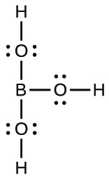
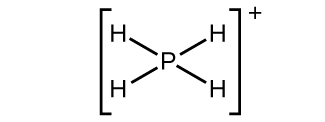

第18章 典型金属、半金属、および非金属

図18.1 | シリコンウェハーを準備する際には、純度が非常に重要です。クリーンルーム内の技術者が不純物のないシリコンを準備しています(左側)。VLSI ResearchのCEOであるドン・ハチソンが、純粋なシリコンウェハーを披露しています(中央)。Pentiumチップに覆われたシリコンウェハーは、現在使われている多くの電子機器に使われているシリコンウェハーを拡大したものです(右側)。(credit middle: modification of work by “Intel Free Press”/Flickr; credit right: modification of work by Naotake Murayama)
この章の概要
18.1 周期性
18.2 典型金属の産出と調製
18.3 半金属の構造と一般的性質
18.4 非金属の構造と一般的性質
18.5 水素の産出・調製・化合物
18.6 炭酸塩の産出・調製・性質
18.7 窒素の産出・調製・性質
18.8 リンの産出・調製・性質
18.9 酸素の産出・調製・化合物
18.10 硫黄の産出・調製・性質
18.11 ハロゲンの産出・調製・性質
18.12 貴ガスの産出・調製・性質
はじめに
1800年代半ばに、元素の性質に周期的な関係性があるという観察から、周期表の発展がもたらされました。これらの性質の変化を理解した化学者たちは、その知識を使ってさまざまな技術的課題を解決してきました。たとえば、シリコンをはじめとする半導体は、私たちがこれらの物質の電気的性質を微調整することができるようになったために、現代のエレクトロニクスにおける支柱となっています。この章では、周期表の中の典型金属、半金属、非金属の重要な性質を探求していきます。
18.1 周期性
この節が終わるまでに、あなたは次のことができるようになります:
•元素を分類する
•典型元素の周期的な性質を予測する
私たちはこの節を、典型金属の振る舞いと典型金属の周期表上での位置との関係を検討することから始めます。この節の主な焦点は、周期性を典型金属へと適用することです。
元素は電子配置にしたがってグループに分けることができます。典型元素とは、s軌道とp軌道が満たされる元素です。遷移元素とは、d軌道(周期表の第3～11族)が満たされる元素であり、内部遷移金属とは、f軌道が満たされる元素です。第11族の元素ではd軌道が満たされます。したがって、第12族の元素は、最後の電子がs軌道に入るために、典型元素としての資格があります。典型元素の中の金属が典型金属です。金属特性とは、元素の外側の価電子がなくなることに起因するものであり、高い熱伝導率や高い電気伝導率、その他の物理的・化学的性質をもたらします。非放射性の典型金属は、周期表の第1、第2、第3、第12、第13、第14、第15族の中に20種類あります(図18.2で黄色で色付けされている元素)。放射性元素のコペルニシウム、フレロビウム、ポロニウム、リバモリウムも金属ですが、本章の範囲を超えています。
典型金属に加えて、典型元素のいくつかは半金属です。半金属とは、金属と非金属の中間の性質を持つ元素です。これらの元素は典型的には半導体です。
残りの典型元素は非金属です。一般的にカチオンや(イオン結合を含む)イオン化合物を形成する金属とは異なり、非金属はアニオンまたは分子化合物を形成する傾向があります。一般に、金属と非金属の組み合わせは、塩を生成します。塩はカチオンとアニオンからなるイオン化合物です。

図18.2 | 周期表の中に典型金属の位置が示されています。非金属は緑色、半金属は紫色、遷移金属と内部遷移金属は青色で示されています。
典型金属のほとんどは、空気中の水や酸素と容易に反応するため、未結合の状態では自然界には存在しません。しかしながら、ベリリウム、マグネシウム、亜鉛、カドミウム、水銀、アルミニウム、スズ、鉛などの元素は、空気との反応が非常に遅いため、自然界に存在する鉱物から単離して使用することが可能です。これらの元素がゆっくりと反応する理由の一部は、これらの元素が空気と反応して保護コーティングを形成するためです。この保護コーティングの形成は不動態化です。このコーティングは、酸化物や他の化合物の非反応性の膜です。元素のマグネシウム、アルミニウム、亜鉛、スズは、針金、調理器具、ホイル、多くの家庭用品や個人用品などといった、数多くの身近な物品の製造において重要なものです。ベリリウム、カドミウム、水銀、鉛は容易に入手できますが、毒性があるため用途に制限があります。
第1族:アルカリ金属
アルカリ金属のリチウム、ナトリウム、カリウム、ルビジウム、セシウム、フランシウムは周期表の第1族を構成しています。水素は第1族に含まれていますが(また、第17族にも含まれていますが)、非金属であるため、この章で後ほど別途検討することとします。アルカリ金属という名前は、これらの金属とその酸化物が水と反応して非常に塩基性(アルカリ性)の溶液を形成するという事実に言及するものです。
アルカリ金属の性質は、同じ族の元素として期待されるとおりに、お互いに似ています。アルカリ金属は、その周期の中では、最大の原子半径と最小の第一イオン化エネルギーを有しています。この組み合わせにより、それぞれの最外殻(原子価殻)にある単一の電子を非常に簡単に取り除くことができます。この価電子が容易に失われるということは、これらの金属が1+の電荷を持つ安定なカチオンを容易に形成することを意味します。原子番号が大きくなるほどそれらの反応性は高くなりますが、これは孤立した価電子を失いやすくなる(イオン化エネルギーの低下)ためです。酸化が非常に容易なので、その逆の還元は困難であり、これらの元素の単離が難しい理由を説明してくれます。固体のアルカリ金属は非常に軟らかいです。図18.3に示されているリチウムは、あらゆる金属の中で最も低い密度を有しています(0.5 g/cm³)。
アルカリ金属はすべて水と激しく反応して、水素気体と金属の水酸化物の塩基性溶液を形成します。これは、アルカリ金属が水素よりも酸化しやすいことを意味します。例として、リチウムと水との反応は:
\[ {\rm 2Li\ (s) + 2H_2 O\ (l) ⟶ 2LiOH\ (aq) + H_2\ (g)}\\ \]

図18.3 | リチウムが灯油の中で浮くのは、その密度が灯油の密度よりも小さいからです。
アルカリ金属は、すべての非金属(貴ガスを除く)と直接反応して、1+の金属イオンを含む二元イオン化合物を生成します。これらの金属は非常に反応性が高いため、空気中の水分と酸素の両方との接触を避ける必要があります。したがって、これらの金属は、図18.4に示されるように、空気や水分との接触を避けるために、密閉容器内で鉱油に入れて保管されています。純金属はその反応性の高さから、自然界では決して遊離(未結合)状態で存在することはありません。また、この反応性の高さのために、これらの金属はアルカリ金属化合物の電気分解によって調製する必要があります。
図18.4 | 実験室用のカリウムは、空気や水との接触を防ぐために、灯油や鉱油の中、または密閉容器の中に入ったスティックやビーズとして保管されます。(credit: http://images-of-elements.com/potassium.php)
他の多くの金属とは異なり、アルカリ金属の反応性と軟らかさは、これらの金属を構造的な用途には不向きなものとします。しかしながら、アルカリ金属の反応性が利点となるような用途もあります。たとえば、チタンやジルコニウムのような金属の製造は、ナトリウムがこれらの金属の化合物を還元する能力に部分的に依拠しています。ある種の染料、薬剤、および香水を含む多くの有機化合物の製造は、リチウムまたはナトリウムによる還元を利用しています。
ナトリウムおよびその化合物は、図18.5で見られるように、炎に明るい黄色の色を与えます。ナトリウムの蒸気を通した放電もまた、この色を作り出します。これは、どちらの場合も、発光スペクトルの一例です(電子構造の章で議論したように)。街路灯にナトリウム蒸気灯が使われることがありますが、これはナトリウム蒸気の光が他のほとんどの光源のものよりも霧を透過しやすいからです。なぜなら、霧は白色光を散乱しますが、黄色光はそこまで散乱しないためです。他のアルカリ金属およびそれらの塩も、炎に色を与えます。リチウムは鮮やかな深紅色を呈する一方で、他のアルカリ金属は淡い紫色を呈します。
図18.5 | ナトリウム塩の溶液に針金を浸した後に、その針金を加熱すると、ナトリウムに特徴的な明るい黄色の光が発出します。
学習へのリンク
このビデオ(http://openstaxcollege.org/l/16alkalih2o)は、アルカリ金属と水の反応を示しています。
第2族:アルカリ土類金属
アルカリ土類金属(ベリリウム、マグネシウム、カルシウム、ストロンチウム、バリウム、ラジウム)は、周期表の第2族を構成しています。アルカリ金属という名前は、この族の重い方のメンバーの酸化物が水と反応してアルカリ性の溶液を作るという事実に由来しています。第1族から第2族になると核電荷が増加します。この電荷の増加のために、アルカリ土類金属の原子は同じ周期のアルカリ金属よりも小さく、より高い第1イオン化エネルギーを有しています。イオン化エネルギーが高いため、アルカリ土類金属はアルカリ金属に比べて反応性が低いですが、それでも非常に反応性の高い元素であることに変わりはありません。アルカリ土類金属の反応性は、予想される通り、サイズが大きくなり、イオン化エネルギーが低下するにつれて増加します。化学反応では、これらの金属は両方の価電子を容易に失って化合物を形成し、その中では2+の酸化状態を示します。その反応性の高さから、アルカリ土類金属は(アルカリ金属と同様に)電気分解によって生成するのが一般的です。イオン化エネルギーが低いにもかかわらず、イオン化エネルギーの最も高い2種類の金属(ベリリウムとマグネシウム)は、いくらかの共有結合性を示す化合物を形成します。アルカリ金属と同様に、より重いアルカリ土類金属は炎に色を与えます。アルカリ金属の場合と同じく、これはアルカリ土類金属の元素の発光スペクトルの一部です。カルシウムとストロンチウムは赤色の色合いを作り出しますが、バリウムは緑色を作り出します。
マグネシウムは銀白色の金属で、高温では展性と延性があります。不動態化により、マグネシウム金属の反応性は低下します。空気に触れると、金属の表面にマグネシウムオキシカーボネートの密着層が形成され、それ以上の反応を阻害します。(炭酸塩は大気中の二酸化炭素の反応から来たものです。)マグネシウムは、広く使用されている構造用金属の中で最も軽量であるため、マグネシウムの生産のほとんどが軽量合金のために行われています。
マグネシウム(図18.6に示されています)、カルシウム、ストロンチウム、バリウムは水や空気と反応します。室温では、バリウムが最も活発な反応を示します。水との反応の生成物は、水素と金属の水酸化物です。水素気体の生成は、重いアルカリ土類金属が水素よりも優れた還元剤(より酸化されやすい)であることを示しています。予想される通り、これらの金属は酸と非金属の両方と反応してイオン化合物を形成します。アルカリ金属のほとんどの塩とは異なり、アルカリ土類金属の一般的な塩の多くは、水に溶けません。それは、二価の金属イオンを含むこれらの化合物の高い格子エネルギーのためです。

図18.6 | 左から右へ:Mg(s)、pH7の温水、結果として生じるpH7超の溶液(フェノールフタレイン指示薬のピンク色で示されています)。(credit: modification of work by Sahar Atwa)
高温のマグネシウムの強力な還元力は、いくつかの金属をそれらの酸化物から調製するのに有用です。実際、マグネシウムの酸素に対する親和性は非常に高く、マグネシウムを燃やすと二酸化炭素と反応して元素の炭素を生成します:
\[ {\rm 2Mg\ (s) + CO_2\ (g) ⟶ 2MgO\ (s) + C\ (s)}\\ \]
この理由のため、CO₂消火器ではマグネシウムの火を消すことはできません。また、マグネシウムを燃やすと白く輝く光が出るので、マグネシウムは閃光弾や花火にも有用です。
第12族
第12族の元素は遷移元素です。しかしながら、最後に加えられる電子はd電子ではなくs電子です。最後に加えられる電子がs電子であることから、これらの元素は典型金属、すなわちポスト遷移金属としての資格を有しています。第12族の元素は、遷移金属というよりもアルカリ土類金属に似た振る舞いをします。第12族には、亜鉛、カドミウム、水銀、コペルニシウムの4つの元素が含まれています。これらの元素はそれぞれ外殻(ns²)に2個の電子を持っています。これらの金属の原子が2+の電荷を持つカチオンを形成するときには、外殻の2つの電子が失われ、擬似的に貴ガスの電子配置になります。水銀は、例外になる場合があります。なぜなら、二原子のHg₂²⁺イオンを含む化合物の中では、水銀も1+の酸化状態を示すからです。カドミウムと水銀は、それらの元素の形態と化合物の中とでは、どちらも毒性があります。
第12族では亜鉛が最も反応性が高く、水銀が最も反応性が低いです。(これは、原子番号が上がるほど反応性が高くなるという第1族と第2族の金属の反応性の傾向とは逆です。原子番号の増加に伴う反応性の増加は、第1族と第2族の金属でのみ起こります。)この反応性の低下は、擬似的な貴ガス構造を持つイオンの生成や、ここでの議論の範囲を超えた他の要因によるものです。亜鉛とカドミウムの化学的な振る舞いは互いによく似ていますが、水銀の化学的な振る舞いとは異なります。
亜鉛とカドミウムは水素よりも還元電位が低く、アルカリ金属やアルカリ土類金属と同様に、酸と反応するときに水素気体を生成します。図18.7に示されるような亜鉛と塩酸との反応は:
\[ {\rm Zn\ (s) + 2H_3 O^+\ (aq) + 2Cl^−\ (aq) ⟶ H_2\ (g) + Zn^{2+}\ (aq) + 2Cl^−\ (aq) + 2H_2 O\ (l)}\\ \]
図18.7 | 亜鉛は活性金属です。亜鉛は塩酸の中で溶解し、無色のZn²⁺イオン、Cl⁻イオン、水素気体の溶液を形成します。
亜鉛は銀色の金属ですが、すぐに変色して青-灰色の外観になります。この色の変化は、塩基性の炭酸塩であるZn₂(OH)₂CO₃の付着コーティングによるもので、それはこの金属を不動態化してそれ以上の腐食を抑制します。乾電池とアルカリ電池には、亜鉛のアノードが含まれています。真鍮(CuとZn)と一部の青銅(Cu、Sn、場合によってはZn)が重要な亜鉛合金です。亜鉛の生産量の約半分は、鉄やその他の金属を腐食から保護する役割を果たしています。この保護は、犠牲陽極(ガルバニ陽極としても知られており、さまざまな金属にカソード防食を提供する手段です)の形をとることもあれば、保護される金属の上の薄いコーティングとして行われることもあります。亜鉛めっき鋼とは、亜鉛で保護コーティングされた鋼材のことです。
日常生活の中の化学
犠牲陽極
犠牲陽極(または、ガルバニ陽極)とは、さまざまな金属のカソード防食を行うための手段です。カソード防食とは、腐食する金属をカソードへと変えることにより腐食を防ぐことです。カソードになると、その金属は酸化過程である腐食に抵抗します。腐食はカソードではなく犠牲陽極で発生します。
このようなシステムの構築は、保護を必要とする金属へ、より活性な(より負の還元電位の)金属を取り付けることから始まります。取り付けは、直接でも良いですし、または針金を介して行うこともできます。回路を完成させるには、塩橋が必要です。この塩橋は、しばしば海水または地下水です。回路が完了すると、酸化(腐食)はカソードではなくアノードで発生します。
一般的に使用されている犠牲陽極は、マグネシウム、アルミニウム、亜鉛です。マグネシウムは、3つの中で最も負の還元電位を持っており、塩橋が淡水のように低電解質濃度のために効率が低い場合に最適です。亜鉛とアルミニウムは、塩水の中でマグネシウムよりも良く機能します。アルミニウムは亜鉛よりも軽く、能力も高いですが、酸化コーティングがアルミニウムを不動態化することがあります。特殊なケースでは、他の材料が有効です。たとえば、鉄は銅を保護します。
水銀は亜鉛やカドミウムとは大きく異なります。水銀は25°Cで液体になる唯一の金属です。多くの金属は水銀の中で溶解し、アマルガムと呼ばれる溶液を形成します(アマルガムの囲み記事を参照)。アマルガムとは、水銀と、1つかそれ以上の他の金属との合金です。図18.8に示される水銀は、水素よりも酸化しにくい非反応性の元素です。したがって、水銀は酸から水素を取り除くことはありませんが、硝酸のような強い酸化性の酸と反応します:
\[ {\rm Hg\ (l) + HCl\ (aq) ⟶ 反応せず}\\ {\rm 3Hg\ (l) + 8HNO_3\ (aq) ⟶ 3Hg(NO_3 )_2\ (aq) + 4H_2 O\ (l) + 2NO\ (g)}\\ \]
最初に生成された透明なNOは、すぐに酸化されて赤褐色のNO₂となります。
図18.8 | 左から右へ:Hg(l)、Hgと濃縮されたHCl、Hgと濃縮されたHNO₃。(credit: Sahar Atwa)
ほとんどの水銀化合物は加熱すると分解します。ほとんどの水銀化合物には、2+の酸化状態の水銀が含まれています。水銀が過剰に存在すると、Hg₂²⁺イオンを含む化合物を形成する可能性があります。水銀化合物はすべて毒性があり、合成の際には細心の注意が必要です。
日常生活の中の化学
アマルガム
アマルガムとは、水銀と、1つかそれ以上の他の金属との合金のことです。これは、スチールが鉄と他の金属との合金であると考えるのと似ています。ほとんどの金属は水銀とアマルガムを形成しますが、主な例外は鉄、白金、タングステン、タンタルです。
水銀に伴う毒性の問題のために、アマルガムの使用は大幅に減少しています。歴史的には、アマルガムは電解電池や金の抽出に重要なものでした。アルカリ金属のアマルガムは、純粋なアルカリ金属よりも強力な還元剤であり、取り扱いが容易であるため、現在でも使用されています。
探鉱者たちは、微粉状態の金を見つける際の問題を抱えていました。彼らは、自分たちの選鉱鍋に水銀を加えることで、金を水銀の中に集めてアマルガムを形成し、より簡単に金を集めることができることを知りました。残念なことに、長年にわたって少量の水銀が流失したことにより、カリフォルニアの多くの河川が水銀で汚染されました。
歯科医は、虫歯を埋めるために銀や他の金属を含むアマルガムを使用します。低コスト、扱いの容易さ、および代替材料と比較した場合の寿命など、アマルガムを使用するいくつかの理由があります。歯科用アマルガムは重量比で約50%の水銀を含んでおり、近年、水銀の毒性が懸念されています。
利用可能な最良のデータを検討した結果、食品医薬品局(FDA)は、アマルガムをベースとした詰め物は、成人と6歳を超える子供にとって安全であると考えています。複数の詰め物を使用したとしても、患者の水銀レベルは、害に関連付けられる最低レベルをはるかに下回ったままです。臨床研究は歯科アマルガムと健康問題の間に何のつながりも見出していません。6歳未満の子供や妊婦のケースでは、健康上の問題は同じではないかもしれません。FDAの結論は、環境保護庁(EPA)や疾病対策センター(CDC)の意見と一致しています。唯一の健康上の注意事項は、一部の人がアマルガムまたはその成分の1つにアレルギーを持っているということです。
第13族
第13族には、半金属のホウ素と、金属のアルミニウム、ガリウム、インジウム、およびタリウムが含まれています。最も軽い元素であるホウ素は半導性であり、その二元化合物は共有結合性であって、イオン性ではない傾向があります。この族の残りの元素は金属ですが、それらの酸化物や水酸化物は性質が異なります。アルミニウムとガリウムの酸化物と水酸化物は、酸性と塩基性の両方の振る舞いを示します。この2つのように、酸と塩基の両方に反応する物質は両性です。この性質は、この2つの元素の非金属的な振る舞いと金属的な振る舞いの組み合わせを表しています。インジウムとタリウムの酸化物と水酸化物は、これら2つの元素の明らかに金属的な性質にしたがって、塩基性の振る舞いしか示しません。ガリウムの融点は異常に低く(約30°C)、手に持っていると溶けてしまいます。
アルミニウムは酸と塩基の両方と反応するので両性です。酸との典型的な反応は:
\[ {\rm 2Al\ (s) + 6HCl\ (aq) ⟶ 2AlCl_3\ (aq) + 3H_2\ (g)}\\ \]
アルミニウムと塩基との反応の生成物は反応条件に依存し、以下のものはその可能性の1つです:
\[ {\rm 2Al\ (s) + 2NaOH\ (aq) + 6H_2 O\ (l) ⟶ 2Na [Al(OH)_4]\ (aq) + 3H_2\ (g)}\\ \]
酸と塩基の両方で、アルミニウムとの反応により水素気体が発生します。
第13族元素は、原子価殻の電子配置がns²np¹です。アルミニウムは通常、反応時にその価電子をすべて使用して化合物を生成し、その中で3+の酸化状態を持ちます。これらの化合物の多くは共有結合性ですが、AlF₃や Al₂(SO₄)₃のようなイオン性の化合物もあります。アルミニウム塩の水溶液には、カチオン[Al(H₂O)₆]³⁺、省略してAl³⁺(aq) が含まれています。ガリウム、インジウム、タリウムもまた、M³⁺イオンを含むイオン化合物を形成します。これら3つの元素は、3つの価電子から期待される3+の酸化状態だけでなく、期待される値より2つ少ない酸化状態(ここでは1+)も示します。この現象は不活性電子対効果であり、その族において期待される値よりも2つ低い酸化状態を持つ安定なイオンが形成されることを指します。その電子対は、それらの元素の原子価s軌道です。一般に、pブロックの下方の元素では不活性電子対効果が重要です。水溶液中では、Tl⁺(aq)イオンは、Tl³⁺(aq)イオンよりも安定です。一般に、これらの金属は空気や水と反応して3+イオンを形成しますが、タリウムは反応してタリウム(I)誘導体を生じさせます。第13族の金属はすべて、硫黄、リン、ハロゲンなどの非金属と直接反応し、二元化合物を形成します。
第13族の金属(Al、Ga、In、Tl)はすべて反応性です。しかしながら、空気にさらされると、金属酸化物の丈夫で硬い薄膜が形成されることで不動態化が起こります。この膜を破壊することで不動態化に対抗し、金属を反応させることができます。この膜を破壊する1つの方法は、不動態化した金属を水銀にさらすことです。金属の一部は水銀に溶解してアマルガムを形成し、保護的な酸化層を剥がして金属をさらなる反応へと露出させます。アマルガムの形成により、その金属は空気や水と反応することができます。
学習へのリンク
アルミニウムは酸化しやすいですが、その不動態化のおかげで、アルミニウムは強度が高く軽量な建築材料として重宝されています。アマルガムが形成されるため、水銀はアルミニウム製の構造材に対して腐食性があります。このビデオ(http://openstaxcollege.org/l/16aluminumhg)は、少量の水銀元素を加えることによって、アルミニウム製の梁の品質がどのように低下するかを示しています。
アルミニウムの最も重要な用途は、建設産業や輸送産業、そしてアルミニウム缶やアルミニウム箔の製造です。これらの用途は、この金属の軽さ、強靭さ、強さ、腐食耐性に依拠しています。アルミニウムは熱伝導性に優れ、腐食にも耐性を有しているため、調理器具の製造に役立っています。
アルミニウムは非常に優れた還元剤であり、特定の金属をその酸化物から分離する際に、他の還元剤の代わりになることがあります。炭素による還元よりも高価ですが、アルミニウムはMo、W、Crの酸化物からの分離において重要です。
第14族
第14族の金属のメンバーは、スズ、鉛、およびフレロビウムです。炭素は、典型的な非金属です。この族の残りの元素であるケイ素とゲルマニウムは、半金属の例です。スズと鉛は、安定な二価のカチオンであるSn²⁺とPb²⁺を形成します(この族の酸化状態である4+よりも2つ下の酸化状態にあります)。この酸化状態の安定性は、不活性電子対効果の結果です。スズと鉛はまた、正式な4+の酸化状態を持つ共有結合化合物も形成します。たとえば、SnCl₄とPbCl₄は低沸点の共有結合性の液体です。
図18.9 | (a)塩化スズ(II)はイオン性の固体であり、(b)塩化スズ(IV)は共有結合性の液体です。
スズは、化学量論と反応条件に基づいて、非金属や酸と容易に反応してスズ(II)化合物を形成したり(水素よりも容易に酸化されやすいことを示しています)、非金属と反応してスズ(II)化合物またはスズ(IV)化合物を形成したりします(図18.9に示されています)。鉛は反応性が低いです。鉛は水素よりもわずかに酸化しやすいだけであり、酸化には通常は高温の濃縮された酸が必要です。
これらの元素の多くは同素体として存在しています。同素体とは、同じ物理的状態にある同じ元素が、異なる化学的・物理的性質を持つような2つかそれ以上の形態をとったもののことです。スズには2つの一般的な同素体があります。これらの同素体は、灰色(脆い)スズと白色スズです。他の同素体と同様に、これらのスズの形態の間の違いは、その原子の配置にあります。白色スズは13.2°C超で安定しており、他の金属と同様に展性があります。低温では、灰色スズの方がより安定した形態です。灰色スズは脆く、崩れて粉になる傾向があります。結果として、寒冷地では、特に寒波が長く続くと、スズでできた製品は崩壊します。この変化は発生した場所からゆっくりと進行し、最初に形成された灰色スズがさらなる変化を触媒します。ある意味、この効果は植物内や動物の体内で感染が広がるのと似ているため、人々はこのプロセスをスズ病やスズペストと呼ぶようになりました。
スズの主な用途は、スチールのコーティングに使用されて、スズめっき鉄板を形成するものであり、これがブリキ缶のスズを構成しています。重要なスズ合金は青銅(CuとSn)とはんだ(SnとPb)です。自動車の鉛蓄電池では、鉛が重要な役割を果たしています。
第15族
第15族の中で最も重いビスマスは、他の典型金属に比べて反応性が低い金属です。ビスマスは、その5つの価電子のうち3つの電子を活性な非金属に容易に与え、3価の陽イオンであるBi³⁺を形成します。ビスマスは、強い酸化剤で処理した場合にのみ、この族の5+の酸化状態の化合物を形成します。3+の酸化状態の安定性も不活性電子対効果の一例です。
18.2 典型金属の産出と調製
この節が終わるまでに、あなたは次のことができるようになります:
•典型金属の天然の供給源を特定する
•天然の供給源からこれらの元素を調製するために使用される電気分解プロセスおよび化学的還元プロセスを記述する
その反応性のために、自然界ではほとんどの典型金属を遊離元素として見かけることはありません。しかしながら、ほとんどの典型金属のイオンを含む化合物は豊富に存在します。この節では、私たちは、これらの化合物から金属を単離するために用いられる2つの一般的な技術、すなわち電気分解法と化学的還元法について考えていきます。
これらの金属は主に鉱物中に存在します。リチウムはケイ酸塩鉱物またはリン酸塩鉱物中に見出され、ナトリウムとカリウムは古代の海の蒸発に起因する塩類鉱床やケイ酸塩の中に見出されます。アルカリ土類金属は、ケイ酸塩として、またベリリウムを除いて炭酸塩や硫酸塩として存在します。ベリリウムは、鉱物の緑柱石(Be₃Al₂Si₆O₁₈)として存在します(緑柱石は、特定の不純物を伴って、宝石のエメラルドまたはアクアマリンとなることがあります)。マグネシウムは海水中にあり、重いアルカリ土類金属と一緒に、ケイ酸塩、炭酸塩、硫酸塩として存在します。アルミニウムは、多くの種類の粘土とボーキサイト(不純なアルミニウム酸化物の水酸化物)の中に豊富に存在します。主なスズ鉱石は酸化スズ石(SnO₂)であり、主な鉛鉱石・タリウム鉱石は硫化物または硫化物が風化した生成物です。残りの典型金属は、亜鉛やアルミニウムの鉱石に不純物として含まれています。
電気分解
第1族と第2族の金属のイオン、そしてアルミニウムは、還元することが非常に困難です。そのため、これらの元素は、電気化学の章で議論した重要なプロセスである電気分解によって調製する必要があります。簡単に説明すると、電気分解は電気エネルギーを使って不利な化学反応を完了へと駆動させるものであり、反応性のある金属を純粋な形態で単離させるのに有用なものです。ナトリウム、アルミニウム、マグネシウムが典型的な例です。
ナトリウムの調製
ナトリウムを製造するための最も重要な方法は、溶融した塩化ナトリウムの電気分解です。その構成は、図18.10に示されているようなダウンズセルです。このプロセスの反応は以下のとおりです:
\[ {\rm 2NaCl\ (l) \xrightarrow[600\ °C]{電気分解} 2Na\ (l) + Cl_2\ (g)}\\ \]
この電解電池には溶融した塩化ナトリウム(融点 801 °C)が含まれており、これに塩化カルシウムを加えて融点を 600 °Cに下げています(束一的効果)。電池に直流電流を流すと、ナトリウムイオンは負に帯電したカソードに移動して電子を受け取り、そのイオンはナトリウム金属に還元されます。塩化物イオンは正に帯電したアノードに移動し、電子を失い、塩素気体へと酸化します。電池全体の反応は、以下の反応を足し合わせて得られます:
\[ {\rm カソード:2Na^+ + 2e^− ⟶ 2Na\ (l)}\\ {\rm アノード:2Cl^− ⟶ Cl_2\ (g) + 2e^−}\\ {\rm 全体の変化: 2Na^+ + 2Cl^− ⟶ 2Na\ (l) + Cl_2\ (g)}\\ \]
溶融したナトリウムと塩素を分離することで、再結合を防ぐことができます。溶融した塩化ナトリウムよりも密度の低い液体ナトリウムは、表面に浮いて収集器へと流れ込みます。気体となった塩素は貯蔵タンクへと向かいます。塩素もまた価値のある生成物です。
図18.10 | ダウンズセルを用いて、溶融した塩化ナトリウムの電気分解により純粋なナトリウム金属を単離しています。水素イオンはナトリウムイオンよりも還元されやすいため、ナトリウム塩の水溶液を電気分解しても、所望のナトリウム金属ではなく水素気体がカソードに形成される結果となり、ナトリウムを単離することはできません。また、NaClの溶融には高温が必要であるため、液体の金属ナトリウムが形成されることになります。
アルミニウムの調製
アルミニウムの調製には、オハイオ州のオーバリン・カレッジの学生時代にこの問題に取り組み始めたチャールズ・M・ホールが1886年に発明したプロセスが利用されています。ポール・L・T・エルーは、1、2か月後にフランスで独自にこのプロセスを発見しました。2人の発明者に敬意を表して、この電解電池は、ホール-エルー・セルとして知られています。ホール-エルー・セルは、アルミニウムを製造するための電解電池です。図18.11は、ホール-エルー・セルを示しています。
アルミニウムの生産は、アルミニウムの最も一般的な供給源であるボーキサイトの精製から始まります。ボーキサイトAlO(OH)と高温の水酸化ナトリウムとの反応によって、可溶性アルミン酸ナトリウムが形成されますが、粘土やその他の不純物は未溶解のまま残ります:
\[ {\rm AlO(OH)\ (s) + NaOH\ (aq) + H_2 O\ (l) ⟶ Na[Al(OH)_4]\ (aq)}\\ \]
濾過により不純物を除去した後、アルミン酸塩に酸を加えると、水酸化アルミニウムの再沈殿が生じます:
\[ {\rm Na[Al(OH)_4]\ (aq) + H_3 O^+\ (aq) ⟶ Al(OH)_3\ (s) + Na^+\ (aq) + 2H_2 O\ (l)}\\ \]
次のステップは、沈殿した水酸化アルミニウムを濾過によって除去することです。水酸化アルミニウムを加熱すると、酸化アルミニウムAl₂O₃が生成され、これは氷晶石Na₃AlF₆とフッ化カルシウムCaF₂の溶融混合物の中に溶解します。この溶液の電気分解を、図18.11に示されるような電池内で行います。カソードではアルミニウムイオンが金属へと還元され、アノードでは酸素、一酸化炭素、二酸化炭素が生成されます。
図18.11 | アルミニウムの製造には電解電池が使用されます。氷晶石とフッ化カルシウムの溶液を電気分解すると、カソードではアルミニウム金属が、アノードでは酸素、一酸化炭素、二酸化炭素が生成されます。
マグネシウムの調製
マグネシウムは、電気分解によって大量に単離されるもう1つの金属です。マグネシウムの主要な供給源は、塩化マグネシウムを約0.5%含む海水です。海水に水酸化カルシウムを加えると水酸化マグネシウムが沈殿します。水酸化マグネシウムに塩酸を加え、生じた水溶液を蒸発させると、純粋な塩化マグネシウムが得られます。溶融した塩化マグネシウムの電気分解により、液体のマグネシウムと塩素気体が生成されます:
\[ {\rm MgCl_2\ (aq) + Ca(OH)_2\ (aq) ⟶ Mg(OH)_2\ (s) + CaCl_2\ (aq)}\\ {\rm Mg(OH)_2\ (s) + 2HCl\ (aq) ⟶ MgCl_2\ (aq) + 2H_2 O\ (l)}\\ {\rm MgCl_2\ (l) ⟶ Mg\ (l) + Cl_2\ (g)}\\ \]
一部の生産施設では、電気分解から完全に手を引いています。次の項では、ピジョン法がどのようにしてマグネシウムの化学的還元につながるかを見ていきます。
化学的還元
典型金属の多くは、他の元素を還元剤として用いた化学的還元により単離することが可能です。一般に、化学的還元は電気分解よりもはるかに安価です。その理由から、化学還元がこれらの元素の単離のために選択される方法となっています。たとえば、カリウム、ルビジウム、セシウムの溶融した塩化物を金属ナトリウムで還元することができるため、これらの金属を化学的還元により製造することが可能です。これらの金属がナトリウムよりも反応性が高いことを考えると、これは驚くべきことかもしれませんが、形成された金属はナトリウムよりも揮発性が高く、回収のために蒸留することができます。金属の蒸気を除去することによって、より多くの金属を生成するように平衡が移動します(基本的な平衡の概念に関する章のル・シャトリエの原理の議論の中で、反応がどのように駆動されるかを参照してください)。
マグネシウム、亜鉛、スズの生成は、化学的還元についての追加の例を提供してくれます。
マグネシウムの調製
ピジョン法は、酸化マグネシウムと元素のケイ素を高温で反応させて純粋なマグネシウムを生成するプロセスです:
\[ {\rm Si\ (s) + 2MgO\ (s) \xrightarrow{Δ} SiO_2\ (s) + 2Mg\ (g)}\\ \]
この反応は熱力学的な観点では不利な反応ですが、生成したマグネシウムの蒸気を除去することで、ル・シャトリエの原理を利用して反応を順方向に進め続けています。中国を中心とした世界のマグネシウム生産の75%以上はこのプロセスで生産されています。
亜鉛の調製
亜鉛鉱石は通常、硫化亜鉛、酸化亜鉛、または炭酸亜鉛を含んでいます。これらの化合物を鉱石から分離した後、空気中で加熱すると、以下の反応のいずれかによって鉱石から酸化亜鉛へと変換されます:
\[ {\rm 2ZnS\ (s) + 3O_2\ (g) \xrightarrow{Δ} 2ZnO\ (s) + 2SO_2\ (g)}\\ {\rm ZnCO_3\ (s) \xrightarrow{Δ} ZnO\ (s) + CO_2\ (g)}\\ \]
石炭の形態をした炭素は、酸化亜鉛を還元して亜鉛蒸気を形成します:
\[ {\rm ZnO\ (s) + C\ (s) ⟶ Zn\ (g) + CO\ (g)}\\ \]
亜鉛(沸点907°C)は蒸留して凝縮させることができます。この亜鉛にはカドミウム(767°C)、鉄(2862°C)、鉛(1750°C)、ヒ素(613°C)といった不純物が含まれています。慎重に再蒸留することで純粋な亜鉛が得られます。ヒ素とカドミウムは沸点が低いため、亜鉛から蒸留されます。より高い温度において、主として鉛と鉄を含むその他の不純物から亜鉛が蒸留されます。
スズの調製
焚き火の熱い炭で酸化スズ(IV)がすぐに還元されることは、古代世界においてスズの知識があったことを説明してくれます。現代のプロセスでは、SnO₂を含むスズ鉱石を焙焼することにより、ヒ素や硫黄などの汚染物質を揮発性酸化物として除去します。残った物質を塩酸で処理することで、他の金属の酸化物を除去します。精製された鉱石を炭素とともに1000°C以上の温度で加熱するとスズが生成されます:
\[ {\rm SnO_2\ (s) + 2C\ (s) \xrightarrow{Δ} Sn\ (s) + 2CO\ (g)}\\ \]
溶融したスズは炉の底に集まり、引き出されてブロック状に鋳造されます。
18.3 半金属の構造と一般的性質
この節が終わるまでに、あなたは次のことができるようになります:
•半金属の一般的な調製、性質、および用途について記述する
•ホウ素とケイ素の調製、性質、および化合物について記述する
半金属と呼ばれる一連の6つの元素が周期表の中で非金属と金属とを分けています。半金属は、ホウ素、ケイ素、ゲルマニウム、ヒ素、アンチモン、テルルです。これらの元素は一見したところ金属のように見えますが、金属ほどには電気を通さないので半導体です。それらの電子は、金属の導体の電子と比べて、原子核に強く結合しているため、それらの元素は半導体となります。その化学的性質は、金属と非金属の中間に位置しています。たとえば、純粋な半金属は共有結合性結晶を形成します(非金属と同様)が、大抵の場合は一原子アニオンを形成することはありません(金属と同様)。このような中間的な振る舞いは、それらの電気陰性度の値が中間的であることに一部は起因しています。本節では、私たちは半金属の化学的な振る舞いについて簡単に議論し、半金属の中でも特にホウ素とケイ素の2つの元素についてより詳しく扱っていきます。
半金属のホウ素は、その隣の炭素とその斜め下のシリコンに対して多くの類似性を示します。3つの元素すべてが共有結合化合物を形成します。しかしながら、ホウ素は、その外側の電子構造が2s²2p¹であり、原子価軌道の中に持つことができるよりも1つ少ない価電子を持つという点で1つの明確な違いを持っています。ホウ素は、その安定な化合物のほとんどで3+の酸化状態を示しますが、この電子の不足は、ホウ素に対して他の(時には分数的な)酸化状態を形成する能力を与えます。これは、たとえば、水素化ホウ素において起こります。
ケイ素は原子価殻の電子配置が3s²3p²です。ケイ素は一般的には四面体構造を形成し、その中でsp³混成しており、4+の正式な酸化状態を伴います。炭素とケイ素の化学的性質の間の主な違いは、炭素-炭素結合の相対的な強さ、炭素が炭素自体と安定した結合を形成する能力、およびケイ素内の空の3d原子価殻軌道の存在に起因しています。ケイ素の空のd軌道とホウ素の空のp軌道は、四面体形のケイ素化合物と平面三角形のホウ素化合物がルイス酸として作用することを可能にします。一方、炭素は、利用可能な原子価殻軌道を持たないため、四面体形の炭素化合物はルイス酸として作用することができません。ゲルマニウムは、その化学的振る舞いにおいてケイ素に非常によく似ています。
ヒ素とアンチモンは一般的に化合物の中で3+または5+の酸化状態を示します。しかしながら、ヒ素は3-の酸化状態を示すヒ化物を形成することができます。これらの元素は乾燥した空気中ではわずかに変色するだけですが、温めると容易に酸化します。
テルルはほとんどの元素と直接結合します。最も安定なテルル化合物は、テルル化物(活性金属やランタニドと一緒に形成されたTe²⁻の塩)、および酸素、フッ素、塩素との化合物で、その中ではテルルは通常2+または4+の酸化状態を示します。テルル(VI)化合物(たとえば、TeF₆)が知られていますが、この最大のグループ酸化状態へと酸化することに対する抵抗性は顕著です。
半金属の構造
半金属の結晶構造では、共有結合が鍵を握っています。この点で、これらの元素は、その振る舞いが非金属に似ています。
元素のケイ素、ゲルマニウム、ヒ素、アンチモン、テルルは光沢のある金属のような見た目をした固体です。ケイ素とゲルマニウムはダイヤモンド構造で結晶化します。結晶中のそれぞれの原子は、正四面体の角にある4つの隣り合う原子との共有結合を有しています。ケイ素とゲルマニウムの単結晶は、巨大な三次元分子です。ヒ素にはいくつかの同素体がありますが、最も安定しているのは層状で、ひだのあるシート形のヒ素原子を含んでいるものです。それぞれのヒ素原子は、シート内の3つの他の原子と共有結合を形成しています。アンチモンの結晶構造は、ヒ素の結晶構造に似ています(どちらも図18.12に示されています)。ヒ素とアンチモンの構造は、この章で後述する黒鉛の構造に似ています。テルルは、テルル原子の無限のらせん状の鎖を含む結晶を形成します。鎖の中のそれぞれの原子は、他の2つの原子と結合しています。
学習へのリンク
立方晶ダイヤモンド(http://openstaxcollege.org/l/16crystal)の結晶構造を探ってみてください。

図18.12 | (a)ヒ素と(b)アンチモンは(c)黒鉛に似た層状構造をしていますが、層は平面的ではなくひだがあります。(d)元素のテルルはらせん状の鎖を形成します。
純粋な結晶のホウ素は透明です。その結晶は、図18.13に示されるように、それぞれの角にホウ素原子を持つ正二十面体で構成されています。ホウ素の最も一般的な形態では、正二十面体は、球の立方最密充填に似た方法で充填されます。それぞれの正二十面体内のすべてのホウ素-ホウ素結合は同一であり、長さは約176 pmです。ホウ素の異なる形態では、正二十面体の間には異なる配置と接続があります。
図18.13 | 正二十面体は、それぞれが正三角形である20個の面を持つ、対称的な固体の形状です。面は12個の角で接触しています。
ケイ素(シリコン)という名前は、「フリント(火打石)」を意味するラテン語の単語 silex に由来しています。半金属のケイ素は、鉱物の世界で最も重要なSi-O-Si結合を含む化合物を容易に形成します。この結合能力は、非金属の炭素と対照をなしています。炭素は、植物や動物の世界で最も重要な炭素-炭素結合を形成する能力を有します。
ホウ素とケイ素の産出、調製、および化合物
ホウ素は地球の地殻の重量の0.001%未満を占めています。それは、自然界では酸素との化合物中にのみ存在します。ホウ素は、火山地帯ではホウ酸B(OH)₃として、そして、カリフォルニアの砂漠地帯を含む乾燥湖地帯では、ホウ酸塩やホウ素酸素酸の塩(たとえば、ホウ砂Na₂B₄O₇⋅10H₂Oとして)広く分布しています。
元素のホウ素は室温では化学的に不活性であり、フッ素および酸素とだけ反応して、それぞれ三フッ化ホウ素BF₃、および酸化ホウ素B₂O₃を形成します。より高い温度では、ホウ素は、テルルと貴ガスを除くすべての非金属と、そしてほぼすべての金属と反応します。ホウ素は、濃縮された硝酸か硫酸とともに熱されたときにB₂O₃へと酸化します。ホウ素は非酸化性の酸とは反応しません。多くのホウ素化合物は水と容易に反応して、ホウ酸B(OH)₃(時にH₃BO₃として書かれます)を生じます。
酸化ホウ素をマグネシウム粉末で還元すると、茶色の非晶質粉末としてホウ素(純度95-98.5%)が生成します:
\[ {\rm B_2 O_3\ (s) + 3Mg\ (s) ⟶ 2B\ (s) + 3MgO\ (s)}\\ \]
非晶質物質とは、一見すると固体のように見えるものの、真の固体のような長距離秩序を持たない物質のことです。塩酸で処理すると酸化マグネシウムが除去されます。ホウ素のさらなる精製は、不純なホウ素を三塩化ホウ素に変換することから始まります。次のステップは、三塩化ホウ素と水素の混合物を加熱することです:
\[ {\rm 2BCl_3\ (g) + 3H_2\ (g) \xrightarrow{1500 °C} 2B\ (s) + 6HCl\ (g) \hspace{20pt}} ΔH° = {\rm 253.7\ kJ}\\ \]
ケイ素は、地球の地殻の質量の約4分の1を占めており、酸素に次いで2番目に豊富です。地殻は、ケイ素原子がケイ素-酸素四面体の中心にあるような鉱物によってほとんどが構成されています。この四面体がさまざまな方法で結合して、鎖や層、三次元の骨格などを形成します。これらの鉱物は、最も一般的な岩石、土壌、粘土の大部分を構成しています。また、レンガや陶器、ガラスなどの物質にもケイ素化合物が含まれています。
二酸化ケイ素を炭素やマグネシウムなどの強力な還元剤で高温還元することによって、ケイ素を生成することができます:
\[ {\rm SiO_2\ (s) + 2C\ (s) \xrightarrow{Δ} Si\ (s) + 2CO\ (g)}\\ {\rm SiO_2\ (s) + 2Mg\ (s) \xrightarrow{Δ} Si\ (s) + 2MgO\ (s)}\\ \]
半導体電子装置の製造には、非常に純度の高いシリコンが必要です。このプロセスは、不純なケイ素を四ハロゲン化ケイ素、すなわちシラン(SiH₄)に変換することから始まり、その次に、高温で分解します。図18.14に示されるゾーン精製法によって精製が完了します。この方法では、シリコンのロッドは、一方の端部において、溶融シリコンの薄い断面を作り出すような熱源によって加熱されます。熱源を介してロッドをゆっくりと下降させると、ロッドの一方の端部から他方の端部へと溶融領域が移動します。この薄い溶融領域が移動すると、シリコン中の不純物が液体シリコンの中に溶解し、溶融領域とともに移動します。最終的には、不純物はロッドの端部に移動して切断されます。
図18.14 | シリコンの精製に用いられるゾーン精製装置。
このように高度に精製されたシリコン(含まれる不純物はシリコンの100万分の1以下)は、コンピュータ産業では最も重要な元素です。トランジスタ、コンピュータチップ、太陽電池などの半導体電子装置には、純粋なシリコンが必要とされています。
一部の金属と同様に、ケイ素の不動態化は、非常に薄い酸化膜(主に二酸化ケイ素SiO₂)が形成されることによって起こります。二酸化ケイ素は高温の塩基水溶液に可溶であるため、強塩基は不動態化を破壊します。不動態化層が除去されると、塩基がケイ素を溶解し、水素気体とケイ酸アニオンが形成されます。たとえば、以下のようになります:
\[ {\rm Si\ (s) + 4OH^−\ (aq) ⟶ {SiO_4}^{4−}\ (aq) + 2H_2\ (g)}\\ \]
ケイ素は高温でハロゲンと反応し、SiF₄のような揮発性の四ハロゲン化物を形成します。
炭素とは異なり、ケイ素は二重結合や三重結合を容易に形成することはありません。一般式SiX₄のケイ素化合物(ここでXは電気陰性度の高い基)は、ルイス酸として作用して、六配位のケイ素を形成することができます。たとえば、四フッ化ケイ素(SiF₄)は、フッ化ナトリウムと反応してNa₂[SiF₆]を生成します。これは八面体形の[SiF₆]²⁻イオンを含み、その中でケイ素はsp³d²混成しています:
\[ {\rm 2NaF\ (s) + SiF_4\ (g) ⟶ Na_2 SiF_6\ (s)}\\ \]
アンチモンは化学量論的な量のフッ素、塩素、臭素、またはヨウ素と容易に反応して三ハロゲン化物を生成するか、あるいは、過剰なフッ素または塩素と反応して五ハロゲン化物SbF₅およびSbCl₅を生成します。硫黄とともに加熱すると、化学量論に応じて硫化アンチモン(III)Sb₂S₃、または硫化アンチモン(V)を形成します。予想される通り、この元素の金属的な性質は、第15族においてすぐ上に位置するヒ素よりも大きいです。
ホウ素ハロゲン化物とケイ素ハロゲン化物
三ハロゲン化ホウ素(BF₃、BCl₃、BBr₃、BI₃)は、この元素の直接的な反応によって調製することができます。これらの非極性分子は、sp²混成を持つホウ素と平面三角形の分子の幾何構造を含んでいます。フッ化物および塩化物の化合物は無色の気体であり、臭化物は液体であり、ヨウ化物は白い結晶性の固体です。
三フッ化ホウ素を除いて、ホウ素の三ハロゲン化物は水の中で容易に加水分解して、ホウ酸および対応するハロゲン化水素酸を形成します。三塩化ホウ素は以下の反応式に従って反応します:
\[ {\rm BCl_3\ (g) + 3H_2 O\ (l) ⟶ B(OH)_3\ (aq) + 3HCl\ (aq)}\\ \]
三フッ化ホウ素はフッ化水素酸と反応して、ホウフッ化水素酸HBF₄の溶液を得ます:
\[ {\rm BF_3\ (aq) + HF\ (aq) + H_2 O\ (l) ⟶ H_3 O^+\ (aq) + {BF_4}^−\ (aq)}\\ \]
この反応では、BF₃分子がルイス酸(電子対受容体)として作用し、フッ化物イオンから一対の電子を受け入れます:
これまでに、ケイ素のすべての四ハロゲン化物SiX₄が調製されています。四塩化ケイ素は、高温で直接塩素化することにより、または、二酸化ケイ素を塩素と炭素とともに加熱することにより調製することができます:
\[ {\rm SiO_2\ (s) + 2C\ (s) + 2Cl_2\ (g) \xrightarrow{Δ} SiCl_4\ (g) + 2CO\ (g)}\\ \]
四塩化ケイ素は共有結合性の四面体形の分子であり、非極性、低沸点(57°C)、無色の液体です。
二酸化ケイ素とフッ化水素酸を反応させることにより、四フッ化ケイ素を調製することができます:
\[ {\rm SiO_2\ (s) + 4HF\ (g) ⟶ SiF_4\ (g) + 2H_2 O\ (l)} \hspace{20pt} ΔH° = {\rm −191.2\ kJ}\\ \]
フッ化水素酸は、二酸化ケイ素またはケイ酸塩と反応する唯一の一般的な酸です。この反応は、ケイ素が作り出す結合のうちで、ケイ素-酸素結合より強い唯一の結合がケイ素-フッ素結合であるために起こります。この理由から、フッ化水素酸以外のすべての一般的な酸は、ガラス容器の中で保管しておくことができます。
四フッ化ケイ素を除いて、ケイ素のハロゲン化物は水に対して非常に敏感です。水にさらされると、SiCl₄はヒドロキシ基と急速に反応し、4 つの塩素原子をすべて置換して、不安定なオルトケイ酸Si(OH)₄またはH₄SiO₄を生成し、これはゆっくりとSiO₂に分解します。
ホウ素酸化物とケイ素酸化物、およびその派生物
ホウ素は酸素中で 700 °Cで燃焼し、酸化ホウ素(B₂O₃)を形成します。酸化ホウ素は、図18.15に示されるもののような耐熱性ホウケイ酸ガラスや特定の光学ガラスの製造に必要です。酸化ホウ素は熱水に溶解してホウ酸B(OH)₃を形成します:
\[ {\rm B_2 O_3\ (s) + 3H_2 O\ (l) ⟶ 2B(OH)_3\ (aq)}\\ \]
図18.15 | Pyrex(パイレックス)やKimax(キマックス)などの実験室用ガラス製品は、ホウケイ酸ガラスで作られています。なぜなら、それらは加熱したときでも割れないからです。ガラス中にホウ酸塩が含まれていることで、熱膨張と熱収縮の効果を調節するのに役立ちます。これは、急速な加熱や冷却時にケイ酸塩ガラスが割れる原因となる熱衝撃の可能性を減らすことができます。(credit: “Tweenk”/Wikimedia Commons)
B(OH)₃のホウ素原子はsp²混成であり、角に酸素原子を持つ正三角形の中心に位置しています。固体のB(OH)₃では、水素結合がこれらの三角形の単位をまとめて保持しています。図18.16に示されているホウ酸は非常に弱い酸であり、陽子の供与体としてではなく、ルイス酸として作用して、ルイス塩基OH⁻から共有されていない電子対を受け入れます:
\[ {\rm B(OH)_3\ (aq) + 2H_2 O\ (l) ⇌ {B(OH)_4}^−\ (aq) + H_3 O^+\ (aq)} \hspace{20pt} K_{\rm a} = 5.8 × 10^{−10}\\ \]
図18.16 | ホウ酸は、3つの-OH 基が互いに120°の角度で均等に広がっている平面構造を持っています。
ホウ酸を100 °Cに加熱すると、隣接する-OH基のペアの間から水の分子が分裂してメタホウ酸HBO₂が形成されます。約150 °Cで、追加のB-O-Bの連結が形成され、共有された酸素原子と一緒にBO₃基を接続して四ホウ酸H₂B₄O₇を形成します。さらに高い温度では、水が完全に失われ、酸化ホウ素が生成します。
ホウ酸塩は、ホウ素のオキシ酸の塩です。ホウ酸塩は、塩基とオキシ酸との反応から、あるいは、ホウ酸または酸化ホウ素と金属酸化物または水酸化物との融合から生じます。ホウ酸塩アニオンには、単純な平面三角形のBO₃³⁻イオンから、三配位および四配位のホウ素原子の鎖や環を含む複雑な種までさまざまなものがあります。CaB₂O₄、K[B₅O₆(OH)₄]⋅2H₂O(一般的にKB₅O₈⋅4H₂Oと書かれます)、およびNa₂[B₄O₅(OH)₄]⋅8H₂O(一般的にNa₂B₄O₇⋅10H₂Oと書かれます)の中に見られるアニオンの構造が、図18.17に示されています。商業的に最も重要なホウ酸塩はホウ砂Na₂[B₄O₅(OH)₄]⋅8H₂Oであり、これはいくつかの洗濯用洗剤の重要な成分です。ほとんどのホウ砂は、カリフォルニア州のシアーレス湖などの乾燥湖から直接供給されているか、またはケルナイト(Na₂B₄O₇⋅4H₂O)から調製されています。
図18.17 | ホウ酸アニオンには、(a)CaB₂O₄、(b)KB₅O₈⋅4H₂O、(c)Na₂B₄O₇⋅10H₂Oがあります。CaB₂O₄の中のアニオンは「無限」の鎖です。
二酸化ケイ素(シリカ)は、結晶性と非晶性の両方の形態で存在します。二酸化ケイ素の通常の結晶形態は石英で、これは硬くて脆く、透明で無色の固体です。シリカは、建築装飾、半貴石、無線送信機の周波数制御など、さまざまな用途に使用されています。シリカは、自然界では多くの結晶形態をしています(すなわち多形です)。石英の中に微量のFe³⁺が含まれていると、アメジストに特徴的な紫色を与えます。石英(クォーツ)という用語はまた、非晶質のシリカから製造されたチューブやレンズなどの物品にも使用されます。オパールは、天然に存在する非晶質シリカの一形態です。
図18.18に示されるように、二酸化ケイ素と二酸化炭素の間の構造と物理的性質におけるコントラストは興味深いものです。固体の二酸化炭素(ドライアイス)は、2つの酸素原子が二重結合によって炭素原子に結合した単一のCO₂分子を含んでいます。結晶中では、分子は非常に弱い分子間力によってまとめて保持されています。ドライアイスの揮発性は、このような分子間の弱い力を反映したものです。対照的に、二酸化ケイ素は共有結合ネットワーク性の固体です。二酸化ケイ素では、それぞれのケイ素原子は正四面体の角に向けられた単結合によって4つの酸素原子と結合しており、SiO₄の四面体は酸素原子を共有しています。この配置により、三次元の連続したケイ素-酸素ネットワークが形成されています。石英結晶(水晶)は、二酸化ケイ素の高分子です。これら2つの化合物の間の違いは、第14族元素が強いπ結合を形成する能力を持っていることです。炭素などの第2周期元素は非常に強いπ結合を形成するため、二酸化炭素は強い二重結合を持つ小さな分子を形成します。しかし、ケイ素のような第2周期よりも下の元素は、第2周期元素ほど簡単にはπ結合を形成せず、形成したとしてもそのπ結合は第2周期元素によって形成されたものよりも弱いです。このため、二酸化ケイ素にはπ結合はなく、σ結合だけが含まれています。
図18.18 | 炭素は二重結合や三重結合を形成する傾向があり、ケイ素は形成しない傾向があるので、(a)二酸化炭素はC=O二重結合を2つ持つ個別の分子であり、(b)二酸化ケイ素はケイ素原子の間を橋渡しする酸素原子の無限のネットワークであり、それぞれのケイ素原子は4つのSi-O単結合を持っています。(credit a photo: modification of work by Erica Gerdes; credit b photo: modification of work by Didier Descouens)
1600°Cで石英は溶けて粘性のある液体になります。この液体が冷えるときには、容易には結晶化せず、通常は過冷却してガラスを形成します(これもまたシリカと呼ばれます)。ガラス状のシリカのSiO₄四面体は過冷却液体に特徴的なランダムな配列をしており、このガラスはいくつかの非常に有用な性質を有しています。シリカは、可視光と紫外線光の両方に対して高い透明性を持っています。この理由のため、それは紫外線光を多く含む放射を発するランプの製造や、紫外線光で動作する特定の光学機器の製造において重要な役割を果たしています。また、シリカガラスは膨張係数が非常に小さく、したがって急激な温度変化でも割れにくいです。CorningWare(コーニングウェア)やその他のセラミック調理器具には、非晶質シリカが含まれています。
ケイ酸塩は、ケイ素と酸素からなるアニオンを含む塩です。ほとんどすべてのケイ酸塩において、四面体の中心部にはsp³混成したケイ素原子が、四隅には酸素が存在しています。ケイ素-酸素四面体は、個別の独立した単位として存在している場合もあれば、さまざまな方法で隅にある酸素原子を共有している場合もあるため、ケイ素-酸素比率にはばらつきがあります。また、さまざまなカチオンが存在することにより、多数のケイ酸塩鉱物が生じることになります。
多くの陶器は、ケイ酸塩で構成されています。少量の他の化合物を含むことで、ケイ酸塩材料の物理的性質を変更して、有用な特性を持つ陶器を製造することができます。
18.4 非金属の構造と一般的性質
この節が終わるまでに、あなたは次のことができるようになります:
•非金属の構造と性質を記述する
非金属とは、周期表の右上に位置する元素のことです。その性質や振る舞いは、左側にある金属のものとは大きく異なります。通常の条件下では、非金属の半分以上は気体、1つは液体であり、残りのものには固体の中でも最も軟らかいものと最も硬いものが含まれています。非金属は、多種多様な化学的な振る舞いを示します。非金属には、元素の中で最も反応性の高いものと最も反応性の低いものがあり、多くの異なるイオン化合物や共有結合化合物を形成します。この節では、非金属の性質と化学的な振る舞いの概要、および特定の元素の化学的性質を紹介します。これらの非金属の多くは、生物学的な系において重要な役割を果たしています。
多くの場合では、電気陰性度の傾向から、非金属を含む化合物の結合の種類や物理状態を予測することができます。私たちは、電気陰性度が、ある族の下に行くほど減少し、ある周期で左から右に行くほど増加することを知っています。非金属は金属よりも高い電気陰性度を持ち、金属と非金属で形成される化合物は、それらの間の電気陰性度の大きな違いのために、一般的に自然界ではイオン化合物となります。金属はカチオンを形成し、非金属はアニオンを形成し、得られる化合物は通常の条件下では固体です。一方、2つかそれ以上の非金属で形成される化合物は、原子間の電気陰性度の差が小さく、共有結合(電子の共有)が生じます。これらの物質は自然界では分子性である傾向があり、常温常圧では気体、液体、または揮発性の固体です。
通常の化学的なプロセスでは、非金属はイオン化エネルギーが高すぎるため、単原子陽イオン(カチオン)を形成することはありません。すべての単原子非金属イオンはアニオンであり、例としては、塩化物イオンCl⁻、窒化物イオンN³⁻、セレン化物イオンSe²⁻などがあります。
非金属がイオン化合物と共有結合化合物の中で示す一般的な酸化状態が、図18.19に示されています。ある元素は、電気陰性度の高い元素と組み合わされたときに正の酸化状態を示し、電気陰性度の低い元素と組み合わされたときに負の酸化状態を示すということを思い出してくだください。
図18.19 | 非金属は、イオン化合物と共有結合化合物の中でこのような一般的な酸化状態を示します。
それぞれの非金属の族における最初のメンバーは、多くの点でその族の他のメンバーとは異なる振る舞いを示します。その理由としては、サイズが小さいこと、イオン化エネルギーが大きいこと、そして(最も重要なこととして)、それぞれの族の最初のメンバーは結合のために利用可能な4つの原子価軌道(1つの2s軌道と3つの2p軌道)しか持っていないのに対し、族の他のメンバーはその原子価殻に空のd軌道を持っており、中心原子の周りに5つ、6つ、またはそれ以上の結合が可能であるという事実が含まれています。たとえば、窒素はNF₃のみを形成するのに対し、リンはPF₃とPF₅の両方を形成します。
族における最初のメンバーとそれ以降のメンバーの間のもう1つの違いは、最初のメンバーのπ結合を形成する能力が大きいことです。これは主として、それぞれの族の最初のメンバーのサイズが小さいことによる作用であり、それは原子軌道がよりうまく重なり合うことを可能にします。非金属は、それぞれの族の最初のメンバーを除いては、ある族の最初のメンバーである非金属とπ結合を形成することはほとんどありません。たとえば、硫黄と酸素のπ結合はよく知られていますが、硫黄は通常、自分自身とは安定なπ結合を形成しません。
ほとんどの非金属はさまざまな酸化状態を示すことから、その化学反応の多くは酸化-還元反応を介した酸化状態の変化を伴うことになります。酸化-還元化学には5つの一般的な側面があります:
- 非金属はほとんどの金属を酸化します。金属が酸化すると金属の酸化状態は正になり、非金属が還元すると非金属の酸化状態は負になります。たとえば:
\[ \begin{array}{ll} {\rm 4Fe\ (s) + 3O_2\ (g) ⟶ 2Fe_2 O_3\ (s)}\\ \hspace{10pt} 0 \hspace{36pt} 0 \hspace{40pt} +3 \hspace{4pt} −2\\ \end{array} \]
- 酸化力の弱い窒素と炭素を除いて、電気陰性度の高い非金属は、電気陰性度の低い非金属または非金属のアニオンを酸化します:
\[ \begin{array}{ll} {\rm S\ (s) + O_2\ (g) ⟶ 2SO_2\ (s)}\\ 0 \hspace{30pt} 0 \hspace{34pt} +4 \hspace{1pt} −2\\ {\rm Cl_2\ (g) + 2I^−\ (aq) ⟶ I_2\ (s) + 2Cl^−\ (aq)}\\ \hspace{5pt} 0 \hspace{92pt} 0\\ \end{array} \]
- フッ素と酸素はそれぞれの族の中で最も強い酸化剤です。フッ素と酸素はそれぞれ、その族の中で自身より下にあるすべての元素を酸化します。どの周期でも、最も強い酸化剤は第17族にあります。非金属は、しばしば同じ周期の中で左にある元素を酸化します。たとえば:
\[ \begin{array}{ll} {\rm 2As\ (s) + 3Br_2\ (l) ⟶ 2AsBr_3\ (s)}\\ \hspace{9pt} 0 \hspace{40pt} 0 \hspace{38pt} +3 \hspace{2pt} −1\\ \end{array} \]
非金属が酸化剤として強いほど、その非金属によって形成されたアニオンを酸化させることは困難です。これは、最も安定した陰イオンが、族の最も上にある元素または周期の第17族の元素によって形成されることを意味します。
フッ素と酸素は、既知の最も強い酸化力を持つ元素です。フッ素は、その中で自身が正の酸化状態を示すような化合物を形成することはありません。酸素はフッ素と結合した場合にのみ正の酸化状態を示します。たとえば:
\[ \begin{array}{ll} {\rm 2F_2\ (g) + 2OH^−\ (aq) ⟶ OF_2\ (g) + 2F^−\ (aq) + H_2 O\ (l)}\\ \hspace{9pt} 0 \hspace{94pt} +2 \hspace{35pt} −1\\ \end{array} \]
ほとんどの貴ガスを除いて、すべての非金属は酸素と化合物を形成し、共有結合の酸化物を生成します。これらの酸化物のほとんどは酸性であり、すなわち、それらは水と反応してオキシ酸を形成します。酸-塩基の章から、オキシ酸は水素、酸素、その他の元素からなる酸であることを思い出してください。顕著な例外は、一酸化炭素(CO)、亜酸化窒素(N₂O)、一酸化窒素(NO)です。これらの酸性の酸化物には3つの特徴があります:
- 非金属がその一般的な酸化状態のうちの1つを示すような酸化物(SO₂やN₂O₅など)は、酸無水物であり、水と反応して酸化状態を変化させずに酸を形成します。生成物はオキシ酸です。たとえば:
\[ {\rm SO_2\ (g) + H_2 O\ (l) ⟶ H_2 SO_3\ (aq)}\\ {\rm N_2 O_5\ (s) + H_2 O\ (l) ⟶ 2HNO_3\ (aq)}\\ \]
非金属がその一般的な酸化状態の1つを示さないような酸化物(NO₂やClO₂など)も水と反応します。これらの反応では、非金属は酸化と還元の両方を行います。たとえば: \[ \begin{array}{ll} {\rm 3NO_2\ (g) + H_2 O\ (l) ⟶ 2HNO_3\ (aq) + NO\ (g)}\\ +4 \hspace{90pt} +5 \hspace{42pt} +2\\ \end{array} \] 同じ元素が酸化されるとともに還元もされるような反応のことを不均化反応といいます。
中心原子の電気陰性度が高くなると酸の強さが増します。詳しくは、酸-塩基化学の章の議論を参照してください。
非金属の二元水素化合物も水中では酸性の振る舞いを示しますが、強酸であるのはHCl、HBr、HIだけです。非金属の水素化合物の酸の強さは、ある周期を左から右へ、そして、ある族を上から下へと進むにしたがって増加していきます。たとえば、アンモニア(NH₃)は、水(H₂O)よりも弱い酸で、水はフッ化水素(HF)よりも弱いです。水(H₂O)はまた、硫化水素(H₂S)より弱い酸でもあり、硫化水素はセレン化水素(H₂Se)よりも弱いです。酸性が弱いということは、塩基性が強いということを含意します。
非金属の構造
非金属の構造は、金属の構造とは劇的に異なります。金属は、分子や共有結合を含まないような密に充填された配列で結晶化しています。非金属の構造には共有結合があり、多くの非金属は個別の分子から構成されています。非金属の電子は共有結合の中に局在している一方で、金属の場合では、固体全体にわたって電子が非局在化しています。
貴ガスはすべて単原子ですが、その他の非金属の気体である水素、窒素、酸素、フッ素、塩素は通常、二原子分子(H₂、N₂、O₂、F₂、Cl₂)として存在します。ほかのハロゲンも二原子です。Br₂は液体であり、I₂は通常の条件下では固体として存在しています。ハロゲン族を下に移動するときの状態の変化は、分子量の増加と分極率の増加に伴う分子間ロンドン力の強さの増加についての良い例を提供してくれます。
酸素は2つの同素体を持っています:O₂(二酸素)、およびO₃(オゾン)です。リンは、通常はその色の名前で呼ばれるような3つの一般的な同素体を持っています:白リン、赤リン、黒リンです。硫黄は、いくつかの同素体を持っています。多くの炭素の同素体もあります。ほとんどの人がダイヤモンド、黒鉛、炭を知っていますが、最近発見されたフラーレン、カーボンナノチューブ、グラフェンを知っている人は少ないでしょう。
以下では、3つの非金属について、分子性固体の特徴であるような物理的性質を説明します。
炭素
炭素は、ダイヤモンド、黒鉛、炭、コークス、カーボンブラック、グラフェン、フラーレンなど、多くの形態で未結合(元素)状態で存在します。
図18.20に示されるように、ダイヤモンドは非常に硬い結晶性物質で、純粋な状態では無色透明です。それぞれの原子は、四面体の角にある他の4つの原子と4つの単結合を形成しています(sp³混成)。これはダイヤモンドを巨大分子とします。炭素-炭素単結合は非常に強く、それらは結晶全体に広がって三次元ネットワークを形成しているため、結晶は非常に硬く、融点が高いです(～4400°C)。
図18.20 | (a)ダイヤモンドと(b)黒鉛は、炭素の2つの形態です。(c)ダイヤモンドの結晶構造では、共有結合が三次元の四面体を形成します。(d)黒鉛の結晶構造では、それぞれの平面層は六員環で構成されています。(credit a: modification of work by “Fancy Diamonds”/Flickr; credit b: modification of work from http://images-of-elements.com/carbon.php)
やはり図18.20に示されているような黒鉛は柔らかく、滑りやすく、灰色がかった黒色の固体で、電気を通します。これらの性質は、その構造に関係しています。黒鉛の構造は、炭素原子の層からなり、それぞれの原子は平面三角形の配置の他の3つの炭素原子に囲まれています。黒鉛のそれぞれの炭素原子は、sp²混成軌道によって、3つのσ結合(その最も近い隣接した炭素のそれぞれに対して1つずつ)を形成しています。それぞれの炭素原子の非混成p軌道は、同じ層内の隣接する炭素原子上の非混成軌道と重なり、π結合を形成します。黒鉛層の電子構造を記述するためには多くの共鳴構造が必要であり、図18.21はそのうちの2つの形態を示しています。
図18.21 | (a)黒鉛中の炭素原子は非混成p軌道を持っています。それぞれのp軌道は炭素原子の平面に対して垂直です。(b)これらは、黒鉛の電子構造を共鳴混成体として記述するために必要な、黒鉛の多くの共鳴構造のうちの2つです。
黒鉛層内の原子はσ結合とπ結合によって強固に結合されていますが、層と層の間の力は弱いです。ロンドン分散力が層をまとめて保持しています。より詳しくは、液体と固体の章におけるこれらの弱い力についての議論を参照してください。層間の弱い力によって、黒鉛は、いわゆる鉛筆の「芯」として有用な柔らかくフレーク状の特性を得たり、潤滑剤として有用な滑りやすい特性を得たりします。共鳴するπ結合の中でゆるく保持された電子は固体中を移動することができ、黒鉛の電気伝導性を担っています。
元素の炭素の他の形態には、カーボンブラック、炭、コークスが含まれます。カーボンブラックは、天然ガスCH₄の不完全燃焼によって生成される炭素の非晶質形態です。炭とコークスは、それぞれ木材と石炭を空気がない状態で高温で加熱することにより作り出すことができます。
最近、煙の多い炎によって発生した煤の中や、黒鉛を真空中またはヘリウム中で非常に高温に加熱したときに発生する蒸気の中で、新しい形態の元素の炭素分子が発見されています。これらの新しい形態の1つは、ライス大学のリチャード・スモーリー教授と共同研究者たちによって最初に単離され、60個の炭素原子を含む(C₆₀)正二十面体(サッカーボール型)の分子で構成されています。これは、外観の似ているドーム状の構造物をデザインした建築家のバックミンスター・フラーにちなんで、バックミンスターフラーレンと呼ばれています(しばしばバッキーボールとも呼ばれます)(図18.22)。
図18.22 | バックミンスターフラーレン(C₆₀)の分子構造は正二十面体です。
日常生活の中の化学
ナノチューブとグラフェン
グラフェンとカーボンナノチューブは、2つの最近発見された炭素の同素体です。どちらの形態も黒鉛とある程度の関係性があります。グラフェンは図18.23に示されるように、黒鉛の単層(1原子の厚さ)であるのに対し、カーボンナノチューブは図18.23に示されるように、その層を小さなチューブへと巻き取ったものです。
図18.23 | (a)グラフェンと(b)カーボンナノチューブはともに炭素の同素体です。
グラフェンは、2003年に発見された非常に強く、軽く、効率的な熱や電気の伝導体です。黒鉛と同様に、炭素原子が六員環の層を形成し、それぞれの角にsp²混成した炭素原子が配置されています。共鳴が系を安定化させ、その伝導性につながります。黒鉛とは異なり、層が重なって三次元構造となることはありません。マンチェスター大学のアンドレ・ガイムとコンスタンチン・ノボセロフは、グラフェンの特性を明らかにした先駆的な研究により、2010年のノーベル物理学賞を受賞しました。
グラフェンを調製する最も簡単な方法は、粘着テープを使って一片の黒鉛の表面からグラフェンの単層を剥がすことです。黒鉛中の層間には弱いロンドン分散力しかないため、この方法でうまくいきます。他の方法としては、いくつかの他の材料(ルテニウム、イリジウム、または銅)の表面に炭素原子の単層を堆積させるか、またはケイ素の昇華を介して炭化ケイ素の表面で合成する方法があります。
現在のところ、グラフェンの商業的応用はありません。しかしながら、高い電子移動度や熱伝導率などの特異な性質を持つグラフェンは、多くの先進的な電子デバイスの製造や熱管理への応用に適していると考えられています。
カーボンナノチューブは、円筒形の構造を持つ炭素の同素体です。黒鉛やグラフェンと同様に、ナノチューブは、sp²混成した炭素原子の環から構成されています。層状になっている黒鉛やグラフェンとは異なり、その層はチューブへと巻き取られて結合し、安定した構造を作り出します。チューブの壁は1原子の厚さであることもあれば、複数原子の厚さであることもあります。
カーボンナノチューブは、非常に強い材料であり、それはダイヤモンドよりも硬いです。ナノチューブの形状に応じて、導電体となることも半導体となることもあります。いくつかの用途では、導電性の形態が好ましく、他の用途では半導体形態を利用しています。
カーボンナノチューブの合成の基本は、真空中での炭素原子の生成です。黒鉛を介した放電、レーザーによる黒鉛の蒸発、炭素化合物の分解などにより炭素原子を生成することが可能です。
カーボンナノチューブの強度は、ゆくゆくは最も興奮させるような応用につながると期待されています(数本のナノチューブから作られた糸が巨大な重量を支えるようになるといったような)。しかしながら、現在の用途では、バルクのナノチューブしか採用されていません。ポリマーへのナノチューブの添加は、バルク材料の機械的、熱的、電気的性質を改善します。現在、いくつかの自転車部品、スキー、野球のバット、釣り竿、サーフボードにナノチューブが使用されています。
リン
リン(phosphorus:フォスファラス)という名前は、光をもたらすという意味のギリシャ語の単語に由来しています。リンが最初に単離されたとき、科学者たちは、それが暗闇の中で発光し、空気にさらされたときに燃えることに気づきました。リンは、その族の中で、自然界に未結合状態で存在しない唯一のメンバーです。リンは多くの同素体の形態で存在しています。私たちはこれから、白リンと赤リンという2つの形態を考えていきます。
白リンは、白色のロウ状の固体であり、44.2°Cで溶融して280°Cで沸騰します。それは水には不溶性であり(水の中で保存されます、図18.24参照)、二硫化炭素には非常に溶けやすく、空気中では急に燃え上がります。白リンは、固体として、液体として、気体として、そして溶液中では、図18.24に示されるように、正四面体の角に4つのリン原子を持つP₄分子として存在しています。それぞれのリン原子は、単一の共有結合によって分子内の他の3つの原子と共有結合的につながっています。白リンは最も反応性の高い同素体であり、非常に毒性があります。
図18.24 | (a)白リンは空気中で急に燃え上がるので、水中で保管されます。(b)白リンの構造は、四面体に配置されたP₄分子からなります。(c)赤リンは白リンに比べてはるかに反応性が低いです。(d)赤リンの構造は、P-P単結合で結合したP₄四面体のネットワークからなります。(credit a: modification of work from http://images-of-elements.com/phosphorus.php)
白リンを空気がない状態で270～300°Cに加熱すると、赤リンが得られます。赤リン(図18.24に示される)は、白リンよりも密度が高く、より高い融点(～600 °C)を持っており、はるかに反応性が低く、本質的に無毒性であり、簡単かつ安全に取り扱うことができます。その構造は非常に高分子的であり、P-P単結合で結合したP₄四面体の三次元ネットワークを含んでいるように見えます。赤リンは白リンを溶かす溶媒には不溶性です。赤リンを加熱すると、固体からP₄分子が昇華します。
硫黄
硫黄の同素体は、他のどの元素のものよりもはるかに大きく複雑です。硫黄は、聖書やその他の場所でブリムストーンとして言い表されているものであり、硫黄が金星や木星の月イオの大気の構成要素であるという比較的最近の発見に至るまで、記録された歴史を通じて硫黄に関する言及がなされています。硫黄の同素体の中で最も一般的で最も安定しているものは、黄色の斜方硫黄であり、それは結晶の形状からその名前がつけられています。他のすべての同素体は、室温で斜方硫黄の形態へと戻ります。斜方硫黄の結晶は113°Cで融解します。この液体を冷却すると、長い針状の単斜硫黄が得られます。この形態は96 °Cから融点(119 °C)まで安定しています。室温では、それは徐々に斜方形態へと戻ります。
図18.25に示されているように、斜方硫黄も単斜硫黄もS₈分子を含んでおり、その中では原子が冠に似たくぼみのある八員環を形成します。それぞれの硫黄原子は、共有結合であるS-S単結合によって、環内で隣接する2つの硫黄のそれぞれに結合しています。
図18.25 | これらの4つの硫黄の同素体は、くぼみのある八員環を示しています。それぞれの硫黄原子は、共有結合であるS-S単結合によって、環内で隣接する2つの硫黄のそれぞれに結合しています。ここでは、(a)個別のS₈の環、(b)環が開いたときに形成されるS₈の鎖、(c)S₈の鎖に硫黄原子を加えることによって形成される長い鎖、(d)高温で形成される非常に長い硫黄の鎖の一部が示されています。
斜方硫黄が溶けるとき、淡黄色の液体は非常に流動性が高いです。S₈分子が本質的に球状であり、お互いの間を移動する際の抵抗が比較的少ないため、その粘性が低くなります。温度が上昇すると、環のS-S結合が切れて、硫黄原子の高分子的な鎖ができます。これらの鎖は端部と端部が結合して、さらに長い鎖を形成し、それらがお互いに絡み合います。液体は徐々に色が濃くなり、粘性が高くなり、最終的には(約230°Cで)簡単には注げなくなります。硫黄原子の鎖の端部にぶら下がっている原子が、暗赤色を呈する原因となっています。なぜなら、それらの電子構造は、隣接する2つの硫黄原子と結合している硫黄原子の電子構造とは異なるからです。このため、それらは異なった形で光を吸収し、結果として目に見える色が異なるようになります。この液体を急速に冷却すると、プラスチック[可塑性]硫黄と呼ばれるゴムのような非晶質の塊ができます。
硫黄は445 °Cで沸騰し、S₂分子、S₆分子、およびS₈分子からなる蒸気を生じさせます。約1000 °Cでの蒸気密度は化学式S₂に相当します。S₂はO₂と同様の電子構造と弱い硫黄-硫黄二重結合を持つ常磁性分子です。
この議論で見られるように、非金属の構造的な振る舞いの重要な特徴は、それらの元素が通常、その原子価殻中に8個の電子を伴って存在するということです。必要に応じて、元素は、既に存在する電子を補うのに十分な共有結合を形成して、オクテットを持つようになります。たとえば、第15族のメンバーは5つの価電子を持っており、その原子価殻を埋めるために3つだけの追加の電子を必要とします。これらの元素は、遊離状態では3つの共有結合を形成します:N₂分子では三重結合、ヒ素とリンでは3つの異なる原子への単結合です。第16族の元素は、2つだけの追加の電子を必要とします。酸素はO₂分子の中で二重結合を形成し、硫黄、セレン、テルルはさまざまな環や鎖の中で2つの単結合を形成します。ハロゲンは二原子分子を形成し、その中ではそれぞれの原子が1つの結合のみに関与します。これにより、ハロゲン原子のオクテットを完成させるのに必要な電子が提供されます。貴ガスは、すでに充填された外殻を持っているので、他の貴ガス原子とは共有結合を形成しません。
18.5 水素の産出・調製・化合物
この節が終わるまでに、あなたは次のことができるようになります:
•水素の性質、調製、および化合物について記述する
水素は宇宙で最も豊富な元素です。太陽や他の星も大部分が水素で構成されています。天文学者は、宇宙の原子の90%が水素原子であると推定しています。水素は、他のどの元素よりも多くの化合物の構成要素となっています。水は、地球上に最も豊富に存在する水素の化合物です。水素は、石油、多くの鉱物、セルロースやデンプン、糖、脂肪、油、アルコール、酸、その他多くの物質の重要な成分です。
水素は、常温では無色、無臭、無味、無毒性の気体で、二原子分子H₂から構成されています。水素は3つの同位体で構成されており、これらの同位体は、(他の元素とは異なり)個別の名前と化学記号を持っています:それは、プロチウム¹H、デューテリウム(重水素)²H(または「D」)、トリチウム(三重水素)³H(または「T」)です。自然界に存在する水素の試料では、7000個の水素原子につき1個のデューテリウム原子と、10¹⁸個の水素原子につき1個の放射性トリチウム原子が存在します。異なる同位体の化学的性質は、非常に似ています。なぜなら、それらは同じ電子構造を持っているからです。しかし、それらは原子質量が異なるため、いくつかの物理的性質が異なります。元素のデューテリウムとトリチウムは、通常の水素よりも蒸気圧が低いです。そのため、液体の水素が蒸発する際には、最後に蒸発する部分に重い同位体が集中します。重水(D₂O)を電気分解するとデューテリウムが得られます。ほとんどのトリチウムは核反応に由来します。
水素の調製
元素の水素は、化学結合を破壊することにより化合物から調製しなければなりません。水素を調製する最も一般的な方法は以下の通りです。
蒸気と炭素から、または蒸気と炭化水素から
水は最も安価で最も豊富な水素の供給源です。1000°Cのコークス(元素の炭素の不純な形態)に蒸気を通すと、水性ガスとして知られる一酸化炭素と水素の混合物が生成されます:
\[ {\rm C\ (s) + H_2 O\ (g) \xrightarrow{1000\ °C}CO\ (g) + H_2\ (g)}\\ \hspace{100pt}水性ガス \]
水性ガスは工業用燃料として使用されています。触媒の存在下で水性ガスと水蒸気を混合してCOをCO₂に変換することにより、追加の水素を製造することができます。この反応が水性ガスシフト反応です。
また、天然ガスや石油からの炭化水素と水蒸気をニッケルベースの触媒に通すことにより、水素と一酸化炭素の混合物を調製することも可能です。炭化水素反応物の例としては、プロパンが挙げられます:
\[ {\rm C_3 H_8\ (g) + 3H_2 O\ (g) \xrightarrow[触媒]{900\ °C} 3CO\ (g) + 7H_2\ (g)}\\ \]
電気分解
図18.26に示されるように、H₂SO₄のような電解質を含む水に直流の電気を流すと水素が発生します。カソードで水素の泡が形成され、アノードで酸素が発生します。全体の反応は以下のようになります:
\[ {\rm 2H_2 O\ (l) + 電気エネルギー ⟶ 2H_2\ (g) + O_2\ (g)}\\ \]
図18.26 | 水の電気分解では水素と酸素が生成されます。水素原子は酸素原子の2倍あり、両元素とも二原子のものであるため、カソードで生成される水素の体積はアノードで生成される酸素の体積の2倍になります。
金属と酸の反応
これは、実験室で最も手軽に水素を製造する方法です。還元電位の低い金属は希薄な酸の中の水素イオンを還元して、水素気体と金属塩を生成します。たとえば、図18.27に示されるように、希塩酸中の鉄は水素気体と塩化鉄(II)を生成します:
\[ {\rm Fe\ (s) + 2H_3 O^+\ (aq) + 2Cl^−\ (aq) ⟶ Fe^{2+}\ (aq) + 2Cl^−\ (aq) + H_2\ (g) + 2H_2 O\ (l)}\\ \]

図18.27 | 鉄と酸の反応では水素が発生します。ここでは、鉄が塩酸と反応しています。(credit: Mark Ott)
イオン性金属水素化物と水の反応
非常に強い塩基性のH⁻アニオンを含む活性金属の水素化物と水との反応から水素を生成することができます:
\[ {\rm CaH_2\ (s) + 2H_2 O\ (l) ⟶ Ca^{2+}\ (aq) + 2OH^−\ (aq) + 2H_2\ (g)}\\ \]
金属水素化物は高価ですが、特にスペースと重量が重要な要素である場合には便利な水素源です。金属水素化物は、ライフジャケット、救命いかだ、軍用気球の膨張において重要なものです。
反応
通常の条件下では、水素は化学的には比較的不活性ですが、加熱されたときには多くの化学反応を起こします。
世界の水素生産量の3分の2は、肥料であり硝酸の製造にも使用されるアンモニアの製造に費やされています。また、有機化学の章で議論される水素化の過程でも、大量の水素が重要な役割を果たしています。
水素は、汚染を引き起こさない燃料として使用することができます。水素と酸素の反応は非常に発熱性の高い反応であり、生成された水1モルあたり286kJのエネルギーを放出します。水素は、制御された条件下で爆発することなく燃焼します。酸素-水素トーチは、水素の燃焼の高熱のために、2800 °Cまでの温度を達成することができます。このトーチの高温の炎は、多くの金属の厚板を切断するのに役立ちます。液体水素は重要なロケット燃料でもあります(図18.28)。
図18.28 | 2011年に退役する前は、スペースシャトルの3つのメインエンジンに液体水素と液体酸素が使用されていました。これらの液体は、大きなタンクの2つの区画の中に、シャトルの打ち上げまで保持されていました。(credit: “reynermedia”/Flickr)
未結合の水素原子は、原子核と1s軌道の価電子1個から構成されています。n=1の原子価殻は2個の電子を持つことができ、水素は周期表の中で正当に2つの位置を占める可能性があります。水素は1つの電子を失ってカチオンH⁺を形成することができるので、水素を第1族元素と考えることができます。また、水素は、その原子価軌道を埋めるのに電子を1つだけ必要とし、水素化物イオンH⁻を形成する、あるいは、1つの電子を共有して単一の共有結合を形成するため、第17族元素であると考えることもできます。実際には、水素は周期表の中で独自の位置を占めるに値する独特な元素です。
さまざまな元素との反応
水素は、加熱されると、第1族の金属やCa、Sr、Ba(第2族のより活性な金属)と反応します。形成される化合物は、結晶性のイオン性水素化物で、水素化物アニオンH⁻を含みます。水素化物アニオンは強い還元剤であるとともに強い塩基であり、水や他の酸と激しく反応して水素気体を形成します。
水素と非金属との反応では、一般に1+の酸化状態の水素を伴う酸性の水素化合物が生成されます。この反応は非金属の電気陰性度が高くなるにつれて発熱性が強くなり、より激しくなります。水素は、加熱されたときにのみ窒素や硫黄と反応しますが、フッ素(HFを形成)や、ある条件下では塩素(HClを形成)と爆発的に反応します。水素と酸素の混合物は着火すると爆発します。この反応は爆発性があるため、水素(または他の可燃性ガス)を取り扱う際には、狭い空間内で爆発性の混合物が形成されないように注意する必要があります。非金属の水素化物の多くは酸性ですが、アンモニアとホスフィン(PH₃)は非常に弱い酸で、一般的には塩基として機能します。表18.1に水素と他の元素との反応の概要が示されています。
表18.1
さまざまな化合物との反応
水素は、多くの金属の加熱された酸化物を還元し、金属と水蒸気を形成します。たとえば、加熱されたCuOに水素を通すと、銅と水が形成されます。
また、水素は、一部の金属酸化物中の金属イオンを低い酸化状態へと還元することもあります:
\[ {\rm H_2\ (g) + MnO_2\ (s) \xrightarrow{Δ} MnO\ (s) + H_2 O\ (g)}\\ \]
水素化合物
貴ガス以外の非金属は、それぞれ水素と化合物を形成します。ここでは、簡単のために、私たちはほんのいくつかの非金属の水素化合物だけについて議論していきます。
窒素の水素化合物
アンモニアNH₃は、窒素を含む有機物が空気のないところで分解するときに自然に形成されます。実験室でのアンモニアの調製は、アンモニウム塩と水酸化ナトリウムのような強塩基との反応によって行われます。弱酸性のアンモニウムイオンとの酸-塩基反応は、図18.29に示されるように、アンモニアを生成します。また、アンモニアは、イオン性の窒化物が水と反応したときにも生成されます。窒化物イオンは水酸化物イオンよりもはるかに強い塩基です:
\[ {\rm Mg_3 N_2\ (s) + 6H_2 O\ (l) ⟶ 3Mg(OH)_2\ (s) + 2NH_3\ (g)}\\ \]
アンモニアの商業生産は、ハーバー法で元素を直接組み合わせることにより行われます:
図18.29 | アンモニアの構造は、中心の窒素原子と3つの水素原子でもって示されます。
アンモニアは無色の気体で、鋭い刺激臭があります。気付け用の匂い袋は、この強力な臭気を利用しています。気体のアンモニアは容易に液化して無色の液体になり、この液体は-33°Cで沸騰します。分子間水素結合のために、液体アンモニアの蒸発のエンタルピーは水以外のどの液体よりも高いので、アンモニアは冷媒として有用です。アンモニアは水に対してかなり可溶性です(STPでは、1 LのH₂Oに対して658 Lが溶解します)。
アンモニアの化学的性質は以下の通りです:
アンモニアは、酸-塩基化学の章で議論されているように、ブレンステッド塩基として作用します。アンモニウムイオンはカリウムイオンと大きさが似ています。この2つのイオンの化合物は、その構造や溶解度において多くの類似性を示します。
アンモニアは、水よりもはるかに弱い酸ですが、酸性の振る舞いを示すことがあります。アンモニアは他の酸と同様に金属と反応しますが、非常に弱いので高温が必要です。水素と(化学量論によっては)アミド(NH₂⁻の塩)、イミド(NH²⁻の塩)、または窒化物(N³⁻の塩)が形成されます。
アンモニア中の窒素原子は可能な限り最も低い酸化状態(3-)であるため、還元の影響を受けません。しかしながら、それは酸化されることがあります。アンモニアは空気中で燃焼してNOと水を生じます。高温のアンモニアとアンモニウムイオンは活性な還元剤です。特に興味深いのは、アンモニウムイオンが亜硝酸イオン(NO₂⁻)により酸化されて純粋な窒素を生成したり、硝酸イオンにより酸化されて亜酸化窒素(N₂O)を生成したりすることです。
アンモニアの1つかそれ以上の水素原子が何らかの他の原子または原子群と置換された派生物として検討することができるような、多くの化合物があります。無機派生物には、クロラミン(NH₂Cl)、およびヒドラジン(N₂H₄)があります:
クロラミン(NH₂Cl)は、塩基性溶液中のアンモニアと次亜塩素酸ナトリウムNaOClの反応から得られます。低温で多量の過剰なアンモニアが存在すると、クロラミンはさらに反応してヒドラジン(N₂H₄)を生成します:
\[ {\rm NH_3\ (aq) + OCl^−\ (aq) ⟶ NH_2 Cl\ (aq) + OH^−\ (aq)}\\ {\rm NH_2 Cl\ (aq) + NH_3\ (aq) + OH^−\ (aq) ⟶ N_2 H_4\ (aq) + Cl^−\ (aq) + H_2 O\ (l)}\\ \]
無水ヒドラジンは、生成自由エネルギーが正であるにもかかわらず、比較的安定です:
\[ {\rm N_2\ (g) + 2H_2\ (g) ⟶ N_2 H_4\ (l)} \hspace{20pt} ΔG_{\rm f} ° = {\rm 149.2\ kJ\ mol^{−1}}\\ \]
ヒドラジンは発煙性の無色の液体で、いくつかの物理的性質はH₂Oのものと非常によく似ています(2°Cで溶融し、113.5°Cで沸騰し、25°Cでの密度は1.00g/mLです)。ヒドラジンは空気中で急速に、かつ完全に燃焼し、かなりの熱を放出します:
\[ {\rm N_2 H_4\ (l) + O_2\ (g) ⟶ N_2\ (g) + 2H_2 O\ (l)} \hspace{20pt} ΔH° = {\rm −621.5\ kJ\ mol^{−1}}\\ \]
ヒドラジンは、アンモニアと同様に、ブレンステッド塩基でありルイス塩基です(ただし、アンモニアより弱いです)。ヒドラジンは強酸と反応して、2つの系列の塩(それぞれN₂H₅⁺とN₂H₆²⁺を含みます)を形成します。一部のロケットではヒドラジンを燃料として使用しています。
リンの水素化合物
リンの最も重要な水素化物はホスフィン(PH₃)であり、化学式と構造の両方の点でアンモニアに対する気体状の類似物です。アンモニアとは異なり、元素を直接結合してホスフィンを生成することはできません。ホスフィンの調製には2つの方法があります。1つは、イオン性のリン化物に酸を作用させる方法です。もう1つの方法は、白リンを高温の濃縮塩基と不均化してホスフィンと亜リン酸水素イオンを生成する方法です:
\[ {\rm AlP\ (s) + 3H_3 O^+\ (aq) ⟶ PH_3\ (g) + Al^{3+}\ (aq) + 3H_2 O\ (l)}\\ {\rm P_4\ (s) + 4OH^−\ (aq) + 2H_2 O\ (l) ⟶ {2HPO_3}^{2−}\ (aq) + 2PH_3\ (g)}\\ \]
ホスフィンは無色の、非常に毒性の強い気体で、腐った魚のような臭いがします。熱によりホスフィンは容易に分解され(4PH₃ ⟶ P₄ + 6H₂)、この化合物は空気中で燃焼します。ホスフィンの主な用途は、穀物の燻蒸剤としてや、半導体処理などです。気体状のホスフィンはアンモニアと同様に気体状のハロゲン化水素と結合して、PH₄ClやPH₄Iなどのホスホニウム化合物を形成します。ホスフィンはアンモニアに比べてとても弱い塩基です。そのため、それらの化合物は水中で分解し、不溶性のPH₃が溶液中から脱離します。
硫黄の水素化合物
硫化水素(H₂S)は無色の気体で、腐った卵や多くの温泉の悪臭の原因となっています。硫化水素はシアン化水素と同じくらいの毒性があるので、取り扱いには細心の注意が必要です。硫化水素は嗅神経を麻痺させてしまい、短時間さらされているだけで臭いを感じなくなってしまうため、特にごまかされやすいです。
元素を直接反応させて硫化水素を製造する方法(H₂ + S)は、収率が低く、満足のいくものではありません。より効果的な調製方法は、金属硫化物を希薄な酸と反応させることです。たとえば:
\[ {\rm FeS\ (s) + 2H_3 O^+\ (aq) ⟶ Fe^{2+}\ (aq) + H_2 S\ (g) + 2H_2 O\ (l)}\\ \]
金属硫化物や硫化水素に含まれる硫黄を酸化するのは容易であり、このため金属硫化物やH₂Sは良好な還元剤となります。酸性溶液中では、硫化水素はFe³⁺をFe²⁺に、MnO₄⁻をMn²⁺に、Cr₂O₇²⁻を Cr³⁺に、HNO₃をNO₂に還元します。H₂Sの中の硫黄は、多量の過剰な酸化剤が存在しない限り、通常は元素の硫黄に酸化されます。この場合、硫化物はSO₃²⁻またはSO₄²⁻に酸化します(あるいは、水がない場合はSO₂またはSO₃に酸化します):
\[ {\rm 2H_2 S\ (g) + O_2\ (g) ⟶ 2S\ (s) + 2H_2 O\ (l)}\\ \]
この酸化プロセスは、多くの天然ガス源に含まれる硫化水素の除去につながります。火山地帯に硫黄が堆積しているのは、火山ガス中に存在するH₂Sの酸化の結果でしょう。
硫化水素は、水に溶解して硫化水素酸を形成する弱い二塩基酸です。この酸は2段階でイオン化し、第1段階では硫化水素イオンHS⁻が、第2段階では硫化物イオンS²⁻が生成されます。硫化水素は弱酸であるため、可溶性硫化物と硫化水素の水溶液は塩基性です:
\[ {\rm S^{2−}\ (aq) + H_2 O\ (l) ⇌ HS^−\ (aq) + OH^−\ (aq)}\\ {\rm HS^−\ (aq) + H_2 O\ (l) ⇌ H_2 S\ (g) + OH^−\ (aq)}\\ \]
ハロゲンの水素化合物
水素とハロゲンのみを含む二元化合物がハロゲン化水素です。室温では、純粋なハロゲン化水素HF、HCl、HBr、HIは気体です。
一般的には、他の酸を調製するために使用される一般的な技術によってハロゲン化物を調製することができます。フッ素、塩素、臭素は、水素と直接反応して、それぞれのハロゲン化水素を生成します。これは、塩化水素と臭化水素を調製するために商業的に重要な反応です。
不揮発性の強酸と金属ハロゲン化物との間の酸-塩基反応により、ハロゲン化水素が得られます。この気体状のハロゲン化水素が逃げることで反応が完了へと駆動されます。たとえば、フッ化水素の通常の製造方法は、フッ化カルシウムCaF₂と濃縮された硫酸の混合物を加熱することです:
\[ {\rm CaF_2\ (s) + H_2 SO_4\ (aq) ⟶ CaSO_4\ (s) + 2HF\ (g)}\\ \]
気体状のフッ化水素は、フッ素リン灰石Ca₅(PO₄)₃Fと硫酸との反応によるリン酸塩肥料の調製における副生成物でもあります。濃縮された硫酸と塩化物塩を反応させると、商業的にも実験室的にも塩化水素が生成されます。
ほとんどの場合、塩化ナトリウムが最も安価な塩化物であるため、それが塩化物として選択されます。臭化水素とヨウ化水素は、硫酸を使用して調製することはできません。なぜなら、この酸は臭化物とヨウ化物の両方を酸化することができる酸化剤であるためです。しかしながら、リン酸などの酸はより弱い酸化剤であるため、それらを使って臭化水素とヨウ化水素の両方を調製することができます。たとえば:
\[ {\rm H_3 PO_4\ (l) + Br^−\ (aq) ⟶ HBr\ (g) + {H_2 PO_4}^−\ (aq)}\\ \]
ハロゲン化水素はすべて水に非常に溶けやすく、ハロゲン化水素酸を形成します。強い水素-フッ素結合を持つフッ化水素という例外を除いて、それらは強酸です。ハロゲン化水素酸と金属、金属水酸化物、酸化物、または炭酸塩との反応により、ハロゲン化物の塩が生成されます。ほとんどの塩化物の塩は水に可溶性です。AgCl、PbCl₂、および Hg₂Cl₂は、よく出会う例外です。
ハロゲン化物イオンは、物質にX⁻(aq)に関連する性質を与えます。重いハロゲン化物イオン(Cl⁻、Br⁻、およびI⁻)は還元剤として作用し、軽いハロゲンまたは他の酸化剤はそれらを酸化します:
\[ {\rm Cl_2\ (aq) + 2e^− ⟶ 2Cl^−\ (aq)} \hspace{20pt} E° = {\rm 1.36\ V}\\ {\rm Br_2\ (aq) + 2e^− ⟶ 2Br^−\ (aq)} \hspace{20pt} E° = {\rm 1.09\ V}\\ {\rm I_2\ (aq) + 2e^− ⟶ 2I^−\ (aq)} \hspace{20pt} E° = {\rm 0.54\ V}\\ \]
たとえば、臭素はヨウ素を酸化します:
\[ {\rm Br_2\ (aq) + 2HI\ (aq) ⟶ 2HBr\ (aq) + I_2\ (aq)} \hspace{20pt} E° = {\rm 0.55\ V}\\ \]
フッ化水素酸は、砂(二酸化ケイ素)との反応、および、ガラス(ケイ酸塩の混合物)との反応において、独特なものです:
\[ {\rm SiO_2\ (s) + 4HF\ (aq) ⟶ SiF_4\ (g) + 2H_2 O\ (l)}\\ {\rm CaSiO_3\ (s) + 6HF\ (aq) ⟶ CaF_2\ (s) + SiF_4\ (g) + 3H_2 O\ (l)}\\ \]
これらの反応からは、揮発性の四フッ化ケイ素が放出されます。フッ化水素はガラスに傷をつけるため、それはガラスを艶消ししたり、またはエッチングしたりすることができ、温度計、ビュレットおよび他のガラス製品に対して印をエッチングするのに使用されています。
フッ化水素のための最も大きな用途は、冷媒のためのヒドロクロロフルオロカーボンの生産、プラスチック、そして推進剤です。2番目に大きな用途は、アルミニウムの生産において重要な氷晶石Na₃AlF₆の製造です。この酸はまた、他の無機フッ化物(BF₃のような)の生産でも重要なものです。それらの無機フッ化物は、ある特定の有機化合物の産業的な合成の触媒として役立ちます。
塩酸は比較的安価です。それは産業において重要で、多用途の酸であり、金属の塩化物、染料、接着剤、グルコースおよび他のさまざまな化学物質の製造のために重要なものです。また、大量の塩酸は、油井の活性化のために、そして、酸洗い液(亜鉛めっき、スズめっき、またはエナメル加工するために鉄またはスチールから酸化物のコーティングを取除くのに使用される酸)としても重要です。それと比べると、商業的に使用される臭化水素酸やヨウ化水素酸は、取るに足らない量です。
18.6 炭酸塩の産出・調製・性質
この節が終わるまでに、あなたは次のことができるようになります:
•いくつかの典型金属の炭酸塩の調製、性質、および用途を記述する
炭素の化学は広範囲にわたっています。しかしながら、その化学のほとんどはこの章には関係ありません。炭素の化学の他の側面については、有機化学を扱う章で登場するでしょう。この章では、私たちは炭酸イオンとその関連物質に焦点を当てます。第1族と第2族の金属、亜鉛、カドミウム、水銀、および鉛(II)は、イオン性の炭酸塩(炭酸アニオンであるCO₃²⁻を含む化合物)を形成します。第1族の金属、マグネシウム、カルシウム、ストロンチウム、およびバリウムはまた、炭酸水素塩(炭酸水素アニオン、または重炭酸アニオンとして知られるHCO₃⁻を含む化合物)を形成します。
炭酸マグネシウムを除いて、第1族および第2族の金属の炭酸塩は、二酸化炭素とそれぞれの酸化物または水酸化物とを反応させることによって、調製することができます。そのような反応の例としては、以下のものが挙げられます:
\[ {\rm Na_2 O\ (s) + CO_2\ (g) ⟶ Na_2 CO_3\ (s)}\\ {\rm Ca(OH)_2\ (s) + CO_2\ (g) ⟶ CaCO_3\ (s) + H_2 O\ (l)}\\ \]
第2族のアルカリ土類金属および鉛(II)の炭酸塩は可溶性ではありません。これらの炭酸塩は、可溶性のアルカリ金属炭酸塩の溶液と、これらの金属の可溶性の塩の溶液とを混合すると沈殿します。この反応の正味イオン反応式の例は次のとおりです:
\[ {\rm Ca^{2+}\ (aq) + {CO_3}^{2−}\ (aq) ⟶ CaCO_3\ (s)}\\ {\rm Pb^{2+}\ (aq) + {CO_3}^{2−}\ (aq) ⟶ PbCO_3\ (s)}\\ \]
真珠とほとんどの軟体動物の殻は炭酸カルシウムです。スズ(II)または3価や4価のイオン(Al³⁺やSn⁴⁺など)の1つは、この反応では異なる振る舞いをし、炭酸塩の代わりに二酸化炭素と対応する酸化物を形成します。
NaHCO₃やCsHCO₃のようなアルカリ金属炭酸水素塩は、水酸化物の溶液を二酸化炭素で飽和させることによって形成されます。正味のイオン反応は、水酸化物イオンと二酸化炭素を含みます:
\[ {\rm OH^−\ (aq) + CO_2\ (aq) ⟶ {HCO_3}^−\ (aq)}\\ \]
溶液から水を蒸発させることによって、固体を単離することができます。
アルカリ土類炭酸塩は純水には溶けませんが、二酸化炭素を含む水には容易に溶けます。なぜなら、炭酸水素塩が形成されるからです。たとえば、溶解した二酸化炭素を含む水の中へCaCO₃が溶解すると、石灰岩に洞窟や陥没穴が形成されます:
\[ {\rm CaCO_3\ (s) + CO_2\ (aq) + H_2 O\ (l) ⟶ Ca^{2+}\ (aq) + {2HCO_3}^−\ (aq)}\\ \]
アルカリ土類金属の炭酸水素塩は、溶液中でのみ安定しています。溶液が蒸発すると炭酸塩が生成されます。図18.30に示されるもののような鍾乳石や石筍は、溶解した炭酸水素カルシウムを含む水滴が蒸発して炭酸カルシウムの沈殿物を取り残すことで、洞窟の中に形成されます。
図18.30 | (a)鍾乳石と(b)石筍は、洞窟での炭酸カルシウムの形成物です。(credit a: modification of work by Arvind Govindaraj; credit b: modification of work by the National Park Service.)
商業的に最も多く使用されている2つの炭酸塩は、炭酸ナトリウムと炭酸カルシウムです。米国では、炭酸ナトリウムは鉱物のトロナNa₃(CO₃)(HCO₃)(H₂O)₂から抽出されます。粘土や他の不純物を除去するために再結晶した後、再結晶したトロナを加熱することで、Na₂CO₃が生成されます:
\[ {\rm 2Na_3(CO_3)(HCO_3)(H_2 O)_2\ (s) ⟶ 3Na_2 CO_3\ (s) + 5H_2 O\ (l) + CO_2\ (g)}\\ \]
炭酸塩はやや強い塩基です。水溶液は、炭酸イオンが以下の可逆的な反応で水から水素イオンを受け入れるため、塩基性になります:
\[ {\rm {CO_3}^{2−}\ (aq) + H_2 O\ (l) ⇌ {HCO_3}^−\ (aq) + OH^−\ (aq)}\\ \]
炭酸塩は酸と反応して金属の塩、気体状の二酸化炭素、水を形成します。図18.31に示されるような、炭酸カルシウム(制酸剤タムズの有効成分)と塩酸(胃酸)との反応が、この反応を例示します:
\[ {\rm CaCO_3\ (s) + 2HCl\ (aq) ⟶ CaCl_2\ (aq) + CO_2\ (g) + H_2 O\ (l)}\\ \]
図18.31 | 炭酸カルシウムと塩酸の反応が示されています。(credit: Mark Ott)
炭酸塩の他の用途としては、ガラスの製造(炭酸イオンが酸化物イオンの供給源となります)や、酸化物の合成などがあります。
炭酸水素塩は、弱酸と弱塩基の両方として作用するため、両性です。炭酸水素イオンは酸として作用し、可溶性の水酸化物の溶液と反応して炭酸塩と水を形成します:
\[ {\rm KHCO_3\ (aq) + KOH\ (aq) ⟶ K_2 CO_3\ (aq) + H_2 O\ (l)}\\ \]
炭酸水素塩は、酸と一緒にされると、塩、二酸化炭素、および水を形成します。重曹(重炭酸ソーダまたは重炭酸ナトリウム)とは、炭酸水素ナトリウムのことです。ベーキングパウダーには、重曹と酒石酸水素カリウム(酒石英)KHC₄H₄O₆のような固体の酸とが含まれています。このパウダーが乾いている限り、何の反応も起こりません。水を加えた直後、酸は炭酸水素イオンと反応して二酸化炭素を形成します:
\[ {\rm {HC_4 H_4 O_6}^−\ (aq) + {HCO_3}^−\ (aq) ⟶ {C_4 H_4 O_6}^{2−}\ (aq) + CO_2\ (g) + H_2 O\ (l)}\\ \]
生地がこの二酸化炭素をとらえて、焼いている最中に二酸化炭素を膨張させ、焼き菓子の特徴的な食感を生み出します。
18.7 窒素の産出・調製・性質
この節が終わるまでに、あなたは次のことができるようになります:
•窒素の性質、調製、および用途について記述する
ほとんどの純粋な窒素は、液体空気の分留に由来します。大気は、体積で78%が窒素で構成されています。これは、地球の表面のすべての1平方マイルごとに、その上空には2000万トン超の窒素があることを意味します。窒素は、タンパク質やすべての植物や動物の遺伝物質(DNA/RNA)の構成要素です。
通常の条件下では、窒素は無色、無臭、無味の気体です。窒素は77Kで沸騰し、63Kで凍結します。液体窒素は安価で沸点が低いため、有用な冷却剤です。窒素は、窒素原子間の非常に強い三重結合のために、非常に反応性が低いです。室温での一般的な反応は、リチウムと(Li₃Nを形成します)、特定の遷移金属の錯体と、そして、(窒素固定細菌の中で)水素または酸素とだけ起こります。一般的に窒素の反応性が欠如しているということのために、いくつかの細菌が大気中の窒素気体を源として用いて窒素化合物を合成するという並外れた能力は、私たちの地球上で最もエキサイティングな化学的事象の1つとなっています。このプロセスは、窒素固定の一種です。この場合では、窒素固定は、生物が大気中の窒素を生物学的に有用な化学物質に変換するプロセスです。窒素固定は、雷が空気中を通過する際にも発生し、これにより分子状の窒素が酸素と反応して窒素酸化物を形成し、それが土壌に運ばれます。
日常生活の中の化学
窒素固定
すべての生物は、生存のために窒素化合物を必要とします。残念ながら、これらの生物のほとんどは、窒素を最も豊富な供給源である大気から吸収することができません。大気中の窒素はN₂分子で構成されており、これは強い窒素-窒素の三重結合のために非常に非反応性です。しかしながら、いくつかの生物は、図18.32に示されるように、窒素固定として知られているプロセスを介して、この問題を克服することができます。
図18.32 | すべての生物は窒素を必要とします。いくつかの微生物は、窒素固定を利用して大気中の窒素を処理することができます。(credit “roots”: modification of work by the United States Department of Agriculture; credit “root nodules”: modification of work by Louisa Howard)
窒素固定とは、生物が大気中の窒素を生物学的に有用な化学物質に変換するプロセスです。現在のところ、窒素固定が可能な唯一の既知の生物の種類は微生物です。これらの生物は、鉄やモリブデンを含むニトロゲナーゼと呼ばれる酵素を使用しています。これらの微生物の多くは植物と共生関係にあり、マメ科植物の根粒の中の根粒菌の存在は最もよく知られている例です。
大気中の大量の窒素は、アンモニア(他の窒素含有化合物を大量に調製するために使用される主要な出発物質)を作るために必要です。元素の窒素の他の用途のほとんどは、その不活性さに依拠しています。それは、化学プロセスで不活性雰囲気を必要とする場合に役立ちます。缶詰の食品や加工肉は、純粋な窒素雰囲気では酸化することができないため、空気の代わりに窒素の中に封入すると、良い風味や色合いが維持され、腐敗がゆっくりになります。この技術により、生育期に関係なく、生鮮食品を一年を通じて利用できるようになりました。
窒素には、3-から5+までのすべての酸化状態を持つ化合物があります。窒素の化学の多くは、酸化-還元反応が関与するものです。いくつかの活性金属(アルカリ金属やアルカリ土類金属など)は、窒素を還元して金属窒化物を形成することができます。この節の残りの部分では、私たちは窒素-酸素の化学を調べていきます。
窒素が1+から5+までのそれぞれの正の酸化数を示す、よく特徴付けられた窒素酸化物があります。硝酸アンモニウムを注意深く加熱すると、亜酸化窒素(酸化二窒素)と水蒸気が発生します。より強く加熱すると、窒素気体、酸素気体、水蒸気が発生します。この反応は非常に爆発的になるので、決して試みるべきではありません。1947年には、テキサス州テキサスシティーで硝酸アンモニウムの大規模な爆発があり、2013年にはテキサス州ウェストでも別の大きな爆発がありました。過去100年間には、世界全体で30件近くの同様の災害が発生し、多くの人命が失われています。この酸化-還元反応では、硝酸イオンに含まれる窒素がアンモニウムイオンに含まれる窒素を酸化します。図18.33に示される亜酸化窒素は無色の気体で、まろやかで心地よい匂いと甘味があります。それは、「笑気ガス」の名のもと、小さな手術、特に歯科での麻酔薬として使用されています。
図18.33 | 亜酸化窒素N₂O は、このような分子構造(左側)と共鳴構造(右側)を持つ麻酔薬です。
窒素と酸素を一緒に加熱すると、一酸化窒素(NO)が低収率で生成されます。また、雷雨時に雷が空気中を通過する際にもNOが生成されます。アンモニアを燃やす方法が、商業的に一酸化窒素を調製するやり方です。実験室では、硝酸を還元して一酸化窒素を作るのが最も良い方法です。銅と希薄な硝酸を反応させると、一酸化窒素が主な還元生成物となります:
\[ {\rm 3Cu\ (s) + 8HNO_3\ (aq) ⟶ 2NO\ (g) + 3Cu(NO_3 )_2\ (aq) + 4H_2 O\ (l)}\\ \]
気体状の一酸化窒素は、窒素酸化物の中で最も熱的に安定なものであり、不対電子を持つ最も単純な既知の熱的に安定な分子です。それは内燃機関から発生する大気汚染物質の1つであり、燃焼過程の間に大気中の窒素と酸素が反応して生じます。
一酸化窒素は、室温では二原子分子からなる無色の気体です。不対電子を含む分子の場合によく見られるように、2つの分子が不対電子を対にして結合を形成し、二量体を形成します。液体のNOも固体のNOも、図18.34に示されるもののような、N₂O₂という二量体を含んでいます。不対電子を持つ物質のほとんどは可視光を吸収して色を示します。しかしながら、NOは光の吸収がスペクトルの可視領域にないため、無色です。
図18.34 | これは、NOとN₂O₂の間の平衡を示しています。分子N₂O₂は光を吸収します。
等量の一酸化窒素と二酸化窒素の混合物を-21°Cに冷却すると、三酸化二窒素が生成されます。これは、N₂O₃の分子からなる青色の液体です(図18.35に示されるように)。三酸化二窒素は液体と固体の状態でしか存在することができません。加熱すると、それはNOとNO₂の混合物に戻ってしまいます。
図18.35 | 三酸化二窒素N₂O₃は液体または固体の状態でのみ存在し、このような分子構造(左側)と共鳴構造(右側)を持っています。
二酸化窒素は、重金属の硝酸塩を加熱するか、図18.36に示されるように濃縮された硝酸を金属銅で還元することによって、実験室で調製することができます。商業的には、一酸化窒素を空気で酸化することによって二酸化窒素を調製することが可能です。
図18.36 | 金属銅と濃縮されたHNO₃を反応させると、Cu(NO₃)₂の溶液と褐色のNO₂の煙が生じます。(credit: modification of work by Mark Ott)
二酸化窒素分子(図18.37に示されています)には不対電子が含まれており、これがその色と常磁性の原因となっています。それはまた、NO₂の二量化の原因ともなっています。低圧または高温では、二酸化窒素は濃い茶色をしていますが、これはNO₂分子の存在によるものです。低温では、四酸化二窒素(N₂O₄)が形成され、色はほとんど完全に消失します。室温では平衡にあります:
\[ {\rm 2NO_2\ (g) ⇌ N_2 O_4\ (g)} \hspace{20pt} K_{\rm P} = 6.86\\ \]

図18.37 | 二酸化窒素(NO₂、左側)と四酸化二窒素(N₂O₄、右側)の分子構造と共鳴構造が示されています。
五酸化二窒素N₂O₅(図18.38に示されています) は、酸化リン(V)(十酸化四リン)による硝酸の脱水によって生成される白い固体です:
\[ {\rm P_4 O_{10}\ (s) + 4HNO_3\ (l) ⟶ 4HPO_3\ (s) + 2N_2 O_5\ (s)}\\ \]
それは室温を超える温度では不安定で、分解してN₂O₄とO₂になります。
図18.38 | この図は、五酸化二窒素N₂O₅の分子の分子構造と共鳴構造を示しています。
窒素(III)、窒素(IV)、窒素(V)の酸化物は水と反応して窒素含有オキシ酸を形成します。酸化窒素(III)(N₂O₃)は、亜硝酸の無水物であり、N₂O₃が水と反応すると HNO₂が形成されます。4+の酸化状態を持つ窒素を含有する安定したオキシ酸はありません。したがって、酸化窒素(IV)(NO₂)は、水と反応すると、2つの方法のうちの1つで不均化します。冷水では、HNO₂とHNO₃の混合物が形成されます。より高い温度では、HNO₃とNOが形成されます。酸化窒素(V)(N₂O₅)は硝酸の無水物であり、N₂O₅が水と反応すると HNO₃が生成されます:
\[ {\rm N_2 O_5\ (s) + H_2 O\ (l) ⟶ 2HNO_3\ (aq)}\\ \]
窒素酸化物は広範な酸化-還元の振る舞いを呈します。亜酸化窒素は、可燃性物質と一緒に加熱すると、その振る舞いは酸素に似たものとなります。N₂Oは強力な酸化剤で、加熱すると分解して窒素と酸素を生成します。放出される気体の3分の1が酸素であるため、亜酸化窒素は空気(5分の1が酸素)よりも燃焼を後押しします。白熱した金属片をこの気体の入ったボトルに突き刺すと、炎を上げて燃え上がります。一酸化窒素は酸化剤としても還元剤としても作用します。たとえば:
\[ 酸化剤: {\rm P_4\ (s) + 6NO\ (g) ⟶ P_4 O_6\ (s) + 3N_2\ (g)}\\ 還元剤: {\rm Cl_2\ (g) + 2NO\ (g) ⟶ 2ClNO\ (g)}\\ \]
二酸化窒素(または四酸化二窒素)は、良い酸化剤です。たとえば:
\[ {\rm NO_2\ (g) + CO\ (g) ⟶ NO\ (g) + CO_2\ (g)}\\ {\rm NO_2\ (g) + 2HCl\ (aq) ⟶ NO\ (g) + Cl_2\ (g) + H_2 O\ (l)}\\ \]
18.8 リンの産出・調製・性質
この節が終わるまでに、あなたは次のことができるようになります:
•リンの性質、調製、および用途について記述する
工業的なリンの調製は、リン鉱石から得られるリン酸カルシウムを砂やコークスとともに加熱することによって行われます:
\[ {\rm 2Ca_3 (PO_4 )_2\ (s) + 6SiO_2\ (s) + 10C\ (s) \xrightarrow{Δ} 6CaSiO_3\ (l) + 10CO\ (g) + P_4\ (g)}\\ \]
リンは炉から蒸留され、固体へと凝縮されるか、燃焼されてP₄O₁₀を形成します。他の多くのリン化合物の調製は、P₄O₁₀から始まります。酸とリン酸塩は肥料として、また化学工業において有用なものです。その他の用途は、フェロフォスフォラスやリン青銅などの特殊合金の製造におけるものです。リンは、殺虫剤、マッチ、およびいくつかのプラスチックを作る際に重要です。リンは活性非金属です。化合物の中では、リンは通常、3-、3+、および5+の酸化状態で存在しています。リンは、リン-リン結合を含む化合物の中において、第15族の元素としては珍しい酸化数を示します。例としては、四水素化二リンH₂P-PH₂と、図18.39に示されるような三硫化四リンP₄S₃が挙げられます。
図18.39 | P₄S₃は摩擦マッチの頭の部分に含まれる成分です。
リンの酸素化合物
リンは2つの一般的な酸化物、すなわち、酸化リン(III)(または六酸化四リン)P₄O₆と、酸化リン(V)(または十酸化四リン)P₄O₁₀を形成します。どちらも図18.40に示されています。酸化リン(III)は、ニンニクのような臭いのする白色の結晶性固体です。その蒸気は非常に有毒です。それは、空気中ではゆっくりと酸化し、70 °C に加熱すると燃え上がり、P₄O₁₀を形成します。酸化リン(III)は冷水にゆっくりと溶解して亜リン酸H₃PO₃を形成します。
図18.40 | この図は、P₄O₆(左側)とP₄O₁₀(右側)の分子構造を示しています。
酸化リン(V)(P₄O₁₀)は、過剰な酸素の中でリンを燃やすことによって調製される白色の粉末です。その生成エンタルピーは非常に高く(-2984 kJ)、非常に安定であり、酸化剤としては非常に弱いです。水にP₄O₁₀を滴下すると、シュッという音、熱、およびオルトリン酸が発生します:
\[ {\rm P_4 O_{10}\ (s) + 6H_2 O\ (l) ⟶ 4H_3 PO_4\ (aq)}\\ \]
酸化リン(V)は水との親和性が高いため、気体や溶媒の乾燥剤として、また多くの化合物から水分を除去する乾燥剤として優れています。
リンのハロゲン化合物
リンはハロゲンと直接反応して、三ハロゲン化物(PX₃)と五ハロゲン化物(PX₅)を生成します。リンの三ハロゲン化物は、対応する窒素の三ハロゲン化物よりもはるかに安定しています。窒素は4つより多くの結合を形成することができないため、窒素五ハロゲン化物は形成されません。
塩化物PCl₃とPCl₅(どちらも図18.41に示されています)は、リンの最も重要なハロゲン化物です。三塩化リンは無色の液体で、溶融したリンに塩素を通すことによって調製されます。五塩化リンは灰色がかった白色の固体で、過剰な塩素で三塩化リンを酸化することによって調製されます。五塩化物は温めると昇華し、加熱すると三塩化物や塩素と平衡になります。
図18.41 | この図は、気相のPCl₃(左側)とPCl₅(右側)の分子構造を示しています。
他のほとんどの非金属ハロゲン化物と同様に、リンの塩化物はどちらも過剰な水と反応して塩化水素とオキシ酸を生成します:PCl₃は亜リン酸H₃PO₃を生成し、PCl₅はリン酸H₃PO₄を生成します。
リンの五ハロゲン化物は、リンの原子価d軌道が空であるため、ルイス酸です。これらの化合物は、ハロゲン化物イオン(ルイス塩基)と容易に反応してアニオンPX₆⁻を生じさせます。五フッ化リンはすべての状態で分子化合物であるのに対し、固体の五塩化リン[PCl₄⁺][PCl₆⁻]は、五臭化リン[PBr₄⁺][Br⁻]、五ヨウ化リン[PI₄⁺][I⁻]と同じくイオン化合物であることがX線の研究から明らかになりました。
18.9 酸素の産出・調製・化合物
この節が終わるまでに、あなたは次のことができるようになります:
•酸素の性質、調製、および化合物について記述する
•典型金属の酸化物、過酸化物、水酸化物の調製、性質、および用途について記述する
酸素は地球の地殻に最も豊富に存在する元素です。地球の表面は、地殻、大気、水圏で構成されています。地殻の質量の約50%は酸素(主にケイ素などの他の元素と結合したもの)からなります。酸素は、空気中ではO₂分子として、また限られた程度ではO₃(オゾン)分子として存在しています。酸素は空気の質量の約20%を占めています。水の質量の約89%は結合した酸素で構成されています。酸素は、炭素、水素、窒素とともに、動物や植物の大部分を構成しています。
酸素は常温では無色・無臭・無味の気体です。酸素は空気よりもわずかに密度が高いです。水にはほんのわずかにしか溶けませんが(STPでは、49mLの気体が1Lの中に溶解します)、酸素の溶解度は水生生物にとって非常に重要です。
商業的に単離される酸素のほとんどは空気に由来するものであり、残りは水の電気分解によるものです。空気からの酸素の分離は、空気が液化するまで空気を冷却・圧縮することから始まります。液体の空気が温まると、沸点が高い(90K)酸素と沸点が低い(77K)窒素が分離します。空気の他の成分も、沸点の違いに基づいて同時に分離することができます。
酸素は、燃料を燃やすなどの燃焼過程で必要不可欠なものです。植物や動物は呼吸の際に空気中の酸素を利用しています。ショック状態や肺炎、またはその他の病気のために患者が不十分な酸素しか受け入れられない場合、酸素に富む空気を投与することは、重要な医療行為となります。
化学工業では、多くの物質を酸化するために酸素を利用しています。商業的に生産されている酸素のかなりの量は、スチール製造時に鉄から炭素を除去する際に重要な役割を果たしています。また、大量の純粋酸素は、金属加工や、酸素水素トーチ・酸素アセチレントーチを使った金属の切断や溶接にも必要とされています。
液体酸素は宇宙産業にとって重要です。液体酸素は、ロケットエンジンの酸化剤です。それはまた、宇宙での生命維持のための気体状酸素の供給源でもあります。
私たちが知っているように、酸素は生命にとって非常に重要なものです。人間や他の生物が正常な身体機能を維持するために必要なエネルギーは、化学的な化合物のゆっくりとした酸化に由来しています。酸素は、これらの反応の最終的な酸化剤です。人間では、酸素は肺から血液へと入り、そこでヘモグロビンと結合して酸素ヘモグロビンを生成します。この形態で、血液は酸素を組織へと運び、そこで酸素は組織へと移動されます。最終的な生成物は二酸化炭素と水です。血液は、静脈を介して二酸化炭素を肺に運び、そこで血液は二酸化炭素を放出し、酸素の別の補給を受けます。食物の消化と吸収は、体内での酸化によって消費された物質を再生します。解放されるエネルギーは、食物が体外で燃焼した場合と同じです。
緑色植物は絶えず光合成と呼ばれるプロセスによって大気中の酸素を補充しています。光合成の生成物はさまざまですが、一般的には、このプロセスは光のエネルギーを利用して二酸化炭素と水をグルコース(糖)と酸素に変換します:
\[ \hspace{5pt} {\rm 6CO_2\ (g) + 6H_2 O\ (l) \xrightarrow[光]{クロロフィル} C_6 H_{12} O_6\ (aq) + 6O_2\ (g)}\\ 二酸化炭素 \hspace{20pt} 水 \hspace{70pt} グルコース \hspace{25pt} 酸素\\ \]
したがって、動物や植物の代謝過程によって二酸化炭素や水になった酸素は、光合成によって大気中に戻ります。
乾燥した酸素を帯電した2枚のプレートの間に通すと、独特の臭気を持つ酸素の同素体であるオゾン(O₃、図18.42に図示)が生成されます。酸素からのオゾンの生成は吸熱反応であり、そのエネルギーは放電、熱、または紫外線光に由来するものです:
\[ {\rm 3O_2\ (g) \xrightarrow{放電}2O_3\ (g)} \hspace{20pt} ΔH° = {\rm 287\ kJ}\\ \]
電気機器のスパークに伴う鋭い臭気は、一部はオゾンに起因しています。
図18.42 | この図は、屈曲したオゾン(O₃)分子とその結合を記述するのに必要な共鳴構造を示しています。
オゾンは、太陽からの紫外線光が大気中の酸素に作用することによって、上層大気で自然に生成されます。大気中のオゾンのほとんどは、成層圏(地表から約10～50km上空にある大気の層)に存在しています。このオゾンは、太陽からの有害な紫外線光を化学分解反応を介して吸収することによって、バリアの役割を果たしています:
\[ {\rm O_3\ (g) \xrightarrow{紫外線光} O\ (g) + O_2\ (g)}\\ \]
反応性の酸素原子が酸素分子と再結合してオゾン循環が完成します。成層圏のオゾンの存在は、皮膚がんの発生頻度を低下させ、紫外線放射による他の有害な影響を減少させます。スプレー缶のエアロゾル噴霧剤や冷媒として存在していたクロロフルオロカーボン(CFC、商業的にはFreonとして知られています)が成層圏のオゾンの破壊を引き起こしたことが明白に立証されています。これは、紫外線光によってCFCもまた分解され、原子状の塩素が生成されるために起こります。この塩素原子がオゾン分子と反応し、成層圏から正味でO₃分子が除去されることになります。このプロセスについては、化学的反応速度論の範囲で詳しく探求しています。商業的に使用されるCFCの使用量を減らす努力が世界中で行われており、オゾンホールは大気中の塩素原子濃度の低下に伴い、すでに小さくなり始めています。成層圏のオゾンは私たちを守ってくれていますが、対流圏のオゾンは問題です。このオゾンは光化学スモッグの有害成分です。
オゾンの用途は、他の物質との反応性に依拠しています。オゾンは、油、ワックス、布、デンプンの漂白剤として使用することができます:それは、これらの物質の中にある色のついた化合物を、無色の化合物へと酸化します。オゾンは、水の消毒剤として塩素に代わるものです。
反応
元素の酸素は強力な酸化剤です。それは、他のほとんどの元素や多くの化合物と反応します。
元素との反応
酸素は、貴ガス、ハロゲン、および反応性の低いいくつかの第二列、第三列遷移金属(銅よりも還元電位の高いもの)を除く他のすべての元素と室温または高温で直接反応します。錆は、酸素と鉄との反応の一例です。より活性の高い金属は過酸化物または超酸化物を形成します。より活性の低い金属と非金属は酸化物を生じさせます。これらの反応の2つの例は以下の通りです:
\[ {\rm 2Mg\ (s) + O_2\ (g) ⟶ 2MgO\ (s)}\\ {\rm P_4\ (s) + 5O_2\ (g) ⟶ P_4 O_{10}\ (s)}\\ \]
ハロゲン、貴ガスの少なくとも1つ、および銅よりも還元電位の高い金属についての酸化物は、酸素との直接的な作用では形成されません。
化合物との反応
元素の酸素はまた、いくつかの化合物とも反応します。もし与えられた化合物中の元素のいずれかを酸化することができるならば、酸素による更なる酸化が起こり得ます。たとえば、硫化水素(H₂S)には、酸化状態が2-の硫黄が含まれています。この硫黄は、硫黄の最大の酸化状態を示していないので、H₂Sは酸素と反応すると予想されます。それは実際に反応して、水と二酸化硫黄が生成されます。反応は以下のようになります:
\[ {\rm 2H_2 S\ (g) + 3O_2\ (g) ⟶ 2H_2 O\ (l) + 2SO_2\ (g)}\\ \]
また、酸化状態の低い元素を含むCOやP₄O₆などの酸化物を酸化することも可能です。元素の酸素が電子を取り込む際の容易さは、ほとんどの酸化物の中の酸素から電子を除去する際の困難さに反映されます。元素のうち、非常に反応性の高いフッ素だけが酸化物を酸化して酸素気体を生成することができます。
酸化物、過酸化物、水酸化物
典型金属と酸素の化合物は3つのカテゴリーに分類されます:(1)酸化物イオン(O²⁻)を含む酸化物、(2)酸素-酸素の単一の共有結合を持つ過酸化物イオン(O₂²⁻)を含む過酸化物と、結合次数3/2の酸素-酸素共有結合を持つ超酸化物イオン(O₂⁻)を含む非常に限られた数の超酸化物、さらに、(3)水酸化物イオン(OH⁻)を含む水酸化物です。典型金属はすべて酸化物を形成します。また、第2族の金属の一部は過酸化物MO₂を形成し、第1族の金属は過酸化物M₂O₂と、超酸化物MO₂を形成します。
酸化物
ほとんどの典型金属の酸化物は、対応する水酸化物を加熱すること(酸化物と気体状の水が形成されます)、または炭酸塩を加熱すること(酸化物と気体状のCO₂が形成されます)によって製造することができます。反応例についての反応式は以下の通りです:
\[ {\rm 2Al(OH)_3\ (s) \xrightarrow{Δ} Al_2 O_3\ (s) + 3H_2 O\ (g)}\\ {\rm CaCO_3\ (s) \xrightarrow{Δ} CaO\ (s) + CO_2\ (g)}\\ \]
しかしながら、アルカリ金属塩は一般に非常に安定しており、加熱しても容易に分解しません。アルカリ金属酸化物は、硝酸塩や水酸化物を金属と加熱することによって引き起こされる酸化-還元反応から生じます。例となる反応についての反応式は以下の通りです:
\[ {\rm 2KNO_3\ (s) + 10K\ (s) \xrightarrow{Δ} 6K_2 O\ (s) + N_2\ (g)}\\ {\rm 2LiOH\ (s) + 2Li\ (s) \xrightarrow{Δ} 2Li_2 O\ (s) + H_2\ (g)}\\ \]
酸化水銀(II)を除いて、第2～15族の金属の酸化物は、対応する金属を空気中で燃焼させることにより作り出すことができます。それぞれの族の中で最も重く、不活性電子対効果が最も顕著なメンバーは、金属イオンの酸化状態がその族の酸化状態よりも2つ少ない酸化物を形成します(不活性電子対効果)。したがって、タリウム、鉛、ビスマスを燃焼させると、それぞれTl₂O、PbO、Bi₂O₃が形成されます。
それぞれの族の軽いメンバーの酸化物は、その族の酸化状態を示します。たとえば、SnO₂はスズを燃焼して形成されます。酸化水銀(II)(HgO)は、水銀が500°C未満で温められるとゆっくりと生成し、より高温になると分解します。
第1族と第2族のメンバーを空気中で燃焼させることは、それらの元素の酸化物を形成するのに適した方法ではありません。これらの金属は、空気中で窒素と結合するのに十分な反応性があるため、それらは酸化物とイオン性窒化物の混合物を生成します。また、空気中で加熱すると過酸化物や超酸化物を生成するものもあります。
イオン性酸化物はすべて、非常に強力な水素イオン受容体である酸化物イオンを含んでいます。非常に不溶性の酸化アルミニウムAl₂O₃、酸化スズ(IV)SnO₂、酸化鉛(IV)PbO₂を除いて、典型金属の酸化物は酸と反応して塩を形成します。これらの反応のいくつかの反応式は以下の通りです:
\[ {\rm Na_2 O + 2HNO_3\ (aq) ⟶ 2NaNO_3\ (aq) + H_2 O\ (l)}\\ {\rm CaO\ (s) + 2HCl\ (aq) ⟶ CaCl_2\ (aq) + H_2 O\ (l)}\\ {\rm SnO\ (s) + 2HClO_4\ (aq) ⟶ Sn(ClO_4 )_2\ (aq) + H_2 O\ (l)}\\ \]
第1族と第2族の金属の酸化物や酸化タリウム(I)は、水と反応して水酸化物を生成します。このような反応の例としては:
\[ {\rm Na_2 O\ (s) + H_2 O\ (l) ⟶ NaOH\ (aq)}\\ {\rm CaO\ (s) + H_2 O\ (l) ⟶ Ca(OH)_2\ (aq)}\\ {\rm Tl_2 O\ (s) + H_2 O\ (aq) ⟶ 2TlOH\ (aq)}\\ \]
アルカリ金属の酸化物は、酸化マグネシウム、酸化カルシウム、酸化アルミニウムとは異なり、産業上の有用性はほとんどありません。酸化マグネシウムは、耐火煉瓦、るつぼ、炉の内張り材料、断熱材の製造—化学的および熱的安定性を必要とする用途—に重要です。酸化カルシウム(産業市場では生石灰[クイックライム]や石灰[ライム]と呼ばれることもあります)は、非常に反応性が高く、その主な用途はその反応性を反映したものです。純粋な酸化カルシウムは、高温に加熱されると強い白色光を発します(図18.43に示されています)。電気が利用できるようになる以前には、ガスの炎で加熱された酸化カルシウムのブロックが劇場の舞台照明でした。これが「脚光を浴びる[ライムライトの中にいる]」という言葉の由来です。
図18.43 | 酸化カルシウムには多くの工業的用途があります。高温で加熱されたときには、それは強い白色光を発します。
酸化カルシウムと水酸化カルシウムは、化学処理に広く使われる安価な塩基ですが、それらから調製される有用な製品のほとんどにはカルシウムは含まれていません。酸化カルシウム(CaO)は、炭酸カルシウム(CaCO₃)を加熱して作られます。炭酸カルシウムは、石灰岩や牡蠣の殻として広く安価に入手できます:
\[ {\rm CaCO_3\ (s) ⟶ CaO\ (s) + CO_2\ (g)}\\ \]
この分解反応は可逆的ですが、CO₂を逃がすことにより100%の収率でCaOを得ることができます。可溶性の金属酸化物と水とのなじみのある酸-塩基反応により、水酸化カルシウムを調製することができます:
\[ {\rm CaO\ (s) + H_2 O\ (l) ⟶ Ca(OH)_2\ (s)}\\ \]
CaOとCa(OH)₂はどちらも塩基として有用です。それらは、陽子を受け入れて酸を中和します。
アルミナ(Al₂O₃)は自然界にコランダム(破砕や研磨用の研削材・研磨剤として使用される非常に硬い物質)という鉱物として存在します。コランダムは、ルビーやサファイアとして宝飾品の取引にとっても重要な物質です。ルビーの色合いは少量のクロムの存在によるものです。他の不純物はサファイアの色の多様性を生み出しています。現在では、酸化アルミニウム(融点 = 2050 °C)を、目的の色を生み出すための少量の酸化物とともに溶融させ、大きな結晶を作るようなやり方で溶融液を冷却することによって、人工ルビーや人工サファイアが製造されています。ルビーレーザーは、合成ルビー結晶を使用しています。
酸化亜鉛(ZnO)は有用な白色塗料の顔料でしたが、この化合物は汚染物質により変色する傾向があります。この化合物は、自動車タイヤやその他のゴム製品の製造や、薬用軟膏の調製においても重要です。たとえば、図18.44に示されるような酸化亜鉛をベースにした日焼け止めは、日焼けを防ぐのに役立ちます。これらの日焼け止めに含まれる酸化亜鉛は、ナノ粒子として知られる非常に小さな粒の形で存在します。二酸化鉛は、充電された鉛蓄電池の成分です。鉛(IV)は2つの電子を得ることによって、より安定な鉛(II)イオンに戻る傾向があるため、二酸化鉛は強力な酸化剤です。
図18.44 | 酸化亜鉛は露出した皮膚を日焼けから保護します。(credit: modification of work by “osseous”/Flickr)
過酸化物と超酸化物
過酸化物と超酸化物は強力な酸化剤であり、化学プロセスにおいて重要な役割を果たします。金属の過酸化物から調製される過酸化水素(H₂O₂)は、重要な漂白剤および消毒剤です。過酸化物と超酸化物は、第1族と第2族の金属または金属酸化物が高温で純粋な酸素と反応することで形成されます。過酸化ナトリウムとカルシウム、ストロンチウム、バリウムの過酸化物は、対応する金属または金属酸化物を純粋な酸素中で加熱することによって形成されます:
\[ {\rm 2Na\ (s) + O_2\ (g) \xrightarrow{Δ} Na_2 O_2\ (s)}\\ {\rm 2Na_2 O\ (s) + O_2\ (g) \xrightarrow{Δ} 2Na_2 O_2\ (s)}\\ {\rm 2SrO\ (s) + O_2\ (g) \xrightarrow{Δ} 2SrO_2\ (s)}\\ \]
カリウム、ルビジウム、セシウムの過酸化物は、金属またはその酸化物を注意深く制御された量の酸素の中で加熱することにより調製することができます:
\[ {\rm 2K\ (s) + O_2\ (g) ⟶ K_2 O_2\ (s)\ (1\ mol\ O_2あたり2\ mol\ K)}\\ \]
酸素が過剰になると、超酸化物であるKO₂、RbO₂、およびCsO₂が生成します。たとえば:
\[ {\rm K\ (s) + O_2\ (g) ⟶ KO_2\ (s)\ (1\ mol\ O_2あたり1\ mol\ K)}\\ \]
アルカリ金属の過酸化物や超酸化物の安定性は、カチオンの大きさが大きくなるにつれて高くなります。
水酸化物
水酸化物とは、OH⁻イオンを含む化合物です。これらの化合物は、2つの一般的な種類の反応によって調製することができます。可溶性の金属水酸化物は、金属または金属酸化物と水との反応によって生成することができます。不溶性の金属水酸化物は、金属の可溶性塩の溶液と水酸化物イオンを含む溶液とが組み合わさったときに生成します。
ベリリウムとマグネシウムを除いて、第1族と第2族の金属は、水と反応して水酸化物と水素気体を生成します。このような反応の例としては、以下のようなものが含まれます:
\[ {\rm 2Li\ (s) + 2H_2 O\ (l) ⟶ 2LiOH\ (aq) + H_2\ (g)}\\ {\rm Ca\ (s) + 2H_2 O\ (l) ⟶ Ca(OH)_2\ (aq) + H_2\ (g)}\\ \]
しかしながら、これらの反応は激しく危険であることがあります。したがって、可溶性の金属水酸化物は、それぞれの酸化物と水とを反応させることによって生成することが好ましいです:
\[ {\rm Li_2 O\ (s) + H_2 O\ (l) ⟶ 2LiOH\ (aq)}\\ {\rm CaO\ (s) + H_2 O\ (l) ⟶ Ca(OH)_2\ (aq)}\\ \]
金属酸化物のほとんどは塩基無水物です。これは、可溶性の酸化物にとっては明らかです。なぜなら、それらは金属の水酸化物を形成するからです。他のほとんどの金属酸化物は不溶性であり、水中では水酸化物を形成しません。しかしながら、それらは酸と反応するため、やはり塩基無水物となります。
ベリリウム、マグネシウム、および他の典型金属の不溶性水酸化物は、それぞれの金属の塩の溶液に水酸化ナトリウムを加えることによって調製することができます。マグネシウム塩、アルミニウム塩、亜鉛塩が関与する反応についての正味イオン反応式は以下の通りです:
\[ {\rm Mg^{2+}\ (aq) + 2OH^−\ (aq) ⟶ Mg(OH)_2\ (s)}\\ {\rm Al^{3+}\ (aq) + 3OH^−\ (aq) ⟶ Al(OH)_3\ (s)}\\ {\rm Zn^{2+}\ (aq) + 2OH^−\ (aq) ⟶ Zn(OH)_2\ (s)}\\ \]
アルミニウム、ガリウム、亜鉛、スズ(II)の水酸化物を調製する際には、水酸化物が過剰になることは避けなければなりません。そうしないと、水酸化物は溶解して、対応する錯イオン(Al(OH)₄⁻、Ga(OH)₄⁻、Zn(OH)₄²⁻、および Sn(OH)₃⁻)が生成されてしまいます(図18.45参照)。この章における錯イオンの重要な点とは、それらが金属をルイス酸としたルイス酸-塩基反応によって生成されるということです。
図18.45 | (a)NaOHとZn(NO₃)₂の混合溶液は、白色のZn(OH)₂の沈殿物を生成します。(b)過剰なNaOHを加えると、沈殿物が溶解します。(credit: modification of work by Mark Ott)
工業では、安価で強い塩基として水酸化ナトリウムを大量に使用しています。塩化ナトリウムがNaOHを製造するための出発物質です。なぜなら、NaClはナトリウムの酸化物よりも安価な出発物質であるからです。水酸化ナトリウムは、米国で生産されている化学物質のトップ10に入っており、この生産は、ほとんどすべての場合において塩化ナトリウム溶液の電気分解によって行われました。このプロセスは塩素-アルカリプロセスであり、塩素を製造するための主要な方法です。
水酸化ナトリウムはイオン化合物であり、分解せずに溶融します。それは水に非常に可溶性であり、多くの熱を生じ、非常に塩基性の溶液を生成します:25°Cでは、40グラムの水酸化ナトリウムがわずか60グラムの水に溶解します。水酸化ナトリウムは、他のナトリウム化合物の生産に用いられており、石油化学製品やポリマーなどの他の化学物質の生産中に酸性溶液を中和するために使用されています。
水酸化物の用途の多くは、酸の中和(図18.46に示される制酸剤のようなもの)や熱分解による酸化物の調製のためのものです。水酸化マグネシウムを水に懸濁させた液は、制酸剤のマグネシア乳を構成しています。水酸化カルシウムは、容易に入手できること(石灰石CaCO₃の分解により調製した酸化カルシウムと水との反応による)、低コスト、活性のために、安価で強い塩基を必要とする商業的な用途に広く使用されています。また、水酸化物と適切な酸との反応は、塩の調製にも用いられています。
図18.46 | 炭酸カルシウム(CaCO₃)は、胃の中の酸の影響を中和するために制酸剤の形で摂取することができます。(credit: “Midnightcomm”/Wikimedia Commons)
日常生活の中の化学
塩素-アルカリプロセス
塩素と水酸化ナトリウムは化学的には大きく異なりますが、それらの間にはつながりがあります。なぜなら、この2つの化学物質を同時に生成する重要な電気化学的プロセスがあるからです。塩素-アルカリプロセス(電解法)として知られているこのプロセスは、世界の多くの地域で大規模な鉱床に存在する塩化ナトリウムを利用しています。これは、塩化物イオンを塩素に酸化して水酸化ナトリウムを生成する電気化学的プロセスです。
NaClの溶液を介して電気の直流を流すと、塩化物イオンは、正電極に移動します。そこでは、イオンが電極に電子を与えるときに、気体状の塩素への酸化が発生します:
\[ {\rm 2Cl^−\ (aq) ⟶ Cl_2\ (g) + 2e^−\ (正電極で)}\\ \]
生成された電子は、外部の電気回路を通って負電極に移動します。正のナトリウムイオンはこの負電極に向かって移動しますが、ナトリウムイオンは用いられている条件下では還元が困難なため、金属ナトリウムは形成されません。(金属ナトリウムは水と反応するのに十分な活性を持っているので、生成したとしてもすぐに水と反応して再びナトリウムイオンを生成する、ということを思い出してください。)その代わりに、水分子が電極から電子を受け取り、還元を行って水素気体と水酸化物イオンを生成します:
\[ {\rm 2H_2 O\ (l) + 2e^− (負電極から) ⟶ H_2\ (g) + 2OH^−\ (aq)}\\ \]
全体的な結果は、NaClの水溶液から、NaOHの水溶液、気体状のCl₂、および気体状のH₂への変換です:
\[ {\rm 2Na^+\ (aq) + 2Cl^−\ (aq) + 2H_2 O\ (l) \xrightarrow{電気分解} 2Na^+\ (aq) + 2OH^−\ (aq) + Cl_2\ (g) + H_2\ (g)}\\ \]
非金属の酸素化合物
ほとんどの非金属は酸素と反応して非金属酸化物を形成します。元素の利用可能な酸化状態に応じて、さまざまな酸化物が形成されることがあります。フッ素は酸素と結合して、OF₂(酸素が2+の酸化状態にあります)などのフッ化物を形成します。
硫黄の酸素化合物
硫黄の2つの一般的な酸化物は、二酸化硫黄(SO₂)と三酸化硫黄(SO₃)です。硫黄を燃やしたときの臭いは、二酸化硫黄に由来します。図18.47に示されるような二酸化硫黄は、火山ガスの中や、硫黄化合物を含む燃料を燃やす工業施設の近くの大気中に存在しています。
図18.47 | この図は、二酸化硫黄の分子構造(左側)と共鳴構造(右側)を示しています。
二酸化硫黄の商業生産は、硫黄を燃焼させるか、あるいは空気中でZnS、FeS₂、Cu₂Sなどの硫化物鉱石を焙焼するかのいずれかです。(焙焼は金属酸化物を生成するものであり、多くの金属をその鉱石から分離する最初のステップです)。実験室で二酸化硫黄を調製する便利な方法は、SO₃²⁻イオンを含む亜硫酸塩またはHSO₃⁻を含む亜硫酸水素塩のいずれかに強酸を作用させることです。亜硫酸(H₂SO₃)が最初に生成しますが、すぐに二酸化硫黄と水に分解されます。二酸化硫黄は、多くの還元剤が高温の濃縮された硫酸と反応するときにも生成します。三酸化硫黄は、二酸化硫黄と酸素を一緒に加熱するとゆっくりと形成され、その反応は発熱性です:
\[ {\rm 2SO_2\ (g) + O_2\ (g) ⟶ 2SO_3\ (g)} \hspace{20pt} ΔH° = {\rm −197.8\ kJ}\\ \]
二酸化硫黄は室温では気体であり、SO₂分子は屈曲しています。三酸化硫黄は17°Cで溶融し、43°Cで沸騰します。蒸気状態では、その分子は単一のSO₃単位ですが(図18.48に示されています)、固体状態では、SO₃はいくつかの高分子形態で存在します。
図18.48 | この図は、気相中の三酸化硫黄の構造(上側)とその共鳴構造(下側)を示しています。
硫黄酸化物は、ルイス酸として、ルイス酸-塩基反応において多くの酸化物や水酸化物と反応し、それぞれ亜硫酸塩または亜硫酸水素塩と、硫酸塩または硫酸水素塩とを形成します。
ハロゲンの酸素化合物
ハロゲンは酸素と直接反応しませんが、ハロゲンと酸素含有化合物を反応させることにより、二元酸素-ハロゲン化合物を調製することができます。塩素、臭素、ヨウ素を含む酸素化合物は、それらの化合物の中において酸素の方がより電気的に陰性な元素であるため、酸化物となります。一方、酸素を含むフッ素化合物は、フッ素の方がより電気的に陰性な元素であるため、フッ化物となります。
分類としては、酸化物は極端に反応性が高く不安定であり、それらの化学的性質に実用的な重要性はほとんどありません。酸化二塩素(正式には一酸化二塩素と呼ばれます)と二酸化塩素は、商業的に重要な唯一の化合物です(どちらも図18.49に示されています)。それらは、漂白剤(パルプや小麦粉用)や水処理用として重要なものです。
図18.49 | この図は、(a)Cl₂O分子と(b)ClO₂分子の構造を示しています。
非金属のオキシ酸と、それらの塩
非金属酸化物は、水と反応させると酸を生成します。これらは酸無水物です。結果として生じるオキシアニオンは、さまざまな金属イオンとともに塩を形成することができます。
窒素のオキシ酸と塩
五酸化窒素N₂O₅、およびNO₂は、水と反応して硝酸HNO₃を生成します。錬金術師は、早くも8世紀には、硝酸(図18.50に示されています)のことを、アクア・フォルティス(「強い水」の意味)として知っていました。この酸は、銀を溶解するものの金は溶解しないため、銀から金を分離する際に有用でした。雷雨の後には微量の硝酸が大気中に発生し、その塩は自然界に広く分布しています。チリとペルーの国境付近の砂漠地帯には、チリ硝石(NaNO₃)の膨大な埋蔵物があります。ベンガル硝石(KNO₃)はインドをはじめ極東の他の国々に存在しています。
図18.50 | この図は、硝酸HNO₃の分子構造(左側)とその共鳴構造(右側)を示しています。
実験室では、硝酸塩(硝酸ナトリウムや硝酸カリウムなど)を濃縮された硫酸とともに加熱することによって、硝酸を作り出すことができます:
\[ {\rm NaNO_3\ (s) + H_2 SO_4\ (l) \xrightarrow{Δ} NaHSO_4\ (s) + HNO_3\ (g)}\\ \]
オストワルト法は、硝酸を製造するための商業的な方法です。このプロセスには、アンモニアを一酸化窒素NOへと酸化すること、一酸化窒素を二酸化窒素NO₂へと酸化すること、そして、二酸化窒素のさらなる酸化と水和によって硝酸を形成すること、が含まれます:
\[ {\rm 4NH_3\ (g) + 5O_2\ (g) ⟶ 4NO\ (g) + 6H_2 O\ (g)}\\ {\rm 2NO\ (g) + O_2\ (g) ⟶ 2NO_2\ (g)}\\ {\rm 3NO_2\ (g) + H_2 O\ (l) ⟶ 2HNO_3\ (aq) + NO\ (g)}\\ または\\ {\rm 4NO_2\ (g) + O_2\ (g) + 2H_2 O\ (g) ⟶ 4HNO_3\ (l)}\\ \]
純粋な硝酸は無色の液体です。しかしながら、この酸が分解するにつれてNO₂が生成されるため、硝酸はしばしば黄色か茶色をしています。硝酸は水溶液で安定しています。この酸を68%含んでいる溶液は、商業的に利用できる濃縮された硝酸です。それは強い酸化剤であり、強酸でもあります。
硝酸が金属に作用しても、少量より多くのH₂が(H⁺の還元によって)作り出されることはめったにありません。代わりに、窒素の還元が発生します。作り出される生成物は酸の濃度、金属の活性、および温度に依存します。通常、硝酸塩、窒素酸化物、およびさまざまな還元生成物の混合物が形成されます。銅、銀、鉛などの活性の低い金属は、濃縮された硝酸を、主として二酸化窒素に還元します。希薄な硝酸と銅との反応では、NOが生成されます。いずれの場合も、金属の硝酸塩は、結果として得られた溶液の蒸発によって結晶化します。
硫黄、炭素、ヨウ素、リンなどの非金属元素は、濃縮された硝酸で酸化されて、それらの酸化物またはオキシ酸になり、NO₂が生成されます:
\[ {\rm S\ (s) + 6HNO_3\ (aq) ⟶ H_2 SO_4\ (aq) + 6NO_2\ (g) + 2H_2 O\ (l)}\\ {\rm C\ (s) + 4HNO_3\ (aq) ⟶ CO_2\ (g) + 4NO_2\ (g) + 2H_2 O\ (l)}\\ \]
硝酸は多くの化合物を酸化します。たとえば、濃縮された硝酸は塩酸を容易に酸化して、塩素と二酸化塩素にします。1単位の濃縮された硝酸に対して、3単位の濃縮された塩酸の混合物(王家の水を意味するアクア・レジア[王水]と呼ばれます)は、金属と激しく反応します。この混合物は、水素よりも酸化しにくい金、白金、および他の金属を溶解するのに特に有用です。金に対する王水の作用を表す簡略化された反応式は以下の通りです:
\[ {\rm Au\ (s) + 4HCl\ (aq) + 3HNO_3\ (aq) ⟶ HAuCl_4\ (aq) + 3NO_2\ (g) + 3H_2 O\ (l)}\\ \]
学習へのリンク
金は一般的には非反応性ですが、あなたは、王水に存在する化合物の複雑な混合物が溶液へと溶解していく様子のビデオ(http://openstaxcollege.org/l/16gold)を見ることができます。
硝酸塩は、硝酸の塩であり、金属、酸化物、水酸化物、または炭酸塩が硝酸と反応したときに生成されます。ほとんどの硝酸塩は水に可溶性です。実際に、硝酸の重要な用途の1つは、可溶性の金属硝酸塩を調製することです。
硝酸は、強酸および強い酸化剤として、実験室や化学工業において広範な用途が見出されています。硝酸は、爆発物、染料、プラスチック、および薬物の製造において重要です。硝酸の塩(硝酸塩)は肥料として貴重なものです。火薬は硝酸カリウム、硫黄、炭の混合物です。
N₂O₃と水を反応させると、亜硝酸HNO₂の淡い青色の溶液が得られます。しかしながら、HNO₂(図18.51に示されています)は、亜硝酸塩の溶液に酸を加えるほうが、調製しやすいです。亜硝酸は弱酸なので、亜硝酸イオンは水溶液では塩基性です:
\[ {\rm {NO_2}^−\ (aq) + H_3 O^+\ (aq) ⟶ HNO_2\ (aq) + H_2 O\ (l)}\\ \]
亜硝酸は非常に不安定で、溶液の中でしか存在しません。亜硝酸は、室温でゆっくりと(加熱すると急速に)不均化して、硝酸と一酸化窒素になります。亜硝酸は強力な還元剤とともにあると活性な酸化剤であり、また、強力な酸化剤は亜硝酸を酸化して硝酸にします。
図18.51 | この図は、亜硝酸HNO₂の1つの分子の分子構造を示しています。
亜硝酸ナトリウム(NaNO₂)は、ホットドッグや調理済み肉などの肉類の添加物として使用されています。亜硝酸イオンには2つの機能があります。それは、食中毒を引き起こす可能性のある細菌の増殖を制限し、その肉が赤い色を保持する期間を延ばします。食肉製品への亜硝酸ナトリウムの添加は議論の的となっています。なぜなら、亜硝酸は特定の有機化合物と反応して、ニトロソアミンとして知られる分類の化合物を生成するからです。ニトロソアミンは実験動物でがんを発生させています。このため、FDAは食品中のNaNO₂の量を制限するよう促しています。
亜硝酸塩は、その酸よりもはるかに安定していますが、亜硝酸塩は(硝酸塩と同様に)爆発する可能性があります。また、亜硝酸塩は(硝酸塩と同様に)水に溶けます(AgNO₂はほんのわずかにしか溶けません)。
リンのオキシ酸と塩
純粋なオルトリン酸H₃PO₄(図18.52に示されています)は、42 °C で溶融する、無色で、潮解性の結晶を形成します。この化合物の一般的な名称はリン酸であり、シロップ状リン酸として知られている粘性のある82%の溶液として商業的に利用可能です。リン酸の1つの用途は、多くの清涼飲料水への添加物としてです。
オルトリン酸を調製する商業的な方法の1つは、リン酸カルシウム岩を濃縮された硫酸で処理することです:
\[ {\rm Ca_3 (PO_4 )_2\ (s) + 3H_2 SO_4\ (aq) ⟶ 2H_3 PO_4\ (aq) + 3CaSO_4\ (s)}\\ \]
図18.52 | オルトリン酸H₃PO₄は、純粋なときは無色であり、このような分子構造(左側)とルイス構造(右側)を有しています。
生成物を水で希釈し、硫酸カルシウムを除去するために濾過すると、リン酸二水素カルシウムCa(H₂PO₄)₂、およびリン酸カルシウム岩に関連するその他の化合物が混入した希薄な酸溶液が得られます。P₄O₁₀を水に溶解することにより、純粋なオルトリン酸を調製することが可能です。
水がP₄O₆、PCl₃、PBr₃、または PI₃に作用すると、亜リン酸H₃PO₃(図18.53に示されています)が形成されます。純粋な亜リン酸を調製するための最良の方法は、三塩化リンを加水分解することです:
\[ {\rm PCl_3\ (l) + 3H_2 O\ (l) ⟶ H_3 PO_3\ (aq) + 3HCl\ (g)}\\ \]
得られた溶液を加熱すると塩化水素が排出され、水が蒸発します。十分な水分が蒸発すると、冷却時に亜リン酸の白い結晶が現れます。この結晶は潮解性(水に非常に可溶性)であり、ニンニクのような臭いがあります。固体は 70.1 °C で溶融し、約 200 °C で不均化によってホスフィンとオルトリン酸へと分解します:
\[ {\rm 4H_3 PO_3\ (l) ⟶ PH_3\ (g) + 3H_3 PO_4\ (l)}\\ \]
図18.53 | 亜リン酸H₃PO₃の分子では、酸素原子に結合した2個の水素原子のみが酸性です。
亜リン酸は2つの系列の塩のみを形成し、それらは亜リン酸二水素イオンH₂PO₃⁻、または亜リン酸水素イオンHPO₃²⁻をそれぞれ含みます。亜リン酸は、第三の水素原子を置き換えることはできません。なぜなら、P-H結合をイオン化することは容易ではないので、それは非常に酸性というわけではないからです。
硫黄のオキシ酸と塩
硫酸H₂SO₄(図18.54に示されています)の調製は、硫黄を酸化して三酸化硫黄にすることから始まり、その三酸化物を硫酸に変換します。純粋な硫酸は10.5°Cで凍結する、無色で、油のような液体です。硫酸が加熱されると、この酸は水および三酸化硫黄へと分解するため、煙が生じます。加熱プロセスは、酸が98.33%の濃度に達するまでは、水よりも多くの三酸化硫黄の損失を引き起こします。この濃度の酸は、338°Cでそれ以上濃度を変化させることなく沸騰し(定沸点の溶液)、これが市販されている濃縮されたH₂SO₄です。工業で使用される硫酸の量は、他のいかなる製造された化合物の量をも上回っています。
図18.54 | 硫酸は四面体形の分子構造をしています。
濃縮された硫酸は水との親和性が強いため、良好な脱水剤となります。この酸と反応しない気体および非混和性の液体を硫酸に通すことによって、乾燥させることができます。
硫酸は二段階でイオン化する強い二塩基酸です。水溶液の中では、第一段階は実質的に完全なものです。二段階目のイオン化はそこまで完全ではなく、HSO₄⁻はやや強い酸です(HSO₄⁻塩の溶液では約25%がイオン化します: Ka = 1.2 × 10⁻²)。
硫酸は二塩基酸であるため、Na₂SO₄のような硫酸塩、およびNaHSO₄のような硫酸水素塩の両方を生成します。ほとんどの硫酸塩は水に溶けます。しかしながら、バリウム、ストロンチウム、カルシウム、鉛の硫酸塩は水にほんのわずかに溶けるだけです。
重要な硫酸塩としては、Na₂SO₄⋅10H₂Oと、エプソム塩MgSO₄⋅7H₂Oがあります。HSO₄⁻イオンは酸であるため、NaHSO₄のような硫酸水素塩は酸性の振る舞いを示します。また、この化合物はいくつかの家庭用洗剤の主成分となっています。
高温の濃縮された硫酸は酸化剤です。その濃度、温度、還元剤の強さに応じて、硫酸は多くの化合物を酸化し、その過程で、SO₂、HSO₃⁻、SO₃²⁻、S、H₂S、またはS²⁻へと還元されます。
二酸化硫黄は、非金属の酸化物として予測されるように、水に溶解して亜硫酸の溶液を形成します。亜硫酸は不安定であり、無水のH₂SO₃を単離することはできません。亜硫酸の溶液を加熱すると二酸化硫黄が放出されます。他の二塩基酸と同様に、亜硫酸は2つの段階でイオン化します:それぞれ、亜硫酸水素イオンHSO₃⁻と、亜硫酸イオンSO₃²⁻が生成されます。亜硫酸はやや強い酸です。イオン化は第一段階では約25%ですが、第二段階でははるかに少ないです(Ka1 = 1.2 × 10⁻²と Ka2 = 6.2 × 10⁻⁸)。
固体の亜硫酸塩および亜硫酸水素塩を調製するためには、亜硫酸溶液に化学量論的な量の塩基を加え、水を蒸発させる必要があります。これらの塩はSO₂と酸化物や水酸化物との反応からも生成します。固体の亜硫酸水素ナトリウムを加熱すると、亜硫酸ナトリウム、二酸化硫黄、水が生成されます:
\[ {\rm 2NaHSO_3\ (s) \xrightarrow{Δ}Na_2 SO_3\ (s) + SO_2\ (g) + H_2 O\ (l)}\\ \]
強い酸化剤は亜硫酸を酸化することができます。空気中の酸素は、亜硫酸をゆっくりと酸化して、より安定した硫酸にします:
\[ {\rm 2H_2 SO_3\ (aq) + O_2\ (g) + 2H_2 O\ (l) \xrightarrow{Δ} 2H_3 O^+\ (aq) + {2HSO_4}^−\ (aq)}\\ \]
亜硫酸塩の溶液もまた、空気の酸化の影響を非常に受けやすく、硫酸塩を生成します。そのため、亜硫酸塩の溶液は、空気に触れた後には必ず硫酸塩を含んでいます。
ハロゲンのオキシ酸とその塩
化合物HXO、HXO₂、HXO₃、およびHXO₄(XはCl、Br、またはIを表します)は、それぞれ次亜ハロゲン酸、亜ハロゲン酸、ハロゲン酸、および過ハロゲン酸です。これらの酸の強さは、非常に弱い酸である次亜ハロゲン酸から非常に強い過ハロゲン酸へと増加していきます。表18.2に既知の酸を列挙し、わかっている場合にはそのpKa値も括弧内に示されています。
表18.2
フッ素の唯一の既知のオキシ酸は非常に不安定な次亜フッ素酸HOFであり、これは気体のフッ素と氷の反応によって調製されます:
\[ {\rm F_2\ (g) + H_2 O\ (s) ⟶ HOF\ (g) + HF\ (g)}\\ \]
この化合物は非常に不安定で、-40 °C超で分解します。この混合物は水の中でイオン化せず、既知の塩もありません。次亜フッ素酸という名称がHOFにとって適切であるかどうかすら不明確です。より適切な名前は次亜フッ化水素であるかもしれません。
塩素および臭素と水との反応は、フッ素と氷との反応に類似していますが、これらの反応は完了までは進まず、結果としてハロゲンおよびそれぞれの次亜ハロゲン酸およびハロゲン化水素酸の混合物が生じます。HOFを除いて、次亜ハロゲン酸は溶液中にしか存在しません。次亜ハロゲン酸はすべて非常に弱い酸です。しかしながら、HOClはHOBrよりも強い酸であり、HOBrはHOIよりも強い酸です。
次亜ハロゲン酸の溶液へ塩基を加えると、塩基性の次亜ハロゲン酸イオンOX⁻を含む塩の溶液が生成されます。これらの塩は、固体として単離することが可能です。すべての次亜塩素酸塩は溶液中の不均化に関して不安定ですが、次亜塩素酸塩の反応はゆっくりです。次亜臭素酸塩と次亜ヨウ素酸塩は、寒冷下でも急速に不均化します:
\[ {\rm 3XO^−\ (aq) ⟶ 2X^−\ (aq) + {XO_3}^−\ (aq)}\\ \]
次亜塩素酸ナトリウムは、安価な漂白剤(Clorox)であり殺菌剤です。商業的な調製は、冷たく、希薄な、塩化ナトリウム水溶液の電気分解を含み、これは生じる塩素および水酸化物イオンが反応することができる条件下で行われます。正味の反応は以下の通りです:
\[ {\rm Cl^−\ (aq) + H_2 O\ (l) \xrightarrow{電気エネルギー} ClO^−\ (aq) + H_2\ (g)}\\ \]
唯一の明確に知られている亜ハロゲン酸は、亜塩素酸HClO₂であり、これは希薄な硫酸と亜塩素酸バリウムの反応によって得られます:
\[ {\rm Ba(ClO_2 )_2\ (aq) + H_2 SO_4\ (aq) ⟶ BaSO_4\ (s) + 2HClO_2\ (aq)}\\ \]
不溶性の硫酸バリウムを濾過すると、HClO₂の溶液が残ります。亜塩素酸は安定ではありません。それは溶液の中でゆっくりと分解して、二酸化塩素、塩酸、および水を生じさせます。亜塩素酸は塩基と反応して、亜塩素酸イオン(図18.55に示されています)を含む塩を生じさせます。亜塩素酸ナトリウムは強力な酸化剤であり、紙にダメージを与えないため、紙の漂白に広く利用されています。
図18.55 | 亜塩素酸が塩基と反応すると、亜塩素酸イオンClO₂⁻が生成されます。
塩素酸(HClO₃)と臭素酸(HBrO₃)は溶液中でのみ安定です。濃縮された硝酸とヨウ素を反応させると、安定な白色のヨウ素酸HIO₃が生成されます:
\[ {\rm I_2\ (s) + 10HNO_3\ (aq) ⟶ 2HIO_3\ (s) + 10NO_2\ (g) + 4H_2 O\ (l)}\\ \]
より軽いハロゲン酸は、それらのバリウム塩と希薄な硫酸との反応によって得ることができます。その反応は、亜塩素酸を調製するために使用される反応に類似しています。ハロゲン酸のすべてが強酸であり、非常に活性の高い酸化剤です。これらの酸は塩基と反応して、塩素酸イオン(図18.56に示されています)を含む塩を形成します。別の調製方法は、金属ハロゲン化物の高温溶液を電気化学的に酸化して、適当な金属塩素酸塩を形成することです。塩素酸ナトリウムは除草剤であり、塩素酸カリウムは酸化剤として使用されています。
図18.56 | ハロゲン酸が塩基と反応すると、塩素酸イオンClO₃⁻が生成されます。
過塩素酸カリウムのような過塩素酸塩を減圧下において硫酸で処理すると、過塩素酸HClO₄が生成されます。HClO₄は、混合物から蒸留することができます:
\[ {\rm KClO_4\ (s) + H_2 SO_4\ (aq) ⟶ HClO_4\ (g) + KHSO_4\ (s)}\\ \]
過塩素酸の希薄な水溶液は熱的にはかなり安定していますが、60%超の濃度では不安定であり危険です。過塩素酸とその塩は強力な酸化剤です。なぜなら、非常に電気的に陰性な塩素は7+よりも低い酸化状態で安定しているからです。濃縮された溶液を酸化しやすい物質とともに加熱すると、重大な爆発が発生します。しかしながら、過塩素酸が冷たく希薄な状態では、酸化剤としての反応はゆっくりです。この酸はすべての酸の中で最も強いものの1つです。過塩素酸イオン(図18.57に示されています)を含むほとんどの塩は可溶性です。過塩素酸イオンは、塩基を過塩素酸と反応させたり、あるいは、商業的にはそれらの塩化物の高温溶液を電気分解することによって調製することができます。
図18.57 | 過塩素酸イオン(ClO₄⁻)は、過塩素酸と塩基との反応や、あるいは、それらの塩化物の高温溶液の電気分解によって生成されます。
過臭素酸塩の調製は困難であり、現在のところ、最良の合成法は、塩基性溶液中の臭素酸塩をフッ素気体で酸化し、その後酸性化することです。この酸またはその塩の商業的な用途は、(もしあったとしても)ほとんどありません。
7+の酸化状態のヨウ素を含むいくつかの異なる酸があります。それらには、メタ過ヨウ素酸HIO₄と、パラ過ヨウ素酸H₅IO₆が含まれます。これらの酸は強力な酸化剤であり、塩基と反応して適当な塩を形成します。
18.10 硫黄の産出・調製・性質
この節が終わるまでに、あなたは次のことができるようになります:
•硫黄の性質、調製、および用途について記述する
硫黄は、鉄、亜鉛、鉛、銅の硫化物として、ナトリウム、カルシウム、バリウム、マグネシウムの硫酸塩としての他に、自然界に元素の堆積物としても存在しています。硫化水素はしばしば天然ガスの成分であり、図18.58に示されるもののような多くの火山ガスに含まれています。硫黄は多くのタンパク質の構成成分であり、生命に欠かせない物質です。
図18.58 | 火山ガスには硫化水素が含まれています。(credit: Daniel Julie/Wikimedia Commons)
図18.59に示されるフラッシュ法は、テキサスとルイジアナの巨大な地下鉱床から遊離硫黄を採掘する際に重要なものです。過熱水(170°C、圧力10atm)を3本の同心パイプの一番外側から地下鉱床へと押し流します。この熱水は硫黄を溶融させます。一番内側のパイプは、圧縮空気を液体硫黄の中に送り込みます。この空気は、空気と混合された液体硫黄を、強制的に出口パイプを通して上昇させます。この混合物を大型の沈降槽に移し、冷却すると固体硫黄が分離します。この硫黄は純度99.5～99.9%で、ほとんどの用途では精製を必要としません。
図18.59 | フラッシュ法は地下鉱床から硫黄を採掘するために使用されます。
また、天然ガスの精製中に回収された硫化水素からも大量の硫黄がもたらされます。
硫黄はいくつかの同素体の形態で存在します。室温で安定な形は八員環を含むものであり、実際の化学式はS₈です。しかしながら、化学者は、化学反応式の係数を簡略化するためにSを使うのが一般的です。私たちはこの本の中でそのやり方を踏襲します。
硫黄は、同じ第16族に属する酸素と同様に、明らかに非金属的な振る舞いをします。硫黄は金属を酸化してさまざまな二元硫化物を生成し、その中では硫黄は負の酸化状態(2-)を示します。元素の硫黄は、より電気的に陰性でない非金属を酸化し、酸素やハロゲンなどのより電気的に陰性な非金属は硫黄を酸化します。他の強い酸化剤も硫黄を酸化します。たとえば、濃縮された硝酸は硫黄を硫酸イオンへと酸化し、同時に酸化窒素(IV)を生成します:
\[ {\rm S\ (s) + 6HNO_3\ (aq) ⟶ 2H_3 O^+\ (aq) + {SO_4}^{2−}\ (aq) + 6NO_2\ (g)}\\ \]
酸化状態が2-の硫黄の化学的性質は、酸素と似ています。しかしながら、硫黄は、酸素とは異なり、硫黄が正の酸化状態を示すような化合物を多く生成します。
18.11 ハロゲンの産出・調製・性質
この節が終わるまでに、あなたは次のことができるようになります:
•ハロゲンの調製、性質、および用途について記述する
•ハロゲン化合物の性質、調製、および用途について記述する
第17族にある元素がハロゲンです。それらは、フッ素、塩素、臭素、ヨウ素、アスタチンという元素です。これらの元素は、自然界で遊離して存在するには反応性が高すぎますが、その化合物は広く分布しています。塩化物が最も豊富にあります。フッ化物、臭化物、ヨウ化物はあまり一般的ではありませんが、ある程度は容易に入手可能です。この節では、私たちはハロゲンの産出、調製、性質について調べていきます。次に、私たちは典型金属とのハロゲン化合物について検討した後、ハロゲン間化合物について検討します。最後にハロゲンのいくつかの用途を紹介してこの節は終わります。
産出と調製
ハロゲンはすべてハロゲン化物イオンとして海水中に存在します。塩化物イオンの濃度は 0.54 M であり、他のハロゲン化物の濃度は 10⁻⁴M 未満です。フッ化物はまた、CaF₂、Ca(PO₄)₃F、およびNa₃AlF₆などの鉱物の中に存在します。塩化物はまた、グレートソルト湖と死海、およびNaCl、KCl、またはMgCl₂を含む広範な塩鉱床に存在します。あなたの体の塩素の一部は、胃酸の成分である塩酸として存在しています。臭素化合物は死海や地下の塩水に含まれています。ヨウ素化合物は、チリ硝石、地下の塩水、海の昆布において少量で発見されています。ヨウ素は甲状腺の機能に不可欠です。
ハロゲン(ヨウ素を除く)の最良の供給源はハロゲン化物塩です。ハロゲン化物イオンの酸化のしやすさに基づいて、さまざまな方法でハロゲン化物イオンを酸化して遊離した二原子ハロゲン分子へとすることが可能です。フッ化物が最も酸化しにくいのに対し、ヨウ化物は最も酸化しやすいです。
フッ素を調製するための主要な方法は、電解酸化です。最も一般的な電気分解の手順はフッ化水素カリウムKHF₂、および無水フッ化水素の溶融混合物を使用することです。電気分解によってHFを分解させ、アノードでフッ素気体を生成し、カソードで水素を生成します。この2つの気体が爆発的に再結合してフッ化水素を再生成するのを防ぐため、これらの気体を分離したままに保つことが必要です。
ほとんどの市販の塩素は、塩化ナトリウム水溶液中の塩化物イオンの電気分解に由来します。これは、以前に議論した塩素-アルカリプロセス(電解法)です。塩素はまた、ナトリウム、カルシウム、マグネシウムのような金属を、溶融したそれらの塩化物から電解製造する際の生成物です。また、二酸化マンガン(MnO₂)や二クロム酸ナトリウム(Na₂Cr₂O₇)などの強い酸化剤を用いて、酸性溶液中の塩化物イオンを化学的に酸化することによって塩素を調製することも可能です。二酸化マンガンとの反応は以下の通りです:
\[ {\rm MnO_2\ (s) + 2Cl^−\ (aq) + 4H_3 O^+\ (aq) ⟶ Mn^{2+}\ (aq) + Cl_2\ (g) + 6H_2 O\ (l)}\\ \]
商業的な臭素の調製は、塩素による臭化物イオンの酸化を伴います:
\[ {\rm 2Br^−\ (aq) + Cl_2\ (g) ⟶ Br_2\ (l) + 2Cl^−\ (aq)}\\ \]
塩素は臭素よりも強い酸化剤です。この方法は、実質的にすべての国内における臭素の生産において重要です。
ヨウ素の中には、塩化ヨウ素(ICl)やヨウ素酸(HIO₃)の酸化に由来するものもあります。商業的なヨウ素の調製は、チリ硝石の鉱床に含まれる不純物であるヨウ素酸ナトリウム(NaIO₃)を亜硫酸水素ナトリウムで還元することを利用しています:
\[ {\rm {2IO_3}^−\ (aq) + {5HSO_3}^−\ (aq) ⟶ {3HSO_4}^−\ (aq) + {2SO_4}^{2−}\ (aq) + H_2 O\ (l) + I_2\ (s)}\\ \]
ハロゲンの性質
フッ素は淡い黄色の気体であり、塩素は緑がかった黄色の気体であり、臭素は深い赤褐色の液体であり、ヨウ素は灰黒色の結晶性固体です。液体の臭素は蒸気圧が高く、図18.60では赤みを帯びた蒸気がよく見えます。ヨウ素の結晶は顕著な蒸気圧を有しています。穏やかに加熱すると、これらの結晶は昇華し、美しい深紫色の蒸気を形成します。
図18.60 | 塩素は淡い黄緑色の気体(左側)、気体の臭素は濃いオレンジ色(中央)、気体のヨウ素は紫色(右側)です。(フッ素は反応性が高く、取り扱いが非常に危険です。)(credit: Sahar Atwa)
臭素は水に対してほんのわずかに可溶性ですが、クロロホルム、四塩化炭素、二硫化炭素などの極性の低い(または非極性の)溶媒にはすべての割合で混和性があり、濃度に応じて黄色から赤褐色の溶液を形成します。
ヨウ素は、クロロホルム、四塩化炭素、二硫化炭素、および多くの炭化水素に対して可溶性であり、紫色のI₂分子の溶液を生じます。ヨウ素は水にほんのわずかに溶解し、茶色の溶液を生じます。ヨウ素はヨウ化物の水溶液にはかなり溶けて、褐色の溶液を生成します。このような褐色の溶液は、ヨウ素分子が空の原子価d軌道を持ち、ヨウ化物イオンに対して弱いルイス酸として作用するために生じます。ヨウ素(ルイス酸)とヨウ化物イオン(ルイス塩基)が可逆的に反応して三ヨウ化物イオンI₃⁻を生成する反応式は以下のようになります:
\[ {\rm I_2\ (s) + I^−\ (aq) ⟶ {I_3}^−\ (aq)}\\ \]
ハロゲン化物イオンを酸化することが容易になればなるほど、ハロゲンが酸化剤として作用しにくくなります。フッ素は一般に元素を最も高い酸化状態まで酸化しますが、より重いハロゲンはそうではありません。たとえば、過剰なフッ素が硫黄と反応すると、SF₆が形成されます。塩素はSCl₂を生成し、臭素はS₂Br₂を生成します。ヨウ素は硫黄と反応しません。
フッ素は、既知の元素の中で最も強力な酸化剤です。それは自発的に他のほとんどの元素を酸化します。したがって、逆の反応、すなわちフッ化物の酸化を達成することは非常に困難です。フッ素は直接的に反応し、すべての元素(軽い貴ガス(He、Ne、およびAr)を除く)とともに二元フッ化物を形成します。フッ素は非常に強い酸化剤であり、多くの物質はフッ素と接触した際に発火します。水の滴はフッ素の中では燃え上がり、O₂、OF₂、H₂O₂、O₃、およびHFを形成します。木およびアスベストはフッ素気体の中で発火し、燃えます。ほとんどの高温の金属はフッ素の中で活発に燃えます。しかしながら、フッ素は、銅、鉄、またはニッケルの容器の中で扱うことができます。なぜなら、フッ化物塩の付着性の薄膜がそれらの表面を不動態化するからです。フッ素は貴ガスのキセノンと直接反応する唯一の元素です。
塩素は強い酸化剤ですが、フッ素に比べて活性が低いです。暗闇の中で塩素と水素を混合すると、それらの間の反応は気がつかないほどにゆっくりになります。この混合物を光にさらすと、両者は爆発的に反応します。塩素はまた、金属に対する活性がフッ素よりも低く、酸化反応は通常より高い温度を必要とします。溶融したナトリウムは塩素の中で発火します。塩素は、ほとんどの非金属(C、N₂、およびO₂は顕著な例外です)を攻撃し、共有結合分子の化合物を形成します。塩素は通常、炭素と水素のみを含む化合物(炭化水素)との反応においては、多重結合に加わることによって、あるいは、置換によって反応します。
冷水の中では、塩素は不均化反応を起こします:
\[ {\rm Cl_2\ (aq) + 2H_2 O\ (l) ⟶ HOCl\ (aq) + H_3 O^+\ (aq) + Cl^−\ (aq)}\\ \]
塩素原子の半分は1+の酸化状態(次亜塩素酸)に酸化し、残りの半分は1-の酸化状態(塩化物イオン)に還元します。この不均化は不完全なので、塩素水は塩素分子、次亜塩素酸分子、ヒドロニウムイオン、および塩化物イオンの平衡混合物となります。光にさらされると、この溶液は光化学的に分解されます:
\[ {\rm 2HOCl\ (aq) + 2H_2 O\ (l) \xrightarrow{日光} 2H_3 O^+\ (aq) + 2Cl^−\ (aq) + O_2\ (g)}\\ \]
非金属の塩素は、フッ素、酸素、窒素を除く他のどの元素よりも電気的に陰性です。一般的に、非常に電気的に陰性な元素は良い酸化剤です。したがって私たちは、元素の塩素が、これらの3つ(および非反応性の貴ガス)を除く他のすべての元素を酸化するものと予測します。実際に、その酸化的な性質は、塩素の主な用途の原因となっています。たとえば、殺虫剤や化学兵器の調製における重要な中間体である塩化リン(V)は、リンを塩素で酸化することによって製造されます:
\[ {\rm P_4\ (s) + 10Cl_2\ (g) ⟶ 4PCl_5\ (l)}\\ \]
大量の塩素は、浄水や漂白の際に有機物や生物学的物質を酸化させ、破壊するためにも使用されています。
臭素の化学的性質は塩素の化学的性質に似ていますが、臭素の方が弱い酸化剤であり、その反応性は塩素のものよりも低いです。
ヨウ素はハロゲンの中で最も反応性が低いものです。ヨウ素は最も弱い酸化剤であり、ヨウ化物イオンは最も酸化されやすいハロゲン化物イオンです。ヨウ素は金属と反応しますが、しばしば加熱が必要です。ヨウ素は、他のハロゲン化物イオンを酸化することはありません。
他のハロゲンと比べると、ヨウ素は水とほんのわずかに反応します。水中の微量なヨウ素は、デンプンとヨウ化物イオンの混合物と反応し、深い青色を形成します。この反応は、水中にヨウ素が存在するかどうかの非常に敏感なテストとなります。
典型金属のハロゲン化物
これまでに、何千もの典型金属の塩が調製されています。二元ハロゲン化物は、塩の重要な下位分類です。塩とは、水酸化物イオンまたは酸化物イオン以外のカチオンとアニオンからなるイオン化合物のことです。一般に、これらの塩は、金属から、または酸化物、水酸化物、炭酸塩から調製することが可能です。私たちは、塩を調製するための反応の一般的な種類を、二元ハロゲン化物を調製するために用いられる反応を通して説明していきます。
ハロゲンと金属の二元化合物がハロゲン化物です。ほとんどの二元ハロゲン化物はイオン性です。しかしながら、水銀、3+の酸化状態を持つ第13族の元素、スズ(IV)、鉛(IV)は、共有結合性の二元ハロゲン化物を形成します。
金属とハロゲンとの直接的な反応により、金属のハロゲン化物が生成されます。これらの酸化-還元反応の例としては、以下のようなものがあります:
\[ {\rm Cd\ (s) + Cl_2\ (g) ⟶ CdCl_2\ (s)}\\ {\rm 2Ga\ (l) + 3Br_2\ (l) ⟶ 2GaBr_3\ (s)}\\ \]
学習へのリンク
アルカリ金属とハロゲン元素との反応は非常に発熱性であり、しばしばかなり激しいものとなります。それらは、制御された条件下では、化学の新入生にとって刺激的なデモンストレーションを提供してくれます。あなたは、ナトリウムを最初に加熱して、水酸化ナトリウム、過酸化ナトリウム、残留鉱油のコーティングを除去し、反応性のある表面を露出させるところ(http://openstaxcollege.org/l/16sodium)を見ることができます。その後、塩素気体との反応は非常にうまく進みます。
もし金属が2つの酸化状態を示すことができる場合、より低い酸化状態のハロゲン化物を得るために化学量論を制御する必要があるかもしれません。たとえば、塩化スズ(II)の調製にはSnとCl₂の比率が1:1である必要がある一方で、塩化スズ(IV)の調製には1:2の比率が必要です:
\[ {\rm Sn\ (s) + Cl_2\ (g) ⟶ SnCl_2\ (s)}\\ {\rm Sn\ (s) + 2Cl_2\ (g) ⟶ SnCl_4\ (l)}\\ \]
活性な典型金属(水素よりも酸化しやすいもの)は、気体状のハロゲン化水素と反応して、金属ハロゲン化物と水素を生成します。亜鉛とフッ化水素の反応は:
\[ {\rm Zn\ (s) + 2HF\ (g) ⟶ ZnF_2\ (s) + H_2\ (g)}\\ \]
活性な典型金属はまた、ハロゲン化水素の溶液と反応して、水素と対応するハロゲン化物の溶液とを生成します。そのような反応の例としては、以下のものが挙げられます:
\[ {\rm Cd\ (s) + 2HBr\ (aq) ⟶ CdBr_2\ (aq) + H_2\ (g)}\\ {\rm Sn\ (s) + 2HI\ (aq) ⟶ SnI_2\ (aq) + H_2\ (g)}\\ \]
水酸化物、炭酸塩、およびいくつかの酸化物は、ハロゲン化水素の溶液と反応して、ハロゲン化物塩の溶液を形成します。これらの水酸化物、炭酸塩、酸化物を他の酸の水溶液と反応させることにより、追加の塩を調製することができます:
\[ {\rm CaCo_3\ (s) + 2HCl\ (aq) ⟶ CaCl_2\ (aq) + CO_2\ (g) + H_2 O\ (l)}\\ {\rm TlOH\ (aq) + HF\ (aq) ⟶ TlF\ (aq) + H_2 O\ (l)}\\ \]
典型金属のいくつかのハロゲン化物や他の多くの塩は不溶性です。これらの可溶性塩は、可溶性塩の溶液を混合したときに起こるメタセシス反応によって調製することができます(図18.61参照)。メタセシス反応については化学反応の化学量論に関する章で解説しています。
図18.61 | KIとHg(NO₃)₂の溶液を混合すると、固体のHgI₂が生成します。(credit: Sahar Atwa)
自然界にはいくつかのハロゲン化物が大量に存在しています。海や地下の塩水には多くのハロゲン化物が含まれています。たとえば、海中の塩化マグネシウムは、マグネシウムの生産に使用されるマグネシウムイオンの源です。図18.62に示されている岩塩坑のような塩化ナトリウムの大規模な地下鉱床は、世界の多くの地域に存在しています。これらの鉱床は、これらの元素を含む他のほとんどすべての化合物の中の、ナトリウムと塩素の供給源として機能します。塩素-アルカリプロセス(電解法)はその一例です。
図18.62 | 塩化ナトリウムの地下鉱床は世界中で見られるものであり、しばしば採掘されています。これは、ポーランドのクウォダヴァ岩塩坑のトンネルです。(credit: Jarek Zok)
ハロゲン間化合物
2つかそれ以上の異なるハロゲンから形成された化合物がハロゲン間化合物です。ハロゲン間化合物は、重い方のハロゲンの原子1個が、軽い方のハロゲンの奇数個の原子に単結合で結合するようにして構成されています。図18.63にIF₃、IF₅、IF₇の構造が示されています。表18.3には、それぞれのハロゲンの反応に由来する他のハロゲン間化合物の化学式が示されています。
図18.63 | IF₃の構造はT字形(左側)、IF₅は四角錐形(中央)、IF₇は五方両錐形(右側)です。
表18.3から、フッ素はヨウ素を最大の酸化状態である7+まで酸化することができるのに対し、酸化しにくい臭素や塩素は5+の酸化状態までしか到達しないことに注目してください。ハロゲンは7+の酸化状態が限度です。より小さなハロゲンはより大きなものの周りに集まるため、大きな原子の半径が大きくなるほど小さな原子の最大数が増えていきます。これらの化合物は不安定なものが多く、ほとんどが非常に反応性が高いです。ハロゲン間化合物は、それらの構成要素のハロゲン化物と同様に反応します。たとえば、ハロゲンフッ化物は、ハロゲン塩化物よりも強い酸化剤です。
アルカリ金属のイオン性ポリハロゲン化物、たとえば、KI₃、KICl₂、KICl₄、CsIBr₂、CsBrCl₂は、少なくとも3個のハロゲン原子からなるアニオンを含むものであり、ハロゲン間化合物と密接に関連しています。以前に見たように、ヨウ化物イオンを含む水溶液中でのヨウ素の溶解性は、ポリハロゲン化物アニオンI₃⁻の形成に起因しています。
表18.3
用途
フッ化物イオンやフッ素化合物には、多くの重要な用途があります。炭素、水素、およびフッ素の化合物は、Freon(炭素、塩素、およびフッ素の化合物)に代わって冷媒として使用されています。テフロンは、-CF₂CF₂-単位で構成されたポリマーです。虫歯に対抗するため、フッ化物イオンがSnF₂またはNaFとして水道水やいくつかの歯磨き粉に加えられています。フッ化物は歯を部分的にCa₅(PO₄)₃(OH)からCa₅(PO₄)₃Fへと変換します。
塩素は、木材パルプや綿布を漂白するのに重要です。塩素は水と反応して次亜塩素酸を形成し、これは着色された物質を無色のものに酸化します。大量の塩素は、炭化水素を塩素処理して(水素を塩素で置換して)四塩化物(CCl₄)、クロロホルム(CHCl₃)、塩化エチル(C₂H₅Cl)などの化合物を生成したり、ポリ塩化ビニル(PVC)やその他のポリマーを製造したりする際に重要です。塩素は、公共の水道水の細菌を殺すためにも重要です。
臭素は特定の染料の生産に重要であり、臭化ナトリウムと臭化カリウムは鎮静剤として使用されています。かつては、感光性の臭化銀が写真フィルムの成分でした。
ヨウ化カリウムのアルコール溶液に含まれるヨウ素は消毒剤(ヨウ素チンキ)です。ヨウ化物塩は甲状腺の適切な働きに欠かせないものであり、ヨウ素欠乏症になると甲状腺腫になることがあります。ヨウ素添加食卓塩には0.023%のヨウ化カリウムが含まれています。ヨウ化銀は雲へと播いて雨を誘発するのに有用です。それはまた、写真フィルムの生産に重要なものでした。ヨードホルムCHI₃は消毒剤です。
18.12 貴ガスの産出・調製・性質
この節が終わるまでに、あなたは次のことができるようになります:
•貴ガスの性質、調製、および用途を記述する
第18族の元素は、貴ガス(ヘリウム、ネオン、アルゴン、クリプトン、キセノン、ラドン)です。これらの元素は、満たされた原子価殻を有しているので非反応性であると考えられていたため、「ノーブル(「不活性の」、「高貴な」の意味)」という名前が付けられました。1962年、ブリティッシュコロンビア大学のニール・バートレット博士は、この仮定が誤りであることを証明しました。
これらの元素は大気中に微量に存在しています。天然ガスの中には、質量比で1～2%のヘリウムが含まれているものもあります。天然ガスからヘリウムを単離するには、凝縮可能な成分を液化してヘリウムだけを気体として残します。米国は、ヘリウムを含むガス田のために、この元素の世界の商業的供給の大部分を占めています。アルゴン、ネオン、クリプトン、キセノンは、液体空気の分留からもたらされます。ラドンは他の放射性元素から得られます。最近では、この放射性気体が土壌や鉱物中にごく微量に存在することが観測されています。しかしながら、断熱性が高く、気密性の高い建物内にそれが蓄積すると、肺がんをはじめとする健康被害が発生することがわかっています。
貴ガスの沸点や融点は、同程度の原子質量・分子量の他の物質の沸点や融点に比べて、非常に低いです。これは、弱いロンドン分散力のみが存在するためであり、この力が原子をまとめて保持できるのは、分子運動がごくわずかな場合(分子が非常に低い温度にある時のような)に限られます。ヘリウムは、常圧で冷却しても凝固しない唯一の既知の物質です。ヘリウムは、常圧では絶対零度に近いとき(0.001K)でも液体のままですが、高圧下では凝固します。
ヘリウムは気球や軽航空機の充填に使用されています。なぜなら、ヘリウムは燃焼しないため、水素よりも安全に使用できるからです。高圧のヘリウムには、窒素のような麻酔効果はありません。そのため、酸素とヘリウムの混合物は、高圧下で作業するダイバーにとって重要です。ヘリウムと酸素の混合物を使用することで、窒素酔い(いわゆる「深海での歓喜」)として知られる、混乱した精神状態を回避することができます。ヘリウムは、酸化しやすい金属の溶融や溶接、および空気に敏感な多くの化学プロセスのための不活性雰囲気として重要なものです。
液体ヘリウム(沸点4.2K)は、極低温研究に必要な低温に到達するための重要な冷却剤であり、強力な磁石やその他の装置に使用される伝統的な超伝導材料で超伝導を発生させるために必要な低温を達成するのに不可欠です。この冷却能力は、一般的な医療診断の手法の1つである磁気共鳴画像に使用される磁石に必要なものです。他の一般的な冷却剤は液体窒素(沸点、77K)であり、これはかなり安価です。
ネオンは、ネオンランプやネオンサインの構成要素です。低圧でネオンを含む管に電気火花を通すと、おなじみのネオンの赤い光が発生します。アルゴンや水銀蒸気をネオンに混ぜたり、特殊な色のガラス管を利用したりすることによって、光の色を変えることができます。
アルゴンは、ガス入り電球の製造に有用でした。アルゴンの低い熱伝導性と化学的な不活性さのため、タングステンフィラメントの蒸発を抑制し、電球の寿命を延ばすために、窒素よりも好まれていました。蛍光管は一般的にアルゴンと水銀蒸気の混合物を含んでいます。アルゴンは、乾燥した空気中に3番目に多く存在する気体です。
クリプトン-キセノンフラッシュ管は、高速写真を撮影するために使用されます。このような管を通して放電すると、わずか1/50,000秒しか持続しない非常に強い光が得られます。クリプトンは、室温では熱的に不安定な二フッ化物(KrF₂)を形成します。
キセノンはフッ素と反応して安定なキセノンの化合物を形成します。過剰なキセノン気体をフッ素気体とともに加熱した後、冷却すると、二フッ化キセノン(XeF₂)が生成します。この物質は無色の結晶を形成し、これは乾燥した大気中で室温で安定しています。四フッ化キセノン(XeF₄)および六フッ化キセノン(XeF₆)も同様の方法で、それぞれ化学量論的な量のフッ素、および過剰のフッ素を用いて調製されます。酸素を含む化合物は、フッ化キセノンのフッ素原子を酸素で置き換えることによって調製されます。
XeF₆を水と反応させるとXeO₃の溶液が得られ、キセノンは6+の酸化状態のままです:
\[ {\rm XeF_6\ (s) + 3H_2 O\ (l) ⟶ XeO_3\ (aq) + 6HF\ (aq)}\\ \]
乾燥した固体の三酸化キセノン(XeO₃)は非常に爆発しやすく、自発的に爆発してしまいます。XeF₆とXeO₃はどちらも塩基性溶液中で不均化し、キセノン、酸素、および過キセノン酸イオンXeO₆⁴⁻の塩を生成します。過キセノン酸イオンでは、キセノンは最大酸化状態である8+に達します。
ラドンは見たところRnF₂を形成しています。この化合物の証拠は放射化学的トレーサー技術から得られています。
アルゴンは低温で不安定な化合物を形成しますが、ヘリウムやネオンの安定な化合物は知られていません。
重要用語
酸無水物:水と反応して酸または酸性溶液を生成する化合物
アルカリ土類金属:周期表の第2族を占める金属(ベリリウム、マグネシウム、カルシウム、ストロンチウム、バリウム、ラジウム)のいずれか。それらは反応性のある二価の金属で、塩基性の酸化物を形成する
同素体:同じ物理的状態にある同じ元素の2つかそれ以上の形態で、異なる化学構造を持つもの
非晶質:ガラスなどのような、三次元構造に規則的な繰り返し成分を持たない固体物質。固体であるが結晶ではないもの
塩基無水物:酸に対して塩基として振る舞う金属酸化物
重炭酸アニオン:炭酸水素イオンHCO₃⁻の塩
ビスマス:第15族の中で最も重いもの。他の典型金属に比べて反応性が低い
ホウ酸塩:化学構造の一部として、通常はクラスターまたは鎖でホウ素-酸素結合を含む化合物
炭酸塩:アニオンCO₃²⁻の塩。しばしば塩基と二酸化炭素の反応によって形成される
化学的還元:還元剤を用いた典型金属の調製方法
塩素-アルカリプロセス:塩素と水酸化ナトリウムの合成のための電気分解プロセス
不均化反応:単一の反応物が同時に還元されるとともに酸化もされる化学反応。それは還元剤と酸化剤の両方となる
ダウンズセル:溶融した塩化ナトリウムから金属ナトリウム(および塩素)を商業的に調製するために使われる電気化学電池
フラッシュ法:巨大な地下鉱床からの遊離硫黄の採掘において重要なもの
ハーバー法:窒素と水素からアンモニアを製造するために使用される主な工業プロセス。鉄触媒と、高温高圧を利用する
ハロゲン化物:第17族元素のアニオンを1-の酸化状態で含む化合物(フッ化物:F⁻、塩化物:Cl⁻、臭化物:Br⁻、ヨウ化物:I⁻)
ホール-エルー・セル:溶融した氷晶石中のアルミナの溶液から純粋なアルミニウム金属を単離するために使用される電気分解装置
炭酸水素塩:炭酸H₂CO₃の塩(アニオンHCO₃⁻を含むもの)で、1つの水素原子が置き換えられている。酸性炭酸塩。重炭酸イオンとしても知られている
ハロゲン化水素:水素とハロゲンとの間に形成される二元化合物:HF、HCl、HBr、およびHI
硫酸水素塩:HSO₄⁻イオン
亜硫酸水素塩:HSO₃⁻イオン
水素化:水素(H₂)を加えて化合物を還元すること
水酸化物:水酸化物イオンOH⁻、または-OH基を有する金属の化合物
ハロゲン間化合物:2つかそれ以上の異なるハロゲンから形成される化合物
(典型)金属:第1、第2、第12、第13、第14、第15、第16族の金属元素の原子で、外側のs軌道またはp軌道から電子を失うことによってイオン化合物を形成する
半金属:金属と非金属の中間の性質を持つ元素。これらの元素は典型的には半導体である
硝酸塩:NO₃⁻イオン。硝酸の塩
窒素固定:分子状窒素からの窒素化合物の生成
オストワルト法:アンモニアを硝酸に変換するために使用される工業プロセス
酸化物:酸素と他の元素または基との二元化合物で、典型的にはO²⁻イオンまたは-O-基または=O基を含む
オゾン:酸素の同素体。O₃
不動態化:化学反応にとっての障壁となる酸化物または他の化合物による保護的な非反応性の膜を持つ金属。不動態化膜を物理的または化学的に除去することで、その金属において予測される化学反応性が発揮できるようになる
過酸化物:結合した2つの酸素原子、すなわちアニオンO₂²⁻としての2つの酸素原子を含む分子
光合成:光エネルギーが水と二酸化炭素の反応を促進して、炭水化物と酸素を生成する過程。これにより光合成生物がエネルギーを蓄えることができる
ピジョン法:酸化マグネシウムとケイ素を熱反応させてマグネシウムを製造するために使用される化学的還元プロセス
多形:結晶構造のバリエーションであって、結果として生じる化合物についての異なる物理的性質をもたらす
典型元素:s軌道とp軌道が充填されている元素
典型金属:典型元素のうちの金属
ケイ酸塩:ケイ素-酸素結合を含む化合物で、ケイ酸塩四面体は、化合物の形成に関与する他の元素に基づいて、環状、シート状または三次元ネットワーク状に連結されている
硫酸塩:SO₄²⁻イオン
亜硫酸塩:SO₃²⁻イオン
超酸化物:アニオンO₂⁻を含む酸化物
この章のまとめ
18.1 周期性
この節では、典型元素の周期性に焦点を合わせます。これらは電子がs軌道とp軌道に入る元素です。典型元素は、第1族、第2族、第12～18族に存在します。これらの元素は、典型金属、半金属、および非金属です。アルカリ金属(第1族)は、非常に反応性が高く、1+の電荷を持つイオンを容易に形成して通常は水に可溶なイオン化合物を形成し、水と激しく反応して水素気体と金属水酸化物の塩基性溶液を形成します。アルカリ土類金属(第2族)の最外殻電子は、アルカリ金属の外側の電子よりも除去されにくいため、第2族の金属は第1族のものに比べて反応性が低いです。これらの元素は容易に化合物を形成し、その中では金属は2+の酸化状態を示します。亜鉛、カドミウム、水銀(第12族)は、一般的にこの族の2+の酸化状態を示します(ただし、水銀はHg₂²⁺を含む化合物では1+の酸化状態を示します)。アルミニウム、ガリウム、インジウム、タリウム(第13族)は、水素よりも酸化しやすいです。アルミニウム、ガリウム、インジウムは3+の酸化状態で存在します(しかしながら、タリウムも一般的にはTl⁺イオンとして存在します)。スズと鉛は安定な二価のカチオンと共有結合化合物を形成し、その中ではこれらの金属は4+の酸化状態を示します。
18.2 典型金属の産出と調製
典型金属は化学反応性が高いため、純粋な形態の典型金属は自然界に存在する化合物からの還元によって製造する必要があります。ナトリウム、カリウム、アルミニウムの製造では電気分解が重要です。化学的還元は、マグネシウム、亜鉛、スズの単離のための主要な方法です。他の典型金属についても同様の手法が重要です。
18.3 半金属の構造と一般的性質
周期表では、ホウ素、ケイ素、ゲルマニウム、ヒ素、アンチモン、テルルという元素が、金属と非金属を分けています。これらの元素は、メタロイドまたは半金属と呼ばれ、金属と非金属の両方に特徴的な性質を示します。これらの元素の構造は非金属の構造と多くの点で似ていますが、これらの元素は電気的には半導体です。
18.4 非金属の構造と一般的性質
非金属は、金属の構造とは非常に異なる構造を有しています。主な理由としては、それらが、より大きな電気陰性度と、個々の原子により強固に結合した電子を有しているためです。ほとんどの非金属酸化物は酸無水物です。これは、それらが水と反応して酸性溶液を形成することを意味します。分子構造はほとんどの非金属に共通しており、いくつかは物理的性質が異なる複数の同素体を持っています。
18.5 水素の産出・調製・化合物
水素は宇宙で最も豊富に存在する元素であり、その化学的性質は実に独特なものです。水素はアルカリ金属と似たようないくつかの化学反応性を持っていますが、その化学的性質の多くは電気陰性度が比較的低い非金属と同じものです。水素は、活性金属とイオン性の水素化物を、電気陰性度の低い元素と共有結合化合物(その中で水素は1-の酸化状態を持ちます)を、電気陰性度の高い非金属と共有結合化合物(その中で水素は1+の酸化状態を持ちます)を形成します。水素は酸素、フッ素、塩素と爆発的に反応し、臭素とはそれほど容易には反応せず、ヨウ素、硫黄、窒素とはかなり反応しにくいです。水素はクロムよりも還元電位の低い金属の酸化物を還元して、金属と水を生成します。ハロゲン化水素は水に溶解するとすべて酸性です。
18.6 炭酸塩の産出・調製・性質
アルカリ金属およびアルカリ土類金属の炭酸塩を調製するための通常の方法は、酸化物または水酸化物と二酸化炭素を反応させることです。その他の炭酸塩は、沈殿によって生成されます。石灰岩(CaCO₃)、制酸剤タムズ(CaCO₃)、重曹(NaHCO₃)などの金属の炭酸塩や炭酸水素塩が一般的な例として挙げられます。炭酸塩や炭酸水素塩は酸の存在下で分解し、ほとんどは加熱によっても分解します。
18.7 窒素の産出・調製・性質
窒素は3-から5+までにわたる酸化状態を示します。N≡Nの三重結合の安定性のため、分子状窒素から化合物を作るには非常に多くのエネルギーを必要とします。アルカリ金属やアルカリ土類金属などの活性金属は、窒素を還元して金属窒化物を形成することができます。また、窒素酸化物や窒素水素化物も重要な物質です。
18.8 リンの産出・調製・性質
リン(第15族)は、一般的に、活性金属とでは3-の酸化状態を示し、より電気的に陰性な非金属とでは3+と5+の酸化状態を示します。ハロゲンと酸素はリンを酸化します。酸化物としては、酸化リン(V)P₄O₁₀と、酸化リン(III)P₄O₆があります。オルトリン酸(H₃PO₄)を調製するための2つの一般的な方法は、リン酸塩と硫酸を反応させる方法と、水と酸化リン(V)を反応させる方法です。オルトリン酸は3種類の塩を形成する三塩基酸です。
18.9 酸素の産出・調製・化合物
酸素は最も反応性の高い元素の1つです。この反応性とその豊富さが相まって、酸素の化学的性質は非常に多様でよく理解されています。
典型金属と酸素との化合物は、(1)酸化物、(2)過酸化物・超酸化物、(3)水酸化物の3つの分類で存在しています。酸化物を製造する方法としては、対応する水酸化物、硝酸塩または炭酸塩を加熱する方法が最も一般的です。金属または金属酸化物を酸素中で加熱すると、過酸化物や超酸化物が生成する場合があります。可溶性の酸化物は水に溶解すると水酸化物の溶液を形成します。ほとんどの金属酸化物は塩基無水物であり、酸と反応します。典型金属の水酸化物は、酸-塩基反応において酸と反応し、塩と水を形成します。この水酸化物は多くの商業的用途があります。
フッ素を除くすべての非金属は複数の酸化物を形成します。非金属の酸化物のほぼすべてが酸無水物です。オキシ酸の酸性度のために、水素原子は他の非金属原子に結合するのではなく、分子内の酸素原子に結合することが必要とされます。一般に、オキシ酸の強さは、水素ではなく非金属原子に結合している酸素原子の数が多いほど強くなります。
18.10 硫黄の産出・調製・性質
硫黄(第16族)は、ほとんどすべての金属と反応し、容易に硫化物イオンS²⁻を形成して、その中では硫黄は2-の酸化状態になります。硫黄はほとんどの非金属と反応します。
18.11 ハロゲンの産出・調製・性質
ハロゲンは電気陰性度の低い元素とハロゲン化物を形成します。金属のハロゲン化物はイオン性から共有結合性までさまざまですが、非金属のハロゲン化物は共有結合性です。ハロゲン間化合物は2つかそれ以上の異なるハロゲンの組み合わせによって形成されます。
典型金属はすべて、元素のハロゲンと直接的に反応するか、あるいは、ハロゲン化水素酸(HF、HCl、HBr、およびHI)の溶液と反応して、典型金属のハロゲン化物を生成します。他の実験室での調製方法には、水酸化物、酸化物、または炭酸塩のような塩基性アニオンを含む化合物に水溶性ハロゲン化水素酸を加えることが含まれます。
18.12 貴ガスの産出・調製・性質
貴ガス(第18族)の最も重要な性質は、それらの不活性さです。貴ガスは大気中に低濃度で存在します。それらは不活性雰囲気、ネオンサイン、および冷却剤としての用途があります。3つの最も重い貴ガスはフッ素と反応してフッ化物を生成します。キセノンフッ化物は、他のいくつかの貴ガス化合物の出発物質として最もよく特徴付けられます。
練習問題
18.1 周期性
1.アルカリ金属は、原子構造と一般的な性質の点において、アルカリ土類金属とどのように違うでしょうか?
2.アルカリ金属の反応性がセシウムからリチウムへと低下していくのはなぜですか?
3.以下の表の1列目のそれぞれの種が2列目のそれぞれの種と反応して形成される9つの化合物の化学式を予測してください。
4.以下のそれぞれの項目の中で最良の選択肢を予測してください。関連する例については、電子構造に関する章を復習しておくとよいでしょう。
(a)元素Al、Be、Baの中で最も金属的なもの
(b)化合物NaCl、CaCl₂、BeCl₂の中で最も共有結合性の高いもの
(c)元素Rb、K、Liの中で第一イオン化エネルギーが最も低いもの
(d)Al、Al⁺、Al³⁺の中で最も小さいもの
(e)Cs⁺、Ba²⁺、Xeの中で最も大きいもの
5.塩化ナトリウムと塩化ストロンチウムはどちらも白色の固体です。あなたはどのようにして見分けることができますか?
6.生石灰CaOと水との反応により消石灰Ca(OH)₂が生成され、これは建設業界でモルタルや石膏を作るために広く使用されています。この生石灰と水の反応は非常に発熱性が高いです:
CaO(s) + H₂O(l) ⟶ Ca(OH)₂ (s)
ΔH = −350 kJ/mol
(a)反応する生石灰1グラムあたりの反応のエンタルピーは何ですか?
(b)消石灰1トンの生産に伴う熱量は何キロジュールですか?
7.元素のストロンチウムと以下のそれぞれとの反応についてのバランスの取れた反応式を書いてください:
(a)酸素
(b)臭化水素
(c)水素
(d)リン
(e)水
8.硝酸水銀(I)1.0Mと記された溶液1.0Lの中には、イオン種は何モル存在しますか?
9.もし魚が質量比で30ppmの水銀を含んでいる場合、ある人が致死量の水銀を得るために摂取しなければならない魚の質量は何キログラムですか?(魚からの水銀はすべて体内で塩化水銀(II)となり、致死量は0.20gのHgCl₂であると仮定してください。) これは何ポンドの魚に相当しますか?
10.元素のナトリウム、アルミニウム、塩素は同じ周期にあります。
(a)電気陰性度が最も大きいのはどれですか?
(b)どの原子が最も小さいですか?
(c)アルミニウムと塩素の間にできる最も単純な共有結合化合物についてのルイス構造を書いてください。
(d)それぞれの元素の酸化物は酸性、塩基性、両性のいずれになりますか?
11.金属のスズは塩酸と反応しますか?
12.スズペスト(スズ病としても知られています)とは何ですか?
13.PbCl₂における結合の性質とPbCl₄における結合の性質とを比較してください。
14.ルビジウムと水の反応は、ナトリウムと水の反応と比べて勢いが強いでしょうか、弱いでしょうか?マグネシウムの反応速度はどのように比較されますか?
18.2 典型金属の産出と調製
15.元素のカルシウムによる塩化セシウムの高温での還元についての反応式を書いてください。
16.金属ナトリウムの製造において、塩化ナトリウムの電気分解により生じる塩素とナトリウムを分離しておく必要があるのはなぜですか?
17.溶融した塩化リチウムの電気分解における全体の反応についてと、電極で発生する反応についてのバランスの取れた反応式を示してください。関連する例については、電気化学に関する章を復習しておくとよいでしょう。
18.溶融した塩化ナトリウムまたは水溶性塩化ナトリウムの電気分解により塩素が生成されます。それぞれの場合において、3.00kgの塩化ナトリウムから生成される塩素の質量を計算してください。関連する例については、電気化学に関する章を復習しておくとよいでしょう。
19.カルシウム10.01gと水との完全な反応の間に形成される水素気体の質量は何グラムですか?
20.マグネシウム原子3.01×10²¹個と完全に反応して酸化マグネシウムを生成するためには、何グラムの酸素気体が必要でしょうか?
21.マグネシウムは活性な金属です。それは、粉末、リボン、フィラメントの形で燃焼し、輝くような光の閃光を発します。なぜマグネシウムを建築に使うことが可能なのでしょうか?
22.アルミニウムのような活性な金属が構造用金属として有用なのはなぜですか?
23.電解還元による金属アルミニウムの製造について記述してください。
24.スズの一般的な鉱石は何ですか?また、どのようにしてスズはそこから分離されますか?
25.ある化学者が、ある種類の金属(Sn、Pb、Sb、Cuの合金)の試料1.497gを硝酸に溶かすと、メタスズ酸H₂SnO₃が沈殿しました。彼女がこの沈殿物を加熱して水分を除去すると、0.4909 gの酸化スズ(IV)が残りました。元の試料に含まれていたスズの割合は何%ですか?
26.収率100%と仮定して、50,000Aの電流を用いて100kgの金属ナトリウムを製造する場合を考えてみましょう。
(a)100kgの金属ナトリウムを製造するのにどれだけの時間がかかりますか?
(b)25°Cで1.00atmでは、生成される塩素の体積はどれだけですか?
27.マグネシウムの収率が理論収率で85%の場合、100,000AをMgCl₂の溶融液に1.00時間流したとき、どれだけの質量のマグネシウムが形成されますか?
18.3 半金属の構造と一般的性質
28.以下のそれぞれの化合物またはイオンについて、半金属の混成と分子の幾何構造を示してください。関連する例については、化学結合と高度な共有結合に関する章を復習しておくとよいでしょう。
(a)GeH₄
(b)SbF₃
(c)Te(OH)₆
(d)H₂Te
(e)GeF₂
(f)TeCl₄
(g)SiF₆²⁻
(h)SbCl₅
(i)TeF₆
29.以下のそれぞれの分子またはイオンについて、ルイス構造を書いてください。化学結合に関する章を復習しておくとよいでしょう。
(a)H₃BPH₃
(b)BF₄⁻
(c)BBr₃
(d)B(CH₃)₃
(e)B(OH)₃
30.以下のそれぞれの中におけるホウ素の混成とホウ素の周りでの分子構造を記述してください:
(a)H₃BPH₃
(b)BF₄⁻
(c)BBr₃
(d)B(CH₃)₃
(e)B(OH)₃
31.周期表だけを使って、原子価殻内の空の軌道を含めたケイ素の完全な電子配置を書いてください。電子構造に関する章を復習しておくとよいでしょう。
32.以下のそれぞれの分子とイオンについて、ルイス構造を書いてください:
(a)(CH₃)₃SiH
(b)SiO₄⁴⁻
(c)Si₂H₆
(d)Si(OH)₄
(e)SiF₆²⁻
33.以下の分子とイオンについて、ケイ素の混成と分子構造を記述してください:
(a)(CH₃)₃SiH
(b)SiO₄⁴⁻
(c)Si₂H₆
(d)Si(OH)₄
(e)SiF₆²⁻
34.元素のケイ素の中のケイ素原子の混成と結合について記述してください。
35.以下のそれぞれの分子を極性または非極性に分類してください。化学結合に関する章を復習しておくとよいでしょう。
(a)SiH₄
(b)Si₂H₆
(c)SiCl₃H
(d)SiF₄
(e)SiCl₂F₂
36.ケイ素は高温で硫黄と反応します。0.0923 gのケイ素が硫黄と反応して0.3030 gの硫化ケイ素が生じる場合、硫化ケイ素の経験式を決定してください。
37.以下のそれぞれの化合物の名前を挙げてください:
(a)TeO₂
(b)Sb₂S₃
(c)GeF₄
(d)SiH₄
(e)GeH₄
38.元素のホウ素と以下のそれぞれとの反応についてのバランスの取れた反応式を書いてください(これらの反応のほとんどは高温を必要とします):
(a)F₂
(b)O₂
(c)S
(d)Se
(e)Br₂
39.なぜホウ素はその化合物の中での最大の配位数が4に制限されているのでしょうか?
40.以下のそれぞれの化合物についての化学式を書いてください:
(a)二酸化ケイ素
(b)四ヨウ化ケイ素
(c)シラン
(d)炭化ケイ素
(e)ケイ化マグネシウム
41.付録Iで与えられているデータから、以下のそれぞれの反応についての標準エンタルピー変化と標準自由エネルギー変化を決定してください:
(a)BF₃(g) + 3H₂O(l) ⟶ B(OH)₃(s) + 3HF(g)
(b)BCl₃(g) + 3H₂O(l) ⟶ B(OH)₃(s) + 3HCl(g)
(c)B₂H₆(g) + 6H₂O(l) ⟶ 2B(OH)₃(s) + 6H₂(g)
42.26 °Cで306 torrの圧力をかけられた体積57.0 mLの容器の中で、Mg₂Siと酸との反応によりシリコンの水素化物が調製されました。この水素化物の質量が0.0861 gであったとすると、その分子量は何ですか?この水素化物についての分子式は何ですか?
43.あなたがケイ酸塩の岩石の中に完全に包まれたダイヤモンドを発見したとします。あなたは、どのようにしてダイヤモンドを傷つけずに化学的に取り出すことができるでしょうか?
18.4 非金属の構造と一般的性質
44.炭素は多数の同素体を形成し、そのうちの2つは黒鉛とダイヤモンドです。ケイ素はダイヤモンド構造を有しています。なぜ、黒鉛構造を持つケイ素の同素体がないのでしょうか?
45.大気中の窒素は非常に安定な二原子分子として存在します。なぜリンはP₂分子ではなく、安定性の低いP₄分子を形成するのでしょうか?
46.以下の酸無水物と水との反応について、バランスの取れた化学反応式を書いてください:
(a)SO₃
(b)N₂O₃
(c)Cl₂O₇
(d)P₄O₁₀
(e)NO₂
47.以下のそれぞれの化合物の中のそれぞれの元素の酸化数を決定してください:
(a)HCN
(b)OF₂
(c)AsCl₃
48.以下のそれぞれの中の硫黄の酸化状態を決定してください:
(a)SO₃
(b)SO₂
(c)SO₃²⁻
49.以下のものを電気陰性度が高くなるような順に並べてください:F、Cl、O、S。
50.白リンは四面体形のP₄分子からなるのに対し、窒素は二原子のN₂分子からなるのはなぜですか?
18.5 水素の産出・調製・化合物
51.水素が非金属と結合したときに1-の酸化状態を示さないのはなぜですか?
52.水素化カルシウムCaH₂と水との反応はルイス酸-塩基反応として特徴付けられます:
CaH₂(s) + 2H₂O(l) ⟶ Ca(OH)₂(aq) + 2H₂(g)
反応物のうち、ルイス酸とルイス塩基を特定してください。また、この反応は酸化-還元反応でもあります。酸化剤、還元剤、およびこの反応で生じる酸化数の変化を特定してください。
53.私たちは、ルイス構造を描く上で、共有結合の化合物では水素原子が1つの結合だけを形成することを学びました。なぜでしょうか?
54.温度20°C、圧力0.8atmで、体積4.5Lの風船を満たすのに十分な水素気体を供給するためには、どれだけの質量のCaH₂が水と反応する必要があるでしょうか?バランスの取れた反応式は以下のようになります:
CaH₂(s) + 2H₂O(l) ⟶ Ca(OH)₂(aq) + 2H₂(g)
55.KH8.5gと水との反応で生じる水素気体の質量は何ですか?
KH + H₂O ⟶ KOH + H₂
18.6 炭酸塩の産出・調製・性質
56.炭素はCO₃²⁻イオンを形成しますが、シリコンは類似のSiO₃²⁻イオンを形成しません。なぜでしょうか?
57.以下の化学反応式を完成させ、バランスを取ってください:
(a)消石灰を含有する石膏の硬化
Ca(OH)₂ + CO₂ ⟶
(b)発電所の排煙からの二酸化硫黄の除去
CaO + SO₂ ⟶
(c)ベーキングパウダーが反応して、二酸化炭素気体を発生させ、パンを膨らませる
NaHCO₃ + NaH₂PO₄ ⟶
58.重さ4.640gのNa₂CO₃⋅xH₂Oの試料を水和物水がなくなるまで加熱すると、1.720gの無水Na₂CO₃が残ります。水和化合物の化学式は何ですか?
18.7 窒素の産出・調製・性質
59.以下のそれぞれについてルイス構造を書いてください:
(a)NH²⁻
(b)N₂F₄
(c)NH₂⁻
(d)NF₃
(e)N₃⁻
60.以下のそれぞれについて、窒素原子(N₃⁻の場合は、中心の窒素)の混成を示してください。
(a)N₂F₄
(b)NH₂⁻
(c)NF₃
(d)N₃⁻
61.アンモニアがどのようにしてブレンステッド塩基としてもルイス塩基としても機能することができるのかを説明してください。
62.以下のそれぞれの中の窒素の酸化状態を決定してください。関連する例については、化学結合に関する章を復習しておくとよいでしょう。
(a)NCl₃
(b)ClNO
(c)N₂O₅
(d)N₂O₃
(e)NO₂⁻
(f)N₂O₄
(g)N₂O
(h)NO₃⁻
(i)HNO₂
(j)HNO₃
63.以下のそれぞれについて、ルイス構造を描き、ONO結合角を予測し、窒素の混成を示してください。関連する例については、化学結合と共有結合の高度な理論に関する章を復習しておくとよいでしょう。
(a)NO₂
(b)NO₂⁻
(c)NO₂⁺
64.水素気体3.0gと窒素気体3.0gの反応で何グラムの気体状アンモニアが生成するでしょうか?
65.PF₅とAsF₅は安定ですが、窒素はNF₅分子を形成しません。同じ族のメンバー間でのこの違いを説明してください。
66.CsOH溶液の試料25.00 mLを、0.1062 MのHNO₃で滴定した際の当量点は35.27 mLでした。CsOH溶液の濃度は何ですか?
18.8 リンの産出・調製・性質
67.以下のそれぞれについてルイス構造を書いてください。化学結合と分子の幾何構造に関する章を復習しておくとよいでしょう。
(a)PH₃
(b)PH₄⁺
(c)P₂H₄
(d)PO₄³⁻
(e)PF₅
68.以下に挙げられたそれぞれの分子またはイオンの分子構造を記述してください。化学結合と分子の幾何構造に関する章を復習しておくとよいでしょう。
(a)PH₃
(b)PH₄⁺
(c)P₂H₄
(d)PO₄³⁻
69.以下のそれぞれの化学反応式を完成させ、バランスを取ってください。(場合によっては複数の正解があることもあります。)
(a)P₄ + Al ⟶
(b)P₄ + Na ⟶
(c)P₄ + F₂ ⟶
(d)P₄ + Cl₂ ⟶
(e)P₄ + O₂ ⟶
(f)P₄O₆ + O₂ ⟶
70.以下のそれぞれの化合物の中のリンの混成について記述してください:P₄O₁₀、P₄O₆、PH₄I(イオン化合物)、PBr₃、H₃PO₄、H₃PO₃、PH₃、およびP₂H₄。共有結合の高度な理論に関する章を復習しておくとよいでしょう。
71.2.00 gのPCl₃を過剰な水の中に溶解することにより生成された溶液を中和するためには、どれだけの体積の0.200 MのNaOHが必要ですか?これらの条件下でH₃PO₃を滴定するときには、酸分子の1つの陽子だけが反応することに注意してください。
72.25.0 gのPCl₅と適切な量のH₂OからどれだけのPOCl₃が生成できるでしょうか?
73.収率が90%の場合、5.0トンのリンを調製するには、何トンのCa₃(PO₄)₂が必要ですか?
74.亜リン酸の段階的なイオン化を示す反応式を書いてください。
75.以下のものについてルイス構造を描き、幾何構造を記述してください:
(a)PF₄⁺
(b)PF₅
(c)PF₆⁻
(d)POF₃
76.亜リン酸は、その分子に3つの水素原子を含んでいるにもかかわらず、なぜ2つの系列の塩だけを形成するのでしょうか?
77.以下のそれぞれの中のリンに酸化状態を割り当ててください:
(a)NaH₂PO₃
(b)PF₅
(c)P₄O₆
(d)K₃PO₄
(e)Na₃P
(f)Na₄P₂O₇
78.一部のコーラ飲料に使用されている酸の1つであるリン酸は、酸性の酸化物である酸化リン(V)と水との反応によって生成されます。酸化リン(V)は、リンの燃焼によって調製されます。
(a)酸化リン(V)の経験式を書いてください。
(b)モル質量が約280の場合の酸化リン(V)の分子式は何ですか?
(c)酸化リン(V)とリン酸の生成についてのバランスの取れた反応式を書いてください。
(d)収率98.85%と仮定して、1.00×10⁴kgのリン酸を作るのに必要なリンの質量を決定してください。
18.9 酸素の産出・調製・化合物
79.空気中でフランシウムを燃焼させたときの生成物を予測してください。
80.反応式を用いて、水とカリウムの反応、および、水と酸化カリウムの反応を記述してください。
81.以下の反応について、バランスの取れた化学反応式を書いてください:
(a)酸素気体の流れの中で加熱された金属亜鉛
(b)質量の損失が止まるまで加熱された炭酸亜鉛
(c)酢酸CH₃CO₂Hの溶液に加えられた炭酸亜鉛
(d)臭化水素酸の溶液に加えられた亜鉛
82.以下の反応について、バランスの取れた化学反応式を書いてください:
(a)空気中で燃焼されたカドミウム
(b)塩酸の溶液に加えられた元素のカドミウム
(c)酢酸CH₃CO₂Hの溶液に加えられた水酸化カドミウム
83.適当な反応式に言及して、水酸化アルミニウムの両性の性質を説明してください。
84.以下の反応について、バランスの取れた化学反応式を書いてください:
(a)空気中で燃焼された金属アルミニウム
(b)塩素雰囲気中で加熱された元素のアルミニウム
(c)臭化水素気体中で加熱されたアルミニウム
(d)硝酸の溶液に加えられた水酸化アルミニウム
85.以下の反応について、バランスの取れた化学反応式を書いてください:
(a)水に加えられた酸化ナトリウム
(b)過剰なHFの水溶液に加えられた炭酸セシウム
(c)HClO₄の水溶液に加えられた酸化アルミニウム
(d)硝酸バリウムの溶液に加えられた炭酸ナトリウムの溶液
(e)四塩化チタンと元素のナトリウムとの反応により生成された金属チタン
86.5.00 g の CaCO₃を含む溶液を中和するためには、どれだけの体積の0.250 M の H₂SO₄溶液が必要ですか?
87.HClO₄とHBrO₄では、どちらが強い酸ですか?なぜでしょうか?
88.以下のそれぞれと過剰な酸素との反応について、バランスの取れた化学反応式を書いてください。酸素は強い酸化剤であり、ある元素を最大の酸化状態にまで酸化する傾向があることを思い出してください。
(a)Mg
(b)Rb
(c)Ga
(d)C₂H₂
(e)CO
89.H₂SO₄とH₂SeO₄では、どちらが強い酸ですか?なぜでしょうか?酸-塩基平衡に関する章を復習しておくとよいでしょう。
18.10 硫黄の産出・調製・性質
90.硫化水素は室温で気体であるのに対し、分子量の小さい水は液体である理由を説明してください。
91.SO₂、SO₃、H₂SO₄の中の硫黄の混成と酸化状態を示してください。
92.NaHSO₃とNaHSO₄では、どちらが強い酸ですか?
93.SF₆、SO₂F₂、KHSの中の硫黄の酸化状態を決定してください。
94.亜硫酸と硫酸では、どちらが強い酸ですか?なぜでしょうか?
95.酸素はO₂の中で二重結合を形成しますが、硫黄はS₈の中で単結合を形成します。なぜでしょうか?
96.以下のそれぞれのルイス構造を示してください:
(a)SF₄
(b)K₂SO₄
(c)SO₂Cl₂
(d)H₂SO₃
(e)SO₃
97.硫酸が酸化剤として作用するようなバランスの取れた化学反応式を2つ書いてください。
98.共有結合分子である硫酸(H₂SO₄)が水に溶解してイオンを含む溶液ができる理由を説明してください。
99.5.0kgのマグネシウムから何グラムのエプソム塩(MgSO₄⋅7H₂O)ができるでしょうか?
18.11 ハロゲンの産出・調製・性質
100.ハロゲン化水銀(II)が弱電解質であるということは何を意味しますか?
101.なぜSnCl₄は塩として分類されないのでしょうか?
102.以下の反応はすべて工業用化学物質の反応と似ていいます。これらの反応の反応式を完成させ、バランスを取ってください:
(a)弱塩基と強酸の反応
NH₃ + HClO₄ ⟶
(b)銀めっき用の可溶性銀塩の調製
Ag₂CO₃ + HNO₃ ⟶
(c)塩化ストロンチウム溶液の電気分解による水酸化ストロンチウムの調製
SrCl₂(aq) + H₂O(l) → 電気分解 →
103.HClO₃とHBrO₃では、どちらが強い酸ですか?なぜでしょうか?
104.IF₃とIF₅の中のヨウ素の混成は何ですか?
105.以下のそれぞれについて、分子の幾何構造を予測し、ルイス構造を描いてください。化学結合と分子の幾何構造に関する章を復習しておくとよいでしょう。
(a)IF₅
(b)I₃⁻
(c)PCl₅
(d)SeF₄
(e)ClF₃
106.イオン化エネルギーが最も高いハロゲンはどれですか?これは、あなたが周期的な性質について学んだことに基づいて予測されるものでしょうか?
107.以下のそれぞれの化合物の名前を挙げてください:
(a)BrF₃
(b)NaBrO₃
(c)PBr₅
(d)NaClO₄
(e)KClO
108.室温では、フッ素と塩素が気体、臭素が液体、ヨウ素が固体である理由を説明してください。
109.以下のそれぞれの中のハロゲンの酸化状態は何ですか?
(a)H₅IO₆
(b)IO₄⁻
(c)ClO₂
(d)ICl₃
(e)F₂
110.生理学的な塩分濃度(つまり私たちの体内の塩化ナトリウム濃度)は約0.16Mです。コンタクトレンズ用の塩溶液は、生理学的な濃度に一致するように調製されています。もしあなたがコンタクトレンズ用の塩溶液25mLを購入した場合、あなたは何グラムの塩化ナトリウムを購入したことになるでしょうか?
18.12 貴ガスの産出・調製・性質
111.以下のそれぞれの中のキセノンの混成を示してください。共有結合の高度な理論に関する章を復習しておくとよいでしょう。
(a)XeF₂
(b)XeF₄
(c)XeO₃
(d)XeO₄
(e)XeOF₄
112.以下のそれぞれの分子の分子構造は何ですか?化学結合と分子の幾何構造に関する章を復習しておくとよいでしょう。
(a)XeF₂
(b)XeF₄
(c)XeO₃
(d)XeO₄
(e)XeOF₄
113.以下のそれぞれの分子が極性であるか、非極性であるかを示してください。化学結合と分子の幾何構造に関する章を復習しておくとよいでしょう。
(a)XeF₂
(b)XeF₄
(c)XeO₃
(d)XeO₄
(e)XeOF₄
114.以下のそれぞれの中の貴ガスの酸化状態は何ですか?化学結合と分子の幾何構造に関する章を復習しておくとよいでしょう。
(a)XeO₂F₂
(b)KrF₂
(c)XeF₃⁺
(d)XeO₆⁴⁻
(e)XeO₃
115.キセノンとフッ素の混合物を加熱しました。形成された白色固体の試料は、水素と反応すると81 mLのキセノン(STPで)とフッ化水素を生じました。フッ化水素は水中で回収され、フッ化水素酸の溶液となりました。このフッ化水素酸溶液を滴定すると、当量点に達するには0.3172 Mの水酸化ナトリウム68.43 mLを必要としました。その白色固体の経験式を決定し、キセノンが関与する反応についてのバランスの取れた化学反応式を書いてください。
116.Na₄XeO₆の塩基性溶液は強力な酸化剤です。Mn(NO₃)₂•6H₂OとNa₄XeO₆の溶液を反応させるとき、生成物にXeと過マンガン酸ナトリウムの溶液が含まれているならば、どれだけの質量のMn(NO₃)₂•6H₂Oが、過剰な水酸化ナトリウムを含む0.1717MのNa₄XeO₆の塩基性溶液125.0 mLと反応するでしょうか?
解答のヒント
1.アルカリ金属はすべて、その最外殻に単一のs電子を持っています。対照的に、アルカリ土類金属は、その最外殻に完全なs副殻を持っています。一般的に、アルカリ金属は、同じ周期の対応するアルカリ土類金属よりも反応が速く、反応性が高いです。
3．
Na + I₂ ⟶ 2NaI
2Na + Se ⟶ Na₂Se
2Na + O₂ ⟶ Na₂O₂
Sr + I₂ ⟶ SrI₂
Sr + Se ⟶ SrSe
2Sr + O₂ ⟶ 2SrO
2Al + 3I₂ ⟶ 2AlI₃
2Al + 3Se ⟶ Al₂Se₃
4Al + 3O₂ ⟶ 2Al₂O₃
5.両者を区別するためのあり得る方法としては、既知の化合物の比較による赤外分光法、ナトリウムについて特徴的な黄色(ストロンチウムは赤色の炎)を示す炎色試験、または、水への溶解度の比較などが含まれます。20°Cでは、NaClは(35.7 g/100 mL)の程度で溶解し、SrCl₂は(53.8 g/100 mL)の程度で溶解します。100°Cまで加熱すると、NaClの溶解度は(39.12 g/100 mL)であるのに対し、SrCl₂の溶解度は(100.8 g/100 mL)であるため、簡単な試験が可能です。個体の密度測定は難しい場合もありますが、両者には十分な差がある(2.165 g/mLのNaClと3.052 g/mLのSrCl₂)ので、この方法は実行可能であり、おそらく実行するのに最も簡単で最も安価な試験になるでしょう。
7.(a) 2Sr(s) + O₂(g) ⟶ 2SrO(s)
(b) Sr(s) + 2HBr(g) ⟶ SrBr₂(s) + H₂(g)
(c) Sr(s) + H₂(g) ⟶ SrH₂(s)
(d) 6Sr(s) + P₄(s) ⟶ 2Sr₃P₂(s)
(e) Sr(s) + 2H₂O(l) ⟶ Sr(OH)₂(aq) + H₂(g)
9.11 lb
11.はい、スズは塩酸と反応して水素気体を生成します。
13.PbCl₂では、結合はイオン性です。これは、501°Cという融点で示されています。PbCl₄では、結合は共有結合性です。これは、室温で不安定な液体であるということによって証明されています。
15.\(\rm 2CsCl\ (l) + Ca\ (g) \xrightarrow{対向流分留塔} 2Cs\ (g) + CaCl_2\ (l)\)
17.カソード(還元): 2Li⁺ + 2e⁻ ⟶ 2Li(l)
アノード(酸化): 2Cl⁻ ⟶ Cl₂(g) + 2e⁻
全体の反応: 2Li⁺ + 2Cl⁻ ⟶ 2Li(l) + Cl₂(g)
19.0.5035 gのH₂
21.マグネシウムは、その反応性にもかかわらず、マグネシウムが炎と接するような場合でも、建築物に使用されることがあります。なぜなら、保護的な酸化コーティングが形成され、極端な酸化が防止されるからです。この金属が細分化されているか、または薄いシート状で存在する場合にのみ、高強度の炎によってその急速な燃焼が引き起こされるでしょう。
23.鉱石からの抽出: AlO(OH)(s) + NaOH(aq) + H₂O(l) ⟶ Na［Al(OH)₄］(aq)
回収: 2Na［Al(OH)₄］(s) + H₂SO₄(aq) ⟶ 2Al(OH)₃(s) + Na₂SO₄(aq) + 2H₂O(l)
焼結: 2Al(OH)₃(s) ⟶ Al₂O₃(s) + 3H₂O(g)
Na₃AlF₆(l)への溶解および電気分解: Al³⁺ + 3e⁻ ⟶ Al(s)
25.25.83%
27.39 kg
29.(a)H₃BPH₃:
(b)BF₄⁻:
(c)BBr₃:
(d)B(CH₃)₃:
(e)B(OH)₃:

31.1s²2s²2p⁶3s²3p²3d⁰
33.(a)(CH₃)₃SiH:Siについてsp³結合、構造は四面体形です。 (b)SiO₄⁴⁻:Siについてsp³結合、構造は四面体形です。 (c)Si₂H₆:それぞれのSiについてsp³結合、構造はSi-Si結合に沿って直線的です。 (d)Si(OH)₄:Siについてsp³結合、構造は四面体形です。 (e)SiF₆²⁻:Siについてsp³d²結合、構造は八面体形です。
35.(a)非極性、(b)非極性、(c)極性、(d)非極性、(e)極性
37.(a)二酸化テルルまたは酸化テルル(IV)、(b)硫化アンチモン(III)、(c)フッ化ゲルマニウム(IV)、(d)シランまたは水素化ケイ素(IV)、(e)水素化ゲルマニウム(IV)
39.ホウ素はs軌道とp軌道だけが利用可能であり、それらは最大4個の電子対を収容することができます。シリコンとは異なり、ホウ素に利用可能なd軌道はありません。
41.(a)ΔH° = 87 kJ、ΔG° = 44 kJ、(b)ΔH° = −109.9 kJ、ΔG° = −154.7 kJ、(c)ΔH° = −510 kJ、ΔG° = −601.5 kJ
43.フッ化水素酸の軽度の溶液はケイ酸塩を溶かし、ダイヤモンドには傷をつけないでしょう。
45.N₂分子では、窒素原子はσ結合と2つのπ結合を有しており、2つの原子をまとめて保持しています。3つの強い結合の存在によって、N₂は非常に安定な分子となります。リンは第3周期の元素であるため、π結合を効率よく形成しません。したがって、リンは、3つのσ結合を形成することによって結合の要件を満たさなければなりません。
47.(a)H = 1+、C = 2+、およびN = 3−、(b)O = 2+およびF = 1−、(c)As = 3+およびCl = 1−
49.S < Cl < O < F
51.非金属の電気陰性度は水素の電気陰性度よりも大きいです。そのため、負の電荷は、結合内の電子を自身に向けて引き寄せる傾向の強い非金属においてより良く表されます。
53.水素は、他の原子と結合するための軌道が1つしかありません。その結果、2つの電子による結合は1つしか形成できません。
55.0.43 gのH₂
57.(a) Ca(OH)₂(aq) + CO₂(g) ⟶ CaCO₃(s) + H₂O(l)
(b) CaO(s) + SO₂(g) ⟶ CaSO₃(s)
(c) 2NaHCO₃(s) + NaH₂PO₄(aq) ⟶ Na₃PO₄(aq) + 2CO₂(g) + 2H₂O(l)
59.(a)NH²⁻:
(b)N₂F₄:
(c)NH₂⁻:
(d)NF₃:
(e)N₃⁻:
61.アンモニアは、陽子を容易に受け入れるので、ブレンステッド塩基として、また、供与する電子対を持つという点でルイス塩基として作用します。
ブレンステッド塩基: NH₃ + H₃O⁺ ⟶ NH₄⁺ + H₂O
ルイス塩基: 2NH₃ + Ag⁺ ⟶ [H₃N − Ag − NH₃]⁺
63.(a)NO₂:
窒素はsp²混成しています。この分子は、ONO結合角が約120°の屈曲した幾何構造をしています。
(b)NO₂⁻:
窒素はsp²混成しています。この分子は、ONO結合角が120°をわずかに下回る屈曲した幾何構造をしています。
(c)NO₂⁺:
窒素はsp混成しています。この分子は、ONO結合角が180°の直線形の幾何構造をしています。
65.窒素は、追加の2つのフッ素原子と結合するd軌道を持たないため、NF₅分子を形成することができません。
67．
（a）
（b）

（c）
（d）

（e）
69.(a)P₄(s) + 4Al(s) ⟶ 4AlP(s)
(b)P₄(s) + 12Na(s) ⟶ 4Na₃P(s)
(c)P₄(s) + 10F₂(g) ⟶ 4PF₅(l)
(d)P₄(s) + 6Cl₂(g) ⟶ 4PCl₃(l) または P₄(s) + 10Cl₂(g) ⟶ 4PCl₅(l)
(e)P₄(s) + 3O₂(g) ⟶ P₄O₆(s) または P₄(s) + 5O₂(g) ⟶ P₄O₁₀(s)
(f)P₄O₆(s) + 2O₂(g) ⟶ P₄O₁₀(s)
71.291 mL
73.28トン
75．
（a）
（b）

（c）
（d）
77.(a)P = 3+、(b)P = 5+、(c)P = 3+、(d)P = 5+、(e)P = 3−、(f)P = 5+
79.FrO₂
81.(a)2Zn(s) + O₂(g) ⟶ 2ZnO(s)
(b)ZnCO₃(s) ⟶ ZnO(s) + CO₂(g)
(c)ZnCO₃(s) + 2CH₃COOH(aq) ⟶ Zn(CH₃COO)₂(aq) + CO₂(g) + H₂O(l)
(d)Zn(s) + 2HBr(aq) ⟶ ZnBr₂(aq) + H₂(g)
83.Al(OH)₃(s) + 3H⁺(aq) ⟶ Al³⁺ + 3H₂O(l)、Al(OH)₃(s) + OH⁻ ⟶ [Al(OH)₄]⁻(aq)
85.(a)Na₂O(s) + H₂O(l) ⟶ 2NaOH(aq)
(b)Cs₂CO₃(s) + 2HF(aq) ⟶ 2CsF(aq) + CO₂(g) + H₂O(l)
(c)Al₂O₃(s) + 6HClO₄(aq) ⟶ 2Al(ClO₄)₃(aq) + 3H₂O(l)
(d)Na₂CO₃(aq) + Ba(NO₃)₂(aq) ⟶ 2NaNO₃(aq) + BaCO₃(s)
(e)TiCl₄(l) + 4Na(s) ⟶ Ti(s) + 4NaCl(s)
87.HClO₄がより強い酸です。なぜなら、似た化学式を持つ一連のオキシ酸では、中心原子の電気陰性度が高いほど、酸素の電子に対する中心原子の引力が強くなるからです。酸素の電子への引力が強くなると、O-H結合の電子に対する酸素の引力が強くなり、水素が放出されやすくなります。この結合が弱いほど酸が強くなります。
89.H₂SO₄とH₂SeO₄はともにオキシ酸であり、それらの中心原子はどちらも同じ酸化数を持っているので、酸の強さは中心原子の相対的な電気陰性度に依存します。硫黄はセレンよりもより電気的に陰性なので、H₂SO₄の方が強い酸です。
91.SO₂、sp²、4+:SO₃、sp²、6+:H₂SO₄、sp³、6+
93.SF₆ : S = 6+、SO₂F₂ : S = 6+、KHS: S = 2−
95.硫黄は高温(実質的に吸熱条件)でしか二重結合を形成できませんが、酸素にはそれはあてはまりません。
97.多くの可能な答えがあります。それには以下のものが含まれます: Cu(s) + 2H₂SO₄(l) ⟶ CuSO₄(aq) + SO₂(g) + 2H₂O(l) および C(s) + 2H₂SO₄(l) ⟶ CO₂(g) + 2SO₂(g) + 2H₂O(l)
99.5.1 × 10⁴ g
101.SnCl₄は共有結合しているので塩ではありません。塩はイオン結合を有さなければなりません。
103.似た化学式のオキシ酸では、中心原子の電気陰性度が高くなるほど酸の強さが増します。HClO₃はHBrO₃よりも強いです。ClはBrよりも電気的に陰性です。
105．
（a）
（b）
（c）
（d）
（e）
107.(a)三フッ化臭素、(b)臭素酸ナトリウム、(c)五臭化リン、(d)過塩素酸ナトリウム、(e)次亜塩素酸カリウム
109.(a) I: 7+、(b) I: 7+、(c) Cl: 4+、(d) I: 3+、Cl: 1−、(e) F: 0
111.(a)sp³d混成、(b)sp³d²混成、(c)sp³混成、(d)sp³混成、(e)sp³d²混成
113.(a)非極性、(b)非極性、(c)極性、(d)非極性、(e)極性
115.経験式はXeF₆であり、バランスの取れた反応式は以下の通りです:
\(\rm Xe\ (g) + 3F_2\ (g) \xrightarrow{Δ} XeF_6\ (s)\)
\(\rm XeF_6\ (s) + 3H_2\ (g) ⟶ 6HF\ (g) + Xe\ (g)\)
この訳文は元の本のCreative Commons BY 4.0ライセンスに従って同ライセンスにて公開します。問題がありましたら、可能な限り早く対応いたしますので、ご連絡ください。また、誤訳・不適切な表現等ありましたらご指摘ください。この本は、https://openstax.org/details/books/chemistry-2eで無料でダウンロードできます。